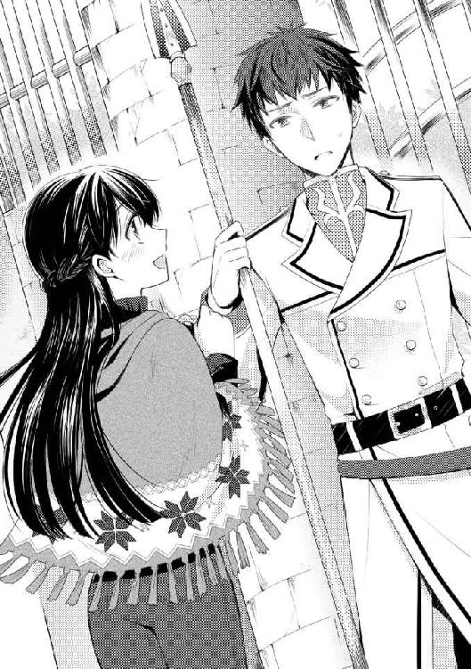

| リングリング 英雄騎士と異世界の乙女 (一迅社文庫アイリス) | |
| 三国 司 | |
| (2014) | |
イラストレーション ◆ みずのもと
リングリング 英雄騎士と異世界の乙女
就職氷河期。
世間の不況の荒波に、大学四年生の梅本詩織も、もれなく呑み込まれていた。
内定ゼロ。この恐ろしい言葉も、今の詩織にとっては紛れもない現実なのである。就職先が見つからないまま、大学を卒業してしまったのだ。
その旨を両親に連絡すると、「大丈夫大丈夫、これからは仕事と一緒に結婚相手も探しなさい」と、軽い調子でそれだけを告げられ電話を切られた。
実家に帰ってこいとは言われなかったので、このまま一人暮らしを続けつつ職を探す事になるだろう。
先の見えない将来に不安を抱きながら、詩織は携帯をベッドに放った。とりあえず腹ごしらえをしようと、近くのコンビニへ向かうために財布と部屋の鍵だけを持ってマンションを出る。
「うぅ、寒い」
春が近いとはいえ、夜は冷える。
冷たい風に詩織が思わず首をすくめた瞬間――
「......何っ!?」
足下から立ち上がった強烈な光に全身が呑み込まれる。
あまりの眩しさに、詩織は悲鳴を上げるより先に強く目をつぶった。
まぶたを閉じていた時間はどのくらいだったのだろう。
詩織はそっと目を開けて、辺りの様子を窺った。そこに広がっているのはもちろん、見慣れたマンション前の道路のはずである。
（私、目がおかしくなったんだろうか）
詩織は焦ってまばたきをしたが、眼前の景色は変わらない。
時刻は昼ごろだろうか。空を見上げると明るい太陽の光が白い雲を照らしている。詩織が立っている場所はどこかの狭い路地裏といった雰囲気だが、少し離れた場所からは人々の話し声や生活音が聞こえてきた。
目の前の家のクリーム色の土壁を怖々触ってみると、日陰になっているせいかひんやりと冷たい。隣は可愛らしいレンガ造りの家だ。地面はアスファルトではなく土で、大通りの方は石畳が敷かれているようだった。
ヨーロッパ辺りの歴史ある古い街のような、あるいはファンタジー映画に出てくる空想の街のような、そんな雰囲気。
「大丈夫。ちょっと落ち着こうか」
詩織は自分を励ますように独り言を呟いた。
とりあえず今の自分の格好を見直してみる。シックな赤のニットポンチョに、ぴったりとしたスキニージーンズ、それに冬のセールで買った茶色いブーツ。コンビニへ行こうとマンションを出た時の格好そのままだ。
なのに周りの景色だけが変わっている。これは一体......。
恐る恐る、詩織は大通りに向かって歩き始めた。強烈な不安が胸を襲い、手に持っていた財布をぎゅっと握りしめる。
路地の陰からこそっと顔を出し、街の様子を窺う。そしてちょっと絶望した。
通りを行き来する人々の服装はセーターやジーンズなどではなかったのだ。この街のイメージに合った、少し古めかしい衣装。
訳が分からず混乱する詩織だったが、しかし通りに並ぶ店らしき看板の文字を目に映した途端、唐突に現状を理解する。
（私、あの文字知ってる......）
息を呑み、結論づけた。
――ここは地球じゃない。私は〝彼〟と同じく、自分の住んでる世界から全く別の世界へとトリップしてきたんだ、と。
「どうしてこんなことに......」
いったん路地の奥に戻ると、詩織は頭を抱えてしゃがみ込んだ。
（とりあえず〝彼〟を探してみようか）
ここは彼の住む世界だろうし、ここで自分が頼れるのはその人しかいないのだ。
詩織の脳裏に懐かしい男の姿が浮かび上がる。
艶やかな白銀の髪に、高い身長としなやかな筋肉。品がありながらどこか野性的なたくましさを持っていて、優しげなのに、時に鋭く男らしい。白を基調としたかっちりとした制服に身を包み、腰に剣を差した、騎士みたいな風貌の男。
いや、実際この国では騎士をやってたらしいのだが。
詩織はため息をついて、三年前の出来事を思い返した。彼と出会ったのは、真冬の寒い日の事である。
大学一年の冬休み、マンションでひとり夕飯の鍋の用意をしていた時だ。ワンルームの狭い部屋が光に包まれたかと思うと、次の瞬間にはそこに中世の騎士みたいな格好をした男が立っていて、唖然とした顔でキッチンにいる詩織を見つめてきたのだ。
しかし驚きたいのは詩織の方である。いきなり自分の部屋に西洋風の剣を持ったコスプレ男が現れたのだから。
しばし固まっていた彼は、けれどすぐに腰に携えた剣に手をかけると、視線だけを動かして狭いマンションの部屋を観察しながら、詩織の事も警戒し始めた。
詩織が喉まで出かかっていた恐怖の悲鳴を呑み込む事ができたのは、その姿から男が詩織と同じ位この状況に戸惑っている事が読み取れたからだ。
相手も自分と同じで訳が分かっていない。そう確信すると少しだけ冷静になれた。
「あの......」
キッチンからおずおずと声をかけると、男は警戒を解かぬまま瞬時に詩織に向き直った。下手に近づくと斬られそうな迫力。
鋭い瞳でこちらを睨みつけてくる彼に、詩織は今朝道ばたで見かけた野良猫に言ったのと同じ言葉をかけた。
「大丈夫......何もしないから」
さすがに「ちょっと撫でるだけだから」とまでは続けなかったが、言ってから、どうして私の方が侵入者を安心させようとしているんだと自問した。
男はしばらくじっと詩織を注視したが、やがて剣からそっと手を離した。
ちなみにこの時の事は、後で彼から律儀に謝られた。本気で斬りつける気などなかったが、何の罪もない――それどころかむしろ被害者の女性に剣を向けようとしたなんてと。
「あの、あなたは一体......。今のはどういうマジックですか？ そしてそれはコスプレ？」
不審感丸出しで尋ねるが、返ってきた言葉に詩織は眉根を寄せる。
「＊＊＊＊＊？」
日本語でもなければ、英語でも中国語でもない。聞き慣れない言語だった。何を言っているのか、さっぱり分からない。
「＊＊＊、＊＊＊＊？」
困った......。詩織は途方に暮れた。
男は何かを詩織に尋ねている風だったが、自分の言葉が通じていないと分かると諦めたように口をつぐんだ。部屋を改めて見回し、テレビやエアコンといった見慣れない電化製品に怪訝な目を向けた後で、また詩織に視線を戻す。
そうして相変わらずその場に固まったまま、戸惑うばかりの詩織に、
「＊＊＊＊＊」
一言声をかけると、くるりと体を反転させて窓の方へと向かった。カーテンを開けると外は暗かったが、周囲の建物の明かりが景色を賑わせていた。男は鍵に多少手こずりながらも窓を開け、狭いベランダへと出ていく。
「ちょ、ちょっと？」
何をするつもりなのかと混乱する詩織の前で、彼はベランダの手すりに足をかけた。ちらりと下を確認して「いける」と思ったのか、そのまま飛び降りようと――
「だ、駄目ッ！ 無理だから！ ここ三階ですッ！」
詩織は慌てて駆け寄ると、男の上衣を引っ張った。
「＊＊、＊＊＊」
必死で引き止める詩織に、男が困ったような顔を向ける。しかし大人しくベランダへと降りると、引っ張られるまま部屋へと戻った。
「あ、危ないでしょ、あんな所から飛び降りたら！ だいたい、出入り口はちゃんと向こうにあるし......っていうかそんな服装で外に出たら確実に職務質問されるよ。ほら、ちょっと座って、一旦落ち着こう、あなたも私も......。あ、ブーツは脱いで。日本の家は土足厳禁です」
「＊＊＊＊＊!?」
そう言って、可愛らしい水玉のカバーがついた座布団に男を座らせながら、詩織は彼のブーツを脱がしにかかったのだった。
今思い出しても、あの時の自分の行動はおかしかったと詩織は思う。出ていこうとした不審者を再び家に引っ張り込んだ挙げ句、部屋で匿うことにしたなんて。
ベランダから飛ぼうとするのを止めても、その後男をドアから追い出さなかったのは、何だか彼が世間知らずで危なっかしく思えて放っておけなかったからだ。
奇妙な格好をしているのに頭のおかしな人間には思えなかったし、むしろ言葉が通じなくても、彼の誠実さや真面目さを感じ取る事ができたから。
しかしかくして、詩織がそれまで自分でも気づかなかったほどのお人好しっぷりを発揮することで、二人の共同生活は幕を開けたのだった。
彼――クラストと詩織が打ち解けられるようになったのは、クラストが早々に日本語をマスターしてくれたおかげだった。
どこの外国人モデルかと見まごうほどの容姿をしていて、運動神経も良さそうだったクラストだが、しかし彼の高スペックっぷりはそれだけではなかったのである。つまり、すこぶる頭も良かった。
ひと月も経つと、カタコトながらも日本語で会話を交わせるようになり、三ヶ月後には「生まれは東京」と言ってもおかしくないような、なまりの無い流暢な日本語を話した。
クラストが日本語を話せるようになった事で、詩織たちは相手の気持ちを知って、より深くお互いを理解できるようになったのだ。
そしてクラストは「自分は他の世界から来た」という驚愕の事実を告げ、突然詩織の部屋に現れた状況にも思い当たる節があると話してくれた。
「知り合いに魔術師がいるんだ。ここへ来る直前もそいつに呼び出されて、実験に付き合えと魔法陣の上に乗せられた。原因はあれしか考えられない。あいつ、今度会ったら......」
なんて苦々しい顔で言いながら。
クラストの世界には魔法があり、魔術師がいるのかと詩織は驚いたものだ。なんというファンタジー！ と。
しかしクラストにとっては、この現代日本の方がよっぽどファンタジーだったようである。特にテレビや携帯なんかの電化製品には一番の驚きを見せていた。
大の男が震える携帯と不安げに接触をはかるという図は、今思い返しても楽しい光景だ。
二人分の生活費をまかなうため詩織は学業の傍らバイトにも精を出したが、クラストはそれをとても気にしていて、自分も仕事がしたいと何度となく訴えた。
しかし彼には日本で仕事につけるほどの知識や常識が無い。日本人からすると派手にも見える完璧な外見と明るい銀髪も、普通の仕事につくには邪魔になるだろう。
だから詩織はクラストが日本に馴染むまで、お金の事は自分一人で何とかするつもりだった。
クラストは早く仕事につけるよう日本の常識や習慣を身につける努力をし、そしてそんな彼の姿に詩織は好感を持った。
狭いワンルームに二人暮らし。楽しくも奇妙な共同生活は、詩織の毎日を鮮やかに彩り、輝かせた。
けれど楽しい生活は長くは続かない。別れは突然やって来た。
クラストがトリップしてきて三ヶ月が過ぎた頃だった。詩織がバイトから帰ってきて、クラストが部屋でそれを出迎えた瞬間、彼の足下から光がのぼってきて、そのスラリとした筋肉質な体を包んだのだ。
そして目もくらむ眩しさに詩織が思わずまぶたをぎゅっと閉じ、再び開いた時にはもう、彼の姿は消えていた。
別れの抱擁も、言葉すら交わす暇もなかった。あっという間の出来事。
詩織は玄関で立ちすくみ、目を見開いたまま呆然とするしかなかった。先ほどまで目の前にあったはずの温もりは、もう二度と戻ってくる事はないのだと自分に言い聞かせるために。
彼がここへ来た原因が知り合いの魔術師にあるのだとしたら、今彼が消えた原因もその魔術師にあるのだろう。彼はきっと、魔術師の魔法によって自分が元いた世界へと呼び戻されたのだ。
（だったらそれでいいじゃない）
そう思いながらも、詩織の胸にあるどうしようもない喪失感は、それからしばらく消える事はなかった。
そしてそれから三年。
（今度は私がトリップしたってこと？）
見知らぬ世界の路地裏で、詩織は何とか現実を受け入れようとしていた。通りにいる人たちが交わしていた言葉は、確かにクラストが最初の頃話していた言葉と同じものだ。
詩織が日本語を教える代わりに彼からこの国――ルティーリアの言葉を教えてもらったこともあるし、それは絶対間違いない。そしてクラストがこのルティーリアのどこかにいることも間違いないだろう。
今度は私が彼を頼っても、罰は当たらない気がする。そう詩織は思った。
しかし詩織とクラストが生活を共にしていた時から、もう三年も経っている。詩織にとって彼は忘れる事の出来ない存在だけれど、相手も同じように思っているとは限らない。
「でも他に知り合いもいないし......」
いつまでもこの路地裏に留まってはいられない。もうすぐ日が暮れる。
「忘れられてるかもしれないけど、とりあえずクラストを捜してみよう」
意を決して、詩織は路地裏の陰から人々が行き交う大通りへと出た。ブーツに包まれた足裏に、石畳の固い感触が伝わってくる。
通りの左右には様々な店や屋台が立ち並び、人通りも多い。住人たちは活気に溢れ、街は明るく賑わっていた。
（特に注目は浴びてないよね？）
詩織の今の格好はこの街では少し浮くかもしれないが、特別奇妙という訳でもなかった。街の住民にもちらりと視線を向けられるくらいで、心配するほど悪目立ちはしていないらしい。
ふぅと胸を撫で下ろし、詩織は改めて前方を見つめた。
ここから少し離れたところに、おとぎ話に出てくるような美しい白亜の城が見えている。
（本当に日本じゃないんだ......）
その景色をすんなりと受け止める事はできないものの、とにかく詩織は城に向かって足を進めた。クラストが自分の事を『王に仕える騎士』だと言っていたことから、あの城が王の居城だった場合、クラストもそこにいる可能性が高い。
確信は持てないが、少なくともこのまま街中を当てもなくうろついているよりはいいだろう。
一人で歩いている最中、ブツブツと小さく呟きながらルティーリアの言葉を思い出す。クラストにたくさんの単語や言い回しを教えてもらっていたのだが、残念ながら詩織の学習能力は平均的で、クラストみたいに一度聞いただけで覚える事は出来なかった。
しかしその分、ノートに書き留めて復習はしていたのだ。クラストがルティーリアに戻ってからもそれは続けた。
（たぶん私はクラストがまた戻ってきてくれるのを心のどこかで期待していたんだろうな）
そして戻ってきた彼をルティーリア語で歓迎し、喜ばせたかった。
――結局、どれだけ待っても彼が日本へやって来ることはなかったけれど。
小さな刺が刺さったような、ちくりとした痛みを胸に感じながら詩織は思う。私クラストの事好きだったんだなぁと。
むしろ異性と一つ屋根の下で生活していて意識しない方がおかしい。しかも相手はイケメンという言葉が陳腐に思えるほどの美形な上、性格も芯があって男らしく、優しいのだ。異世界での生活は不安しかなかっただろうに、それを吐露したり愚痴ったりする事はなく、ただひたすら詩織の事ばかり気遣ってくれたのだから。
こんな男が身近にいて、惚れない訳がない。
今も、もう一度クラストに会えるかもしれないと思うと、勝手に胸が高鳴ってくる。
けれど、今は恋愛感情はとりあえず心の奥にしまっておかないといけない。
これからこのルティーリアでどうやって生きていくのか、日本に帰れる方法はあるのか。考えなきゃならない事は他にたくさんある。
クラストに会えても助けてもらえる保証はない。迷惑がられるかもしれないし、あまり期待を持たないようにしなければ。
自分の中の乙女心を封印して、詩織は着々と城へ足を進めていった。
時計がないので分からないが、少なくとも二時間は歩いただろう。足が痛くなってきたところで、やっと詩織は目的地へと到着した。
広大な敷地の奥に、大きな城が迫っている。繊細で優美だが、近くで見ると圧倒された。
正面入り口と思われる大きな門に進むと、そこには槍を持った二人の衛兵が立っていた。彼らも騎士なのだろうか。
（クラストが着ていた制服に似てるけど......微妙にデザインは違うかな）
門番たちを一通り観察してから、詩織は勇気を出して彼らに近づいていった。刃のついた槍をこちらに向けられやしないかとヒヤヒヤしながら、門の脇に立っていた一人に小さく声をかける。
「あの、すいません」
思わず日本語で話しかけてしまい、怪訝な顔をされた。
ルティーリアの言葉で話さなきゃ。さっき散々復習したんだから。そう思うものの、緊張からか頭が真っ白になって、言葉が飛んでしまっていた。
「あの、あの......」としどろもどろになっている詩織に、門番の方が話しかけてくる。
「異国人か？」
その声には少し警戒が滲んでいた。
が、特に裏の無さそうな詩織の様子を見て、次には門番の声もやわらかくなっていた。
「もしかして迷子かい？」
彼は詩織の年齢を五歳ほど若く勘違いしているようだ。言葉遣いは気軽で、少なくとも大人の淑女に対するものではなかった。眉毛を描くくらいの化粧しかしていなかったので、幼く見えたのかもしれない。
「迷子、違います」
詩織は首を振って否定する。ある意味盛大な迷子だけれども。
「質問、いいです？」
「どうした？」
一呼吸置いて、単刀直入に聞く。
「あなた、クラスト、知ってる？ クラスト・オーフェルト」
名前だけでは分からないかも、と思ってフルネームを出してみる。けれど同じ騎士だったとしても、その数は百や二百じゃ収まらないはず。この門番がクラストを知っている可能性は低い。

「知らない」と言われる事を覚悟して質問してみたものの、嬉しくもその予想は見事に外れた。クラストの名を聞くと、門番はピクリと片眉を上げたのだ。
「クラスト・オーフェルトだって？ もちろん知ってるさ」
「本当!?」
詩織の表情がパッと華やぐ。まさかこんなに順調にクラストを知る人物に出会えるとは。
「私、クラスト、会いたい。お願い」
しかし興奮気味に詩織がそう頼むと、門番の表情は急に険しくなった。ため息をつかれ、軽くあしらわれる。
「駄目駄目。クラストさんは忙しいんだ。いちいち君たちの相手をしている暇はないんだよ」
言われた言葉を、詩織は必死に脳内で処理する。「クラスト」は「忙しい」から「駄目」だと断られた。けれど「君たち」という複数形になっているのはどういうことだろう。自分の他にもクラストに会いに来た人物がいるのだろうか？
「私、クラスト、知り合い、です」
「そんな嘘ついたって駄目だ。だいたい本当に知り合いだというなら、きちんと約束を取り付ければいい」
「嘘、違う。私――」
「さぁ、もう帰った帰った。クラストさんは君には会わないよ」
すげなく追い払われ、詩織は渋々諦めた。ねばってもクラストには会わせてもらえそうにない。
彼の事を知っているなら、ちょっと呼んできてくれたっていいのに。そう思ったところで、待てよと気づく。
（もしかしてクラストって結構偉い立場にいる人なのだろうか？ だから簡単には呼んで来られないし、会わせてももらえない？）
けれど彼はまだ若い。年齢も詩織より二つ上なだけだったはず。騎士たちの中でもそれほど権力のある地位にいるとは思えないが......。
詩織は頭をひねりつつ、城から離れた。クラストを頼るのはどうやら難しそうだと分かったので、とりあえず今晩泊まれる場所を探すため街へと戻る事にしたのだ。ぐずぐずしていたら、あっという間に夜になってしまう。
また二時間以上かけて街へと戻った詩織はもうクタクタだったが、休んでいる暇もなかった。
（泊まり込みで仕事をさせてくれるところがあれば一番良いんだけど......）
この街で生活しながら、クラストに会えるまで城に通う。それが最善の方法に思えた。
そしてクラストに会えたら、彼の知り合いの魔術師を紹介してもらうのだ。三年前、彼を異世界トリップさせた魔術師を。
（その魔術師ならもしかしたら、私を日本に帰せるかもしれない。というかそもそも、私がこっちの世界に来ちゃった原因って何なんだろう？）
しかし詩織には自分の身に起きた超常現象の原因を突き止めることは難しかった。
まぁ、すでに起こってしまった事をあれこれと考えていてもしょうがない。これからの事を最優先で考えないと。そう気を取り直して、仕事と寝床を探す事に集中した。
布生地や服を売っている店に、鍋なんかを扱う金物屋、果物や野菜、花を売る屋台、小さな食堂、古びた宿......。日本でも就職難に苦しんだ詩織だったが、ルティーリアでも同様に苦労する事になるとは。
街を歩き、異世界人の自分でもなんとか手伝えるんじゃないかと思える仕事を見つけては、店の主人に「雇ってほしい」と頼み込む。それを何度も繰り返したのだが、結局頷いてくれる者は現れなかった。
詩織は言葉が不自由だし、どうせ雇うなら言葉も常識も通じる自国の人間の方がいいのだろう。
（心が折れそうなんですけど......）
詩織は肩を落とした。雇うことを断られただけなのに、自分の人としての価値まで否定されたような気持ちになる。日本にいた時から何度も経験してきた事だけど、続くとやはり辛い。
すでに太陽は山の陰に隠れようとしており、人々の帰りをせかすように真っ赤な夕日が街を照らしている。人通りは見る間に減っていき、周囲の店も閉店の準備を進めていた。
お菓子を買ってもらった子供が嬉しそうに親の手を握り、家のある方向へと歩いていく。素朴な青年が花売りの娘に「明日もまた来るよ」と声をかけ、手を振る。
そんな人々の様子を詩織は黙って眺めていた。みんな誰かと知り合いで、みんな誰かと繋がっている。
（どうしよう、なんかすごい寂しくて心細い）
涙をこらえて唇を引き結ぶ。暗く沈んでしまいそうな気持ちを切り替えようと首を振った。
（こんな事で泣いてどうするの。日本にトリップしてきたクラストが、「寂しい」「帰りたい」って泣いた事があった？ 弱音を吐いた事があった？）
自問し、答える。「いいえ、ない」と。
なら、私も頑張らないと。
「よしっ！」
詩織は気合いを入れ直すと、再び歩き出した。泣いてたって仕事は見つからないのだ。
「悪いねぇ、うちはあたし一人で十分さ」
「そう......」
地べたに布を広げて、石を繋げたようなアクセサリーを売っていたお姉さんに声をかけた詩織だったが、やはりあっさりと断られてしまった。商売の規模からして、断られる覚悟はしていたのだが。
「あんた異国の人間かい？ ルティーリアでも黒髪は珍しくないけど、手入れされてて綺麗だし、肌も白くて荒れてない。おまけに服も上等そうだ。なのに住む家も仕事もないなんて、何か訳ありなんだねぇ？」
お姉さんは詩織の外見をじっと観察して、そう言った。
「助けてやりたいのは山々だけど、生憎あたしも自分の事で手一杯なのさ」
お姉さんが言っている言葉の意味はなんとなくしか分からなかったが、自分を気にかけてくれた事は分かって、詩織は嬉しくなった。
「平気。ありがとう」
トリップしてから初めて表情を崩す。この世界にもきっと、優しい人は大勢いるのだろう。
そろそろ家路につこうとアクセサリーを片付け始めたお姉さんに、詩織は何となく聞いた。
「質問ある。あなた、クラスト・オーフェルト、知ってる？」
知らなくて当たり前の、何の期待もこもっていない質問だった。
ただ詩織は、あの門番の言葉がずっと気になっていたのだ。まるでクラストが有名人かのような、そして詩織が彼のミーハーなファンであるかのような言い方だった。
「クラスト・オーフェルト？ もちろん知ってるよ」
当たり前でしょ、という風に答えたお姉さんに、詩織は大きく目を見開く。波打つ赤茶色の髪を色っぽくかき上げて、お姉さんは続けた。
「クラスト・オーフェルトの名前を知らないやつなんて、ルティーリアにはいないよ。彼は英雄さ」
「え、英雄......」
その単語は知っている。けれどそれがクラストとイコールで繋がっているなんて。
「二年ほど前のことかねぇ。この国が多くの魔物に襲われた事は、異国人のあんたでも知ってるだろう？」
詩織が反応を返すのを待たずに、お姉さんは続ける。
「魔物なんて普通に生活してりゃまず出会わないけどさ。百年だか千年だかに一度、何故だか分からないが同じ場所で大量に生まれることがある。それがちょうど二年前にこの国で起こっちまって......一番最初に被害を受けたのは南部の小さな村だった」
話を聞きながら、詩織はごくりと息を呑んだ。
クラストからこの世界の話を聞いた時、確かに魔物が出るということも言っていた。その時は「怖いねぇ」なんて人ごとのように思っていたけど、今は実際その世界にいるんだから恐ろしい。
「魔物は人間を襲い、建物を破壊する。町を壊滅させたら、また次の町へ。南部の方はそりゃあヤバい状態になっててね、この王都周辺に魔物たちがやってくるのも時間の問題だった」
腕を組んで目をつぶり、しみじみと語るお姉さん。
「だけど国王陛下が派遣した精鋭部隊の一団、とりわけクラスト様の活躍で魔物たちは倒されたのさ。今まで戦ってきた騎士や魔術師、傭兵たちでは、まったく歯が立たなかったってのにだよ。それであたしら国民は、彼を国を救った『英雄』と呼ぶようになったのさ。あたしもクラスト様は大好きだよ。凱旋パレードの時に見たけど、惚れぼれするような良～い男だったしねぇ」
うっとりとした声で、お姉さんは話を締めくくった。
詩織は頭を高速回転させて、今の話を自分なりに噛み砕いていく。知らない単語もたくさん出てきたけど、重要な部分は読み取れたと思う。
『魔物を倒し、この国の危機を救ったクラストは、英雄と呼ばれるようになった』
それが二年ほど前の出来事という事は、つまり彼が英雄になったのは、日本から戻った後ということ。日付や時間の数え方は、この世界も地球もほとんど同じだったはずだから、それは確かだ。
詩織は思う。クラストが帰ってしまった後、私が寂しいながらも平凡な大学生活を送っている間、彼はこっちで魔物相手に戦い、英雄になっていたのね、と。本当に『世界が違う』のだ。
そして、こうも思う。
（クラストがそんなに強いなんて知らなかった。体は鍛えられていたし弱そうには見えなかったけど、あっちじゃ戦う機会がなかったから）
詩織の狭い部屋にクラストがいる状況は、強くて大きな狼が窮屈な檻に閉じ込められているような状況にも似ていたのかもしれない。彼の銀髪は目立つから、余計な注目を浴びぬよう「あまり外に出ないように」と詩織が頼んだのだ。
今更ながら、彼が自分の世界に戻れてよかったと思う。日本ではクラストの戦闘能力も宝の持ち腐れだった。
（狭い私の部屋での生活は退屈だっただろうなぁ）
過去に想いを巡らせながらしんみりしている詩織に、荷物を畳んだお姉さんが言う。
「もう日が沈むし、そろそろあたしは帰るよ。あんたを一晩泊めてやりたいけど、あたしも今は宿暮らしでね」
じゃあね、と手を振って行ってしまうお姉さんの後ろ姿を眺めながら、詩織はまだクラストの事を考えていた。
（ちょっと待って。クラストがそんな有名人になってるなら、彼に会って話をするのは不可能に近い事なんじゃないの？ となると彼の知り合いの魔術師にも会えなくなって、私が日本に戻れる可能性も低くなる？）
詩織の表情が、さっと曇る。
（クラスト......なんで英雄なんかになっちゃったの......）
時刻はおそらく、夜の七時か八時。日は落ちて空には星闇が広がっているが、詩織からすればまだそれほど遅くない時間帯だった。日本ならスーパーだって開いている。
が、しかし。
この街で開いている店は、もうほとんどない。昼間あれほど賑やかだった大通りも、今はしんと静まり返っていた。街灯なども日本ほど多くはないようだ。
夜ってこんなに暗かったっけ？ と恐怖を感じた詩織は、それを打ち消すように歩く速度を速めた。
仕事も、ただで泊めてもらえる宿も見つからず、今夜は野宿で我慢するかなどと思ったものの、やはり無理だと考えを改める。夜というのは思った以上に恐ろしい。暗闇の先に何かいるのではないかという不安が常に胸をよぎるのだ。
この周辺で明かりがついているのは宿屋と食堂、酒場くらい。しかしそれらの店は、詩織が昼間のうちにすでに訪れ、雇うのを断られている店ばかりだった。
（どうしよう。今開いている店で、あと残ってるのは......）
詩織は目の前にある大きな建物を見つめた。三階建てで窓がたくさんあり、正面の大きな扉やバルコニーの手すりなどには、美しいレリーフが刻まれている。
この街は広く、場所によっては治安の悪そうな薄暗い雰囲気の場所もあるけれど、ここら辺一帯は静かで洗練された高級住宅地といった感じだった。詩織のいる位置からも小綺麗な屋敷がいくつか見える。
しかし目の前にある優美な大邸宅風の建物は、日が落ちても頻繁に馬車の出入りがあって、普通の住居とは違う気がした。
（ホテル......かな？）
詩織はそう予想する。もちろん日本の近代的なホテルとは違うが、この街の他の宿より大きくて、雰囲気も上品だ。
何となく敷居が高くて、昼間ここを見つけた時は素通りしていた。たぶん雇ってもらうのは無理だろうと。
けれど今はそんな余裕もない。駄目元でも行かなければ。
宿泊客を降ろした馬車が敷地内から出るのを待って、詩織はそっとホテルの入り口を目指した。そこにはドアマンのような男性がいたのだが、詩織が無言で軽くほほ笑むと、客と勘違いしたのか普通に扉を開けてくれた。
アクセサリーを売っていたお姉さんにも言われたが、手入れのされた肌や髪を見れば、詩織はそこそこ良いとこのお嬢さんにでも見えるのかもしれない。
ただ、妙齢の女性がズボンを穿いているのは変だったのか、ドアマンも少し怪訝な顔をしていたけれど。
中に入ると、大理石のエントランスが詩織を迎えた。思ったほど広くはなく、照明も暗め。しかしそれは蛍光灯などではなくランプや蝋燭を使っているためで、むしろこちらの方が落ち着いていて雰囲気が良かった。
受付カウンターにいる若い男は帳簿とにらめっこをしていて、こちらには気づいていない様子。
彼に声をかけてみようかと思った詩織だったが、ふいに鼻をくすぐった美味しそうな匂いに誘われた。
（ホテルに併設されてるレストランみたい）
エントランスの隣にそれはあった。ちょうど夕飯時なのか、レストランは大いに賑わっている。長い距離を移動して空腹だった詩織は、思わずふらりとそちらに向かった。
食事をしている人々は皆ある程度着飾っていて、上流階級の紳士淑女といった雰囲気だ。広いレストランはほぼ満席で賑わっているが、街の酒場のように下品な騒がしさはない。
（皆お金持ちっぽいし、お屋敷の物置でもいいから今晩私の事泊めてくれないかな......）
そんな事を考えてみるものの、実際に頼んで回る勇気はない。
客から従業員の方へ注意を移す。揃いの制服を着た給仕係がテーブルの間を忙しく歩き回り、客に料理を運んでいる。
そして奥の方へ目をやると、口ひげを蓄え、髪をぴっちりと頭に撫で付けた厳しそうな男性が、彼らの働きぶりを監視するように見つめていた。おそらく人を指導する立場にある人なのだろう。
（雇ってもらえるか聞くのなら、あの人と直接話をした方が早いよね。ちょっと緊張するけど......）
いつまでもボーッと突っ立っている訳にもいかず、詩織は口ひげの男性の元へと向かった。軽く髪を整え、コホンとひとつ咳払いをしてから、恐る恐る話しかける。
「あの、すみません」とか、「お仕事中申し訳ありません」とか、そういう言い回しの言葉が分からないので、
「私、仕事欲しい」
......いきなり本題に入るしかなかった。
言葉が不自由なのは本当に不便だ。常識のない奴と思われたかもしれない。
「何ですって？ 仕事？」
片眉を跳ね上げて、口ひげの男性が返す。その刺だらけの声が詩織の心にザクザクと刺さった。
しかしここでひるんではいけない。野宿は嫌なのだ。
「お願い、です。掃除洗濯、何でもする」
詩織は懇願したが、男性は冷たくこう返すだけだった。
「無理ですよ。異国の方にうちの仕事は勤まりません。全く、どこから入ってきたんだか」
追い払おうと腕を引っ張られたが、詩織は足を踏ん張って抵抗した。日本語で必死に訴える。
「お願いします。人が嫌がるような大変な仕事でも、汚い仕事でも何でもやります。お給料も贅沢は言いません。お願いです、雇って下さい！」
「何を言っているのか分かりませんよ。諦め、なさい、この......」
「嫌、で、す......」
腕を引っ張る男性と踏ん張る詩織が、お互い一歩も引かずに綱引き状態になっていると、
「ちょっとキミ、キミ」
突然第三者の声が割って入った。話しかけられたのは口ひげの男性だったが、詩織も一緒に振り向いた。
すぐ後ろの、奥まった場所にあるソファ席に声の主はいた。
「その子はわたしの知り合いだ。放してやってくれ」
ニコニコと人のいい笑みを浮かべた小太りの中年男性が、そう言って詩織の事を手招きする。彼の隣にはもう一人男がいて、二人で食事をとっていた最中のようだ。
「......それは失礼致しました」
口ひげの男性は詩織と争ったことで吹き出た汗を拭きながら、客の男に頭を下げた。詩織のことをチラリと睨んで、さっさと厨房の方へ引っ込んでしまう。
客の男はもちろん詩織の知り合いではないが、もしかして助けてくれたのだろうか。
「やぁ、お嬢さん。こっちに来て座らないかい？」
笑みを崩さずに男が言う。身なりはきちんとしていてフレンドリーな雰囲気だったし、他にどうすることも出来ないので、詩織は黙って彼の席に向かった。見せびらかすようにして指に金の指輪をいくつかはめていたりして成金チックな印象だが、悪い人ではないのかもしれない。
そんな詩織の考えを裏付けるように、男は言う。
「ちょっと聞こえたんだがね、お嬢さん仕事を探しているんだって？ どうだろう、よければわたしの所で働かないかね？」
嬉しい申し出に、詩織の瞳は大きく見開かれた。このチャンスを逃すまいと、詩織は『うんうん』と首を縦に大きく振り、答える。
「働く、です！ 仕事欲しい」
言ってから、「あ、でも......」と付け加える。
「私、家ない。住み込みの仕事、嬉しい」
たどたどしく伝えると、小太りの男はあっさりとそれを了承した。
「ああ、大丈夫だよ。うちはほとんど皆、住み込みで働いているからね。お嬢さんの部屋も用意するよ」
「本当!? ありがとう。あと私、言葉、下手......平気？」
「問題ないさ。言葉が拙いのも、可愛らしくていいものだ。キミのそういう所に魅力を感じる客も大勢いるだろう」
「よかった......！」
どうやら客商売らしいが、カタコトでも問題にはならないらしい。詩織はホッと息をついて尋ねた。
「仕事、内容、教えろ」
笑顔で言う。詩織の言葉の先生はクラストだったので時々男言葉になることもあるのだが、残念ながら本人はそのことに気づいていない。
突然の命令口調にも小太りの男は怒ることはなく、一緒に席についていた男と共に吹き出した。
「わはは、いいね。特殊な嗜好の客からもウケるかもしれない」
「なに？」
「まぁ、仕事の話は後でじっくりしようじゃないか。それよりキミは腹が減っているんじゃないかい？ これを食べるといい。わたしはまだ手を付けていないから」
そう言って、男は自分のデザートを詩織に差し出した。アップルパイにクリームが添えられたもののようだ。
「コースで出てきたんだが、わたしは甘い物は苦手でね」
詩織に新しいフォークを渡し、自分はグラスに入った酒をあおる。
「あ、ありがとう！」
ちょうど空腹で死にそうだったこともあって、詩織は喜んで皿に乗ったパイを受け取った。この人、すごくいい人だ！ などと思いながら。
「おいひい～......！」
ほっぺいっぱいに男から貰ったアップルパイを詰め込んで、詩織は幸せな声を上げた。
砂糖がたっぷりと使われているそれはとても甘かったが、疲れきっている詩織にとっては最高のごちそうだ。
「俺のもどうぞ、お嬢さん」
あまりにも美味しそうにパイを頬張る詩織を見て、小太りの男の隣に座っていたもう一人の男も、自分のデザートを渡してきた。
（がっついてると思われたかな......）
詩織は顔を赤らめながらも、しかしデザートの誘惑には逆らえなかった。礼を言っておずおずと......しかししっかり皿を受け取る。くれるというのなら、遠慮なく頂こう。もう返さないぞ。
そうして二つ目のパイを口に運びながら、詩織はもう一人の男を改めて観察した。正直に言って、あまりガラはよろしくない。
歳は三十代くらい。ウェーブがかかった茶色い髪は無造作に整えられており、顎髭が似合う男前だった。
しかしまくられたシャツから覗く肌には両腕ともタトゥーが彫られていて、どこかカタギではない雰囲気を感じた。
（でも、パイくれたし......見かけによらずいい人なのかもしれない）
詩織は無理矢理自分を納得させた。
この茶髪の男は、小太りの男の部下なのだろう。あるいは護衛。歳も違うし、友達という雰囲気には見えなかったから。
小太りの男は酒を飲みながら、詩織の体を上から下まで舐めるように見つめて言った。
「きっとキミの事を気に入る客は多いだろう。ドレスを着て化粧をすれば、今よりもっと色気も出る。しかしどうしてズボンなんて穿いているんだい？」
太い指でそっと太ももを撫でられて、詩織はパイを落っことしそうになった。クラストもそうだったし、この世界の人はスキンシップが多めなのかもしれない、と思いつつ質問に答えようとする。
えっと、『どうして』『ズボン』『穿く』とか何とか言ってたな。
「持ってる服、これだけ」
「そうかそうか。しかしこれからうちで働けば、もうお金の心配はなくなるだろう。ドレスや宝石だって、上手く客にねだればすぐに買ってもらえるさ」
わはは、と笑って、小太りの男は詩織の肩に腕を回した。強いアルコールの匂いがつんと鼻をつく。
「ところでキミは夜の経験はあるのかい？」
「経験......夜？」
甘い林檎を呑み込んで、詩織は表情を曇らせた。
この人さっきから、何だか変な話をしてない？ もしかして......いや、もしかしなくても、彼の言う仕事って――
「不安なら、わたしが練習相手になってあげてもいいんだ」
グラスの酒をぐびりと飲み干し、下品な笑みを浮かべる小太りの男。彼はきっと娼館のオーナーなのだろう。最初に見せた、人当たりのいい穏やかな仮面は剥がれかけているようだ。
肩を撫で回してくる男の手に耐えながら、詩織は考える。背中には嫌な汗をかき始めていた。
（今の私には余裕が無い。仕事を選んでいる余裕が。それにもしかしたら異世界人の私がここでお金を稼げる方法なんて、本当に体を売る事くらいなのかも）
だけどそれでも、自分の性格や性行為に対する慣れなんかを考えると......。
詩織はフォークを置いて、自分の肩に回されていた男の手を払った。
「私......無理、です」
この男について行くくらいなら、今日は野宿をした方がマシだ。しばらくホームレス生活を送ったって構わない。必死で仕事を探して、もしどうしても見つからなかったら、その時改めて娼婦という選択も考えよう。だけどそれは、最後の最後の手段。
「無理だって？ 大丈夫さ、何も不安に思う事はない。ちょっと男と遊んで金が得られるんだ。これほどいい仕事はないだろう？」
「ごめんなさい。無理、本当にっ......」
顔を伏せて、詩織は首を横に振った。
と、そこで急に小太りの男の雰囲気が変わる。目つきが悪くなったかと思うと、ドスの効いた声で脅すようにこう言った。
「ああ、いいだろう。嫌だと言うならそれでいいさ。しかし、だったらこのデザートの分の代金はきっちりと返してもらうぞ」
と、空になった皿を指差す。アップルパイは二つとも、すでに詩織の胃の中だ。
「そんなッ......！」
「自分が食べた分の代金は払ってもらおう。それが出来なきゃうちに来て、その分の金を稼いでもらわないとな」
下種な笑みを浮かべる小太りの男に、心の中で「この人でなし！」と叫んで、詩織は相手を睨み上げた。
だけど本当は不安で怖くて仕方がない。自分が娼婦になって知らない男相手に体を許している場面を想像し、泣きそうになった。まだそうやって金を稼ぐ覚悟はできていない。
だけどこのままでは......と、詩織が体を震わせた時だった。
小太りの男が、詩織の目の前でいきなり倒れたのだ。
「......え？」
急に男の体の力が抜けたかと思うと、ソファの背もたれに寄りかかるようにして気を失った。
「な、なに？ 大丈夫なの？」
日本語で問いかけ、ゆさゆさと体を揺するが、男はまぶたを閉じたまま動かない。酒のせいで顔はほんのり赤く、気持ち良さそうな表情で――
「眠ってる？」
そう、小太りの男は、いびきをかいて眠っているだけだった。
心配して損したと思いつつ、何故急に寝てしまったのだろうと首を傾げる。
「おい、ちょっと」
と、それまでほとんど喋らなかった茶髪の刺青男が、手を挙げて給仕係を呼んだ。自分の主人が突然意識を失ったというのに、とくに焦る様子もない。
「どうされました？」
給仕係が二人やってくると、茶髪の男は、寝ている小太りの男の上着の内ポケットから勝手に鍵を取り出して言った。
「酔って眠っちまったようだ。このホテルの十六号室に部屋を取ってあるから、運んでやってくれないか？」
鍵には薄い金属の板がついていて、そこにルティーリアの文字で『１６』と彫ってあった。
給仕係が苦労して小太りの男を運んでいくのを見送ると、詩織は茶髪の男に向き直って聞いた。
「彼、大丈夫？ 酔って、寝る、本当？」
確かに酔ってはいただろうが、直前まで詩織を陥れようとするくらいには意識もはっきりしていたし、あんな風に急に眠ってしまうほどだとは思えなかった。なにか別の病気なのでは？ と、少し気になったのだ。
詩織の質問に、茶髪の男はニヤリと口角を上げた。そして隠し持っていたらしい小さなビンを詩織に見せ、中の透明な液体をちらちらと揺らす。
「なかなか鋭いな。奴が急に眠ったのは、この薬のせいさ。俺お手製の睡眠薬だ」
「睡眠、やく？」
「そう、眠くなる薬、と言えば分かるか？」
眠くなる薬......この人、自分の上司に睡眠薬を盛ったの？ 詩織は思わず身構えた。この男の目的が分からない。
薬はきっと、小太りの男の酒のグラスに入れられていたのだろう。彼は終始詩織の方を向いて話をしていたから、詩織とは反対側に座っていた茶髪の男がその隙をつくのは容易いはず。
「どうして、薬、入れた？ 彼、あなたの、主人......」
「主人？ いや、違う。あの男は俺の店のお得意さんでね。今日もお前が来るまでは、食事をとりながら商談をしてたんだ」
茶髪の男が小太りの男の部下だというのは、詩織のただの勘違いだったらしい。この男もまた、自分の店を持っているのだ。
「明日あの男が目を覚ましても、酒の効果もあって眠る直前の記憶は飛んでるかもな。お前の事もきっと記憶に残ってないだろうから安心しな」
「なんで......」
「なんでこんな事をしたのかって？ 簡単な事だ。――奴にお前を奪われたくなかった」
男が愛する女に言うようなセリフを告げられて、詩織は一瞬面食らった。しかしもちろんそこに甘い感情などは無く、
「最近、店の方が好調でね。俺一人では手が回らなくなってきてた。で、ちょうど誰か......働く意欲が旺盛な、真面目で扱いやすい人間を雇おうと思ってたとこだ」
茶髪の男はそう言うと、詩織の方を見てニッと笑う。
確かに働く意欲はあるし、日本人らしく真面目で扱いやすいかもだけど、と思いつつ、
「嫌......です」
冷や汗をかきつつ、詩織は言った。だってこの男の店も、たぶんろくな店じゃない。娼館で働いた方がマシと思える仕事かも。
男は立ち上がってソファに掛けていた上着を羽織ると、
「いいだろう、断ったって構わないさ。ただし、お前が食べた俺の分のデザートの代金を今ここで払えるならな」
余裕の笑みを浮かべてそう言い放ったのだ。
この男......！ と歯ぎしりしながらも、詩織の負けは決まっていた。タダ食いして逃げる訳にはいかない、と、真面目で扱いやすい性格がばっちり出てしまったのである。
「さぁ、来い。お前に仕事をやる」
さっさとレストランを出ていく男の後を、詩織はとぼとぼと気の進まない様子で追っていった。
デザートを含め、二人分のコース料理の代金は小太りの男が前払いしており、おごられていた茶髪の男に詩織が金を返す必要など無いのだということには、気づける訳もなかった。
時刻は午後九時。遠くの森で狼が吠えると同時に、この国の王に仕える魔術師、レッド・ガレルは軽く身構えた。
怒気をまとった〝英雄〟が、この部屋に近づいてくる気配を感じ取ったからだ。
ここは城の中の一室、ガレルが国王から与えられた部屋だった。
暗い輝きを放つ宝石に水晶玉、何に使うのか分からない蛇や蛙のビン詰め、小型の魔物の剥製に、怪しいまじない道具などが置かれている。そして壁には大きな鏡がかけられ、貴重な魔術書が乱雑に突っ込まれた本棚が残りのスペースを占拠していた。
ごちゃごちゃと物が多い部屋だが、これがガレル仕様なのだ。
ガレルは床に転がっていた呪いの仮面を足で蹴ってどかすと、ため息をついてお気に入りの椅子に座った。細かい彫刻に金彩が施された派手な椅子である。
「いつかバレるとは思っていたけれど、あまりにも早い。まさか毎日確認しているのか？」
部屋に近づいてくる足音を聞きながら、のんびりと足を組む。
ガレルは深紅に染まった長い髪が特徴の、王国一の魔術師である。あるいは世界一と言っても過言ではないかもしれない。
いつも髪に合わせた派手な色の服を着ていて、羽織っているローブも鮮やかな赤だ。首や腕には宝飾品を幾重にもつけており、彼が動くたびにじゃらじゃらと音を立てている。
「ガレルッ！」
扉が勢いよく開けられて、一人の男が中に入って来た。
この国の英雄クラスト・オーフェルトだ。銀の髪を乱れさせ、ガレルに詰め寄る。
「返せ」
彼は低い声でそれだけを言った。ガレルは耳飾りをシャラリと揺らしてとぼける。
「やぁ、クラスト。元気かい？ 相変わらず忙しそうじゃないか。ちなみに僕もこう見えて忙しくてね。何か用事があるならまた今度――」
「斬られたいのか？ 俺の持ち物を返せ」
しかしクラストには効かなかった。彼は本気だ。腰の剣に手をかけ、今にも引き抜こうとしている。
ガレルはその年齢不詳な美しい顔に笑みを浮かべ、ルビーのような赤い瞳で、クラストの空色の瞳を見返した。
「君はあれだね。普段は無口なくせに、『異世界の君』に関する事になると途端に目の色が変わるね」
「何度も言わせるなよ。俺の持ち物を――」
「心配しなくたって、ちゃんとここにあるさ」
ほら、とガレルが指を動かすと、突然クラストの目の前に布袋が落ちてきた。持ち前の反射神経のよさを遺憾なく発揮して、それが床に落ちる前に上手く掴み上げる。
袋を開けて確認すると、中にはちゃんとクラストの服が入っていた。
これは三年前、クラストがルティーリアに戻ってきた時に身につけていた、〝あちらの世界〟の服だ。詩織が選んで、クラストに与えたもの。
中身が無事だった事が分かり、クラストは安堵した。これは自分が地球へ行っていた事を示す、ただ一つの証拠。詩織との思い出を残す、ただ一つのもの。なにせ事前の相談などもなく急にルティーリアへ戻されたものだから、他に何も持ってくる事など出来なかったのだ。
クラストは目の前にいる赤髪の魔術師を睨みつけた。そもそも、何もかもこいつが悪い。
三年前にガレルは、クラストをまだ開発途中の『送移魔術』の実験体にしたのである。ガレルは「城の裏庭へちょこっと飛ばして、びっくりさせようとしただけなんだよ、本当」と悪気がなかった事を強調したが、ガレルの魔力が強力すぎたせいか、クラストはその送移魔術で世界をも超えてしまった。
そしてそれから、ガレルが異世界の存在を突き止めて『召移魔術』を開発するまでの三ヶ月間、クラストはその世界で生きていく事になったのだ。
クラストは思う。自分が送移された先が、詩織のところでよかったと。彼女の助けがなければ、言葉も通じない異世界で無事に生きていく事は難しかったはずだ。
思いやりがあって、恥ずかしがりやで、少しドジで可愛らしい。そんな詩織の事を思い出して、クラストはふっと口元を緩めた。
詩織と出会えた事に関しては、ガレルに感謝してもいいとすら思っている。
「にやにやしちゃって。気持ち悪いよ、君」
椅子の肘掛けに頬杖をつきながら、ガレルが言った。前言撤回、クラストは眉間に深い深いしわを寄せた。
「俺の服を盗んでどうするつもりだったんだ？」
答えによってはただではおかない、という風にクラストが凄む。
この服は、クラストが住む屋敷の金庫の中に大切に保管してあったもの。しかし仕事を終えて家に帰ったクラストがいつものように金庫を確認すると、一緒に入れていた宝飾品や権利書の類いは全て残っているのに、服を入れた布袋だけがなくなっていたのだ。
金庫を壊さず中身を取り出す手口や、金目のものには一切手を付けていない事から、犯人は自ずと割れた。
それでクラストは迷いなくガレルの元へやって来たのである。
百年以上生きているという噂もある魔術師に何故かクラストは昔から気に入られていて、度々ちょっかいをかけられている。三年前の事件しかりだ。
今回もまた何かよからぬ事を企んでいるのではないかと、クラストが警戒するのも仕方がなかった。
「そんなに怖い顔しないでほしいな。僕は君の事を思って行動したのに」
ガレルは悪びれずに言った。態度が偉そうなのはいつもの事である。
「そうだ、本題に入る前にちょっと言いたいんだけど、君、その服の扱いについて考え直した方がいいよ。想い人にもらった服を袋に入れて大事に金庫に仕舞っておくなんて、正直ちょっと変態臭いと思うんだ。しかもその服、一回も洗ってないだろう？ 何？ 洗ったら思い出も消えてしまうとでも思っているのかい？ それとも服についた彼女の部屋の匂いが消えるのが嫌とか？ だとしたら、それって何かもう本当にド変た――」
クラストに剣を突きつけられて、ガレルはやっと口を閉じた。
こう見えて二人の仲は悪くないはずである。少なくともガレルはそう信じている。
「服を盗んで何をしようとしていた？」
もう一度クラストが問う。ガレルは観念したように息を吐いた。
「彼女をこちらに呼び寄せようとしていたんだよ。クラストの『異世界の君』を」
予想とは違ったガレルの答えに、クラストは動揺して固まった。目を見開いて、なんとか言葉をこぼす。
「詩織、を......こちらに......？」
「そうだよ。そしてそれには彼女の持ち物が必要だった」
「だが......服は詩織のものではない。選んで買ったのは彼女だが、着ていたのは俺だ」
「そう、だからやっぱり僕もその服では駄目だと思った。だけどよーく調べてみるとさ......」
ガレルはそこで一度笑みを漏らした。
「その服についていたんだよ。一本だけ、彼女の髪の毛が」
クラストの瞳に光がともる。しかし心の奥底から湧き上がってくる〝期待〟や〝希望〟といった感情を、表に出ないよう必死に押し留めた。
その髪の毛で召移魔術を成功させられるとして、どうなる。本人が望んでもいないのに無理矢理ルティーリアに引っ張ってきてどうなるというのだ。
クラストはそう思うものの、ガレルに聞かずにはいられなかった。
「それで......その髪は？ 召移魔術をやったのか？」
「ああ、やったよ。昼間にね」
ガレルの返事を聞くと同時に、クラストは彼に詰め寄り、その肩をきつく掴んだ。
「なら、詩織は？ 詩織は今どこにッ......」
手のひらに感じていた抵抗が霧散する。目の前にいたガレルが、煙のように消えたのだ。
「いたた......僕の肩の骨を粉砕する気かい？ ちょっと落ち着きなよ」
しかし次の瞬間には、ガレルはクラストから離れた部屋の隅に立っていた。そして少しきまり悪そうに言う。
「召移魔術は試したけれど、成功したとは言ってない」
「失敗したのか......？」
クラストが内心がっかりしている事に、ガレルは気づいた。
「残念ながら。術を発動させても、召移陣には誰も現れなかった」
「なら、詩織は？」
「ここにはいない。術は失敗したんだから、あちらの世界で今も普通に生活を送っているはずだ」
「......そうか」
クラストは落胆したように言った。自分だけの事を思うなら、とても悲しい。心臓がねじ切れそうなほど。
しかし詩織の事を思うなら、これで良かったと思う。失敗して良かった。
「もう二度と、彼女をこちらに呼ぼうとはするな。彼女にも彼女の生活があるんだ。いいな？」
「......君がそれでいいのならね」
ガレルは肩をすくめた。落胆しているのはガレルも同じだ。
しばらく部屋には沈黙が流れた。話が終わればさっさと帰るものだと思っていたクラストが、じっと床を見て動かない。
が、やがてゆっくり顔を上げると、懇願するような視線をガレルに向けた。
「俺を......向こうに送ってくれないか？」
「駄目だよ。前にも言ったはずだ」
ガレルは真面目な顔をして即座に答えた。
「確かに僕にとっては、『異世界の君』をこちらに召喚するより、君を向こうへ送る方が簡単だ。知らない人間より知っている人間を動かす方が、はるかに容易い。だけどこの国の英雄を、おいそれと他の世界に送る事はできないよ。この国にとって、君は今や陛下と並ぶほど重要な人物だ。簡単には失えない」
「英雄なんて、周りが勝手に呼んでるだけだ」
詩織に会えないことで生まれる孤独感とか、いつまでも彼女の事を引きずる自分への苛立ちとか、そういう行き場のない思いを全部魔物にぶつけていたら、いつの間にか相手を綺麗さっぱり殲滅していたというだけ。
「しかし意外だな。お前が国の事を考えているなんて」
冗談めかしてガレルにそう言った後、クラストは改めて真剣な顔をした。
「......ずっと向こうで生活する訳じゃない。ただ、礼を言いに行きたいだけだ。すぐに戻る。詩織だって俺に長居されるのは嫌だろうしな。なんせ俺は向こうでは何の役にも立たないんだ」
自嘲するようにクラストは笑う。剣を持って外に出たら、『警察』という組織に捕まってしまうような世界だ。騎士が活躍できるはずもない。
ガレルはそれでも首を振った。
「駄目だよ。礼を言いに行くだけとか言って、実際向こうに行って『異世界の君』の顔を見たら、君は離れたくないと思うに決まってるんだから。強制的にこちらに戻したとしても、未練が深まるだけだろうし」
言われて、クラストは反論できなかった。
未だに彼女の事を想い続ける自分の女々しさを断ち切るように息を吐いて、くるりと体を反転させる。
「帰る」
そして扉から廊下へと出る寸前、ガレルの方を振り返って忠告を残した。
「もう俺の事にも、彼女の事にも首を突っ込むなよ」
クラストが離れて行ってから、ガレルはぽつりと呟いた。
「やだなぁ、分かりやすくしょんぼりしちゃって」
まるで捨てられた犬のようだ。三年前、ルティーリアへ戻ってきた直後のクラストも、まさにあんな状態だった。
月日が経って傍目には持ち直したように見えるものの、クラストがずっと『異世界の君』――シオリを求めている事は、ガレルの目には明らかだった。
たぐいまれなる魔術の才能を持ち、凡人とは違う人生を送ってきたガレルにとって、クラストはある意味特別な存在だ。魔術と剣という違いはあっても、クラストもまた才能ある天才だから。
自分と同じステージに立っている、唯一の人間。
簡単に言うと愛着がある。クラストが幸せだとなんとなく自分も幸せでいられる。そんな気がするのだ。
だからシオリをルティーリアに呼んでやろうとしたのに、クラストは余計なことはするなと言う。
「かといって、もう一度召移魔術を試せと言われても、シオリの髪をなくしてしまったから無理なんだけどね」
ガレルはごちゃごちゃと散らかっている自分の部屋を見渡した。この空間のどこかに落としてしまった髪の毛を見つけるのは、おそらく永遠に無理だろう。
召移魔術は失敗したと思っている彼らは、召喚位置がズレただけで詩織がちゃんとこの世界にやって来ているとは知る由もなかった。
「どこ、行く？」
闇の中、前を歩く男の背中に問いかける。詩織の心には不安しかない。
「俺の店だ」
男の名前はロッシェというらしいが、教えてもらったのはそれだけだ。何の店なのかと尋ねても、「ついてくれば分かる」と返されるばかりで。
（絶対健全な商売じゃないと思うんだよね......）
そう警戒する詩織の予想通りに、ロッシェは治安の良さそうな高級住宅街からずんずんと離れていった。一般的な住宅や店が建ち並ぶ地域へ出ると、迷路のように入り組んだ路地に入り、さびれた民家の角を曲がって、ゴミを漁る野良猫の横を通り過ぎる。
地元の人間じゃなければ見つけられないような奥まった場所に、彼の店はあった。
「ここだ」
赤いレンガの、こじんまりとした二階建ての建物。一見普通の家にも見えるが、入り口の扉の上には、ここが店である事を表す小さな看板が掲げられている。
しかし詩織にはその文字が読めなかった。
「字、何、書いてある？」
看板を指差して訊くと、
「薬屋」
ロッシェは入り口の鍵を開けながら端的に答えた。
「......薬？」
詩織が呟く。この刺青男が薬屋をやってる？ 『薬』と書いて『ヤク』と読む方のじゃなくて？ などと失礼な事を思いながら。
小さな鐘がカランと鳴って扉が開くと、ロッシェに続いて詩織も恐る恐る中へと足を踏み入れた。
入り口から一番近い位置にあるのは木製のカウンターだ。向かって右側の壁には小さな引き出しがいくつも並んでいて、左側の壁の棚には、薬が入っているであろうビンがずらりと置かれている。
薬は液体のものもあれば粉状のものもあり、何かの木の実みたいな粒が入れられているものもあった。天井近くには草花の束もつるして干してある。
カウンターの奥には作業台と椅子が置かれていて、その隣にはかまどと鍋類。床には汚れたバケツや木の葉が落ちており、少し散らかっている印象だ。
手狭な店内の一番奥には、裏口の扉と二階へと続く階段も見えた。
（本当に薬屋さんなんだ......）
詩織は壁に並べられた大量の薬ビンを感心したように眺めた。ここにある薬は、ほとんどが植物からできているようだ。
「私、仕事、何する？」
詩織が訊くと、ロッシェは「ほとんど全部」と言い切った。
「薬草の世話から薬作り、接客まで。覚える事は山ほどあるが、作業は単純だから素人でも出来る。だがまぁ、仕事は明日からだ」
今日はもう遅い、と続けながら、ロッシェがかまどに火をつける。店内がぼうっと明るくなって、空気がじんわり温まってきた。ゆらゆらと揺れる炎を見ていると、何故かとても安心する。
「急だったからお前の分のベッドが無いな。明日中古品でも探しに――」
ロッシェの言葉はほとんど右から左へと抜けていった。頭がぼうっとして、思考が鈍る。思えばトリップしてからまだ一日も経っていないのだ。今日の疲れや心労が、一気に襲ってきたかのようだった。
まぶたが重くなり、足に力が入らなくなって......。
「......おい!?」
ロッシェの慌てたような声を最後に、詩織の意識は途絶えた。
「ん......」
温かくて心地良い布団の中で寝返りを打とうとして、詩織の体は何かにぶつかった。しかしそれを避けて反対側に寝返りを打ったら、今度は壁らしきものにぶつかる。
（なんでこんなに狭いの......）
夢うつつにそう思って苛立つ。自分の動きを邪魔する障害物を確認しようと詩織は目を開き、
「............」
固まった。
どうしてこんな状況になっているのか頭を整理するのに、かなりの時間をかける。
ここは確かにベッドの上だが、詩織のマンションのベッドではない。目の前にはくせ毛で茶髪の刺青男が、肩をむき出しにして眠っていた。服、着てない......？
男の体臭なのか香水なのか、ムスクみたいな香りと、うっすら煙草のような匂いもする。どちらかというと詩織の好きな匂いだ。
「ええっと......」
男の名前はロッシェだ。そうそう、段々思い出してきた。
だけど裸の彼と一緒のベッドで眠る理由が見当たらない、などと思いつつ詩織は上半身を起こす。
よかった、ポンチョは脱いでいたけれど、服はちゃんと着ていた。
詩織はこの状況に少しデジャブを感じていた。クラストがトリップしてきていた時、何度か同じベッドで眠った事があるのだ。
彼にはちゃんと客用の布団を貸していたのだが、朝目を覚ませば、何故か詩織のベッドにもぐり込んでいる事がたまにあり、恥ずかしさから思わず悲鳴を上げた思い出。
「んー、もう朝か......」
と、詩織が過去の記憶に想いを巡らせているうちにロッシェも目を覚ました。あくびをこぼし、眠そうに髪をかきあげながら起き上がる。彼がちゃんとズボンを穿いている事を確認し、詩織は密かに胸を撫で下ろした。
「あのー、何でこんな事に......あ、違った。なぜ、一緒、寝る？」
寝ぼけたまま日本語で喋ってしまったのを修正する。
「何故って、ベッドが一つしかねぇからだよ。昨日急に眠っちまったお前を床で寝かせずに、ここまで運んで俺のベッドに入れてやったんだから感謝しろよ」
ベッドから降りたロッシェが、コキコキと首を鳴らす。狭いベッドで寝たから凝ったんだと言わんばかりに。
「あ、ありがとです。ごめん」
詩織も昨夜の事を思い出してきた。かまどの炎を見ていたら眠くなってしまったんだった、と。
「ここ、ロッシェ、部屋？」
「ああ、店の二階だ。お前の部屋は屋根裏にする。狭いけど文句言うなよ」
「平気、言わない」
そう答えてから、改めて部屋を見回す。全体的に落ち着いた色合いで、綺麗でも汚くもない部屋だ。意外なのは本が多いこと。薬に関する本なのかもしれない。
「下行くぞ。顔洗ってメシだ」
服を着たロッシェに促され、詩織もベッドから降りた。
店の裏口から外へ出ると、みっしりと薬草が植えられた小さな畑があった。その隣には風呂場とトイレのある小屋、そして井戸。お風呂やトイレに行くためには一旦外へ出なければならないらしく、それは少し面倒かもしれない。
しかしトイレは思ったより清潔だった。和式トイレに似た便器が設置されていて、下水施設もある程度整っている様子だ。
「ほらよ」
詩織が慣れないブラシで歯を磨いている間に、ロッシェは朝食を作ってくれた。
かまどと作業台は、キッチンとダイニングテーブルとしても利用しているらしく、二人はそこに椅子を持ってきて食事をとった。内容は、スクランブルエッグに豆を加えたような卵料理に、カゴいっぱいに盛られたフルーツとパンだ。
お腹の空いていた詩織は、遠慮なくそれらを頬張った。ロッシェは意外と親切だし、予想外に料理が上手い。手先が器用なのだろうか。
「そういや、お前、国はどこだ？ 出身は」
先に朝食を食べ終えたロッシェが、煙草――形状は日本によくある紙煙草に似ているが、色が茶色い――を吸いながら詩織に質問した。
「......すごく、遠く」
パンをかじる手を止め、一瞬考えてから返す。真実を話すのは、ロッシェが確実に信頼できる人物か見極めてからにした方がいいと思ったのだ。
「ま、いいけどな。出身なんかどこでも」
ロッシェは煙を吐いてから、続けた。
「とりあえず今日の午前中は買い出しに行くぞ。お前のベッドとか替えの服とか、必要なもん探しに」
「え......でもお金......」
「金は俺が払う。初期投資だ。後でお前が働いた分の給料から引くから安心しろ」
全然安心ではないが詩織は頷いた。お金を貸してもらえるのは有り難い。財布はあるけれど中身は日本円なのだから。
詩織が空のお皿にフォークを置くと同時に、ロッシェは立ち上がった。
「じゃ、行くぞ。えーっと、そういや名前を聞いてなかったな」
「詩織、です」
「シオリね。変わった名前だ。行くぞ、シオリ」
「ま、待って......！」
シオリはガタガタと椅子から立ち上がると、せっかちなロッシェの後を追って店を出た。
必要なものをあらかた買い終えて、午後からはさっそく仕事に取りかかった。
とはいえ詩織は素人なので、まず店の棚に並んでいる薬の節目から始まった。
言葉の拙い詩織に専門的な知識を噛み砕いて話すのはとても骨の折れることだったろうが、彼は意外にも気が長く、教え方も丁寧だった。
しかし一度に全てを覚える事はできない。詩織は途中でストップをかける。
「メモ、お願い......。覚える、無理」
情けない声を出して訴えると、
「まぁ、確かに。間違って覚えられても困るしな」
ロッシェはそう言って、紐でまとめられた紙の束を渡してきた。ノートのような形をしているそれに、インクをつけたペンを使って日本語でメモを取っていく。何に効く薬か、使われている薬草は何か、一度にどれくらい使えば効き目が出るのか。副作用はないか。
店の棚に常備されている薬は、よく売れるものでもあるようだ。冬になると風邪薬の種類がぐんと増えたりもするらしい。
ロッシェは薬の説明を終えると、この国のお金の種類についても教えてくれた。薬を売る時に絶対必要な知識だから。
「なんとなく分かったか？ 次は裏庭の薬草の世話の仕方教えるぞ。それが終わったら薬の調合の仕方な」
「うぅ......はい」
頭からプスプスと煙を出す詩織を見て、ロッシェは意地悪に笑った。何故か楽しそうである。
こんな風にして、一日目は薬についての説明と仕事内容の説明でほとんどが終わった。とにかく覚えろ、という事らしい。
そして二日目からは、いよいよ実際に薬を作ることになった。が、すぐ側についてくれているロッシェの言う通りに調合していけばいいだけなので、それほど難しい作業ではない。
基本は乾燥させた薬草を細かくすり潰し、さらに他の薬草などと組み合わせてビンに詰めるだけである。どの薬草のどの部分――葉、茎、根など――を何種類組み合わせて、どれだけの量配合するのか。という一番難しい『レシピ』の部分はすでにロッシェが完成させているので、詩織はそのレシピに従えばいいのだ。
薬草の中には乾燥させるとその効果が失われてしまうものもあるので、そういう場合は生のまますり潰したり、煮た上でその汁を濾したりしてエキスを抽出し、薬を作る。
「基本、薬草は天日干しした方が成分が凝縮されるんだけどな。腐りにくくなって保存もきくし」
ふむふむと頷きながら、すりこぎを回す詩織。料理を作る感覚にも似ていて、薬作りは思ったより楽しい作業だった。覚える事さえ覚えたら、仕事はやっていけそうだ。
ただ心配なのは、肝心のお客さんの数が少ないという事だろうか。確かホテルでロッシェは「俺一人では手が足りなくなってきた」などと言っていたはずだが......。
薬は一つ一つの単価が高いものの、このままでやっていけるのだろうかと詩織は不安に思った。
あっという間に二週間が過ぎ、詩織はこの世界にも仕事にもだいぶ慣れつつあった。言葉はまだまだだが、それでも最初よりは上達したはず。
メモをとったノートは手放せないが、実物を毎日のように見て触っているから、薬草の名前や種類もなんとなく覚えてきた。
「こんにちは」
店の扉がカランと鳴って、妙齢の女性が一人入ってきた。若奥さん、といった印象である。詩織は棚の掃除を止めてカウンターへと向かう。
「いらっしゃいませ。何をお探しですか？」
このフレーズは毎日のように言っているので、訛りは残っているもののスムーズに言えるようになってきていた。
客の女性は、詩織を見て一度瞳をまたたかせると優しげに笑って言った。
「まぁ、あなた新しい店員さん？ いつもの男の人......えっと、ロッシェさんだったかしら。彼はどうしたの？」
「店主、今、外出してる。私、新人だけど、薬の事、訊いて下さい」
「そう。だったら......実は私、〝月のもの〟が重くてね。いつもここの薬を使って痛みを和らげているのだけど、前回買ったものがそろそろなくなりそうなのよ。あなた分かるかしら」
女性は不安げに詩織を見た。彼女からすると、ロッシェに比べて詩織が頼りなく見えたのだろう。
しかし詩織は「大丈夫」というように大きく頷く。
「分かる。店主から聞いてる。お客様、名前、マリーさんです？」
「ええ、そうよ」
「なら、これ。前の薬と同じの。一回一包。一日三包まで」
詩織はカウンターの内側から、茶色い紙袋を取り出した。中には小分けにした生理痛の薬が入っている。ロッシェから、そろそろマリーが来るかもしれないから用意しておけと言われていたのだ。彼女は、二、三年前からここに通っているらしいから、薬がなくなるタイミングも分かるのだろう。
「まぁ、ありがとう。よかったわ」
マリーはホッとしたようにほほ笑み、代金を払って薬を受け取った。
「ここの薬は本当によく効くのよ。副作用もほとんどないし、毎月助けられているの」
『ここの薬はよく効く』。それは詩織が接客しているとしょっちゅう言われる言葉で、言われるたびにロッシェのすごさを思い知る言葉でもあった。彼が作る薬のレシピは、それほど優れているのだ。
詩織はそれを教わった訳だが、門外不出のそのレシピは、もちろん他の誰にも言ってはいけないことになっている。
「でも女の子がいるといいわね。ロッシェさんはかっこいいから、月のものの話なんてするの恥ずかしくって」
マリーは頬を染めてそう言うと、「それじゃあまた来るわね」と店を後にした。
ロッシェってかっこいいのかと思いつつマリーを見送った詩織は、掃除を再開させて、それが終わると休憩を取る事にした。もうお昼だ。
かまどの上で野菜炒めを作りながら、フンフンと鼻歌を歌う。マリーに限らず、客から「ありがとう」と言われると嬉しくなる。人の役に立っているんだと実感できるのだ。
（なんだか最近いい感じ。毎日が楽しくて充実してるっていうか）
詩織はそう感じていた。ルティーリアでの生活も、薬屋の仕事も、思った以上に自分に馴染んでいる。
そしてロッシェも予想よりずっと良い上司だった。分からない事は質問すれば丁寧に教えてくれるし、仕事を頑張ればご褒美にクッキーやマフィンを買ってきてくれたりもする。
ただ不満があるとすれば、最初の三日間仕事を教えてくれただけで、それ以降はほとんど外出しているという事だろうか。
新人の詩織に店を任せっきりで、ロッシェは朝から「薬草の仕入れ」だとか言って外へ出ていってしまうのだ。実際に仕入れもしているのだろうが、それにしては時間がかかり過ぎているとも思う。
しかし詩織にはちゃんと毎日の賃金が支払われているので文句は言えない。相変わらず客は少ないのに、ちゃんとお給料をもらえているのが不思議ではあるが。
最初はロッシェとの共同生活も心配だったのだが、彼は今では保護者のような存在になりつつあり、仲も良好だ。
テレビや携帯がなくても、詩織は今の生活にとても満足していた。
（やっぱり自分に合った仕事が見つかったっていうのが大きいよね）
野菜炒めを皿に盛りながら、ふふふと笑ってそんな事を思う。
しかしそこで、詩織はハタと動きを止めた。
「ていうか私......なに普通にこっちの世界に馴染んでるの！」
二週間目でやっと気づいて、声を上げる。
「それにクラストの事も忘れてた！」
呑気に鼻歌なんて歌いながら、かまどで料理している場合じゃない。
（この世界に馴染んでどうするのよ。私は日本に帰るんだから）
そう考えている自分自身に、しかし詩織はふと疑問を持った。こちらでの生活が楽しく仕事も充実しているというのなら、何故帰る必要があるのだろうと。
日本の事で気がかりなのは、娘が行方不明になって心配しているはずの両親の事くらいだろうか。彼らに辛い思いをさせるのは嫌だった。日本に帰って、自分は元気でいると知らせてあげたい。
「でも、逆にそれだけなんだよね。日本に帰らなきゃって思う理由......」
椅子に座り、皿の上の野菜炒めをフォークでいじりながら、詩織はひとり呟く。
「それで、こっちの世界に残りたいと思う理由は......」
まずは仕事。やっと得た仕事を手放したくない。
「それとクラスト」
二週間もまるっと忘れておいてなんだが、こうして思い出してみると、彼の存在感は詩織の心の中でどんどんと膨らんでいくばかりだ。
「会いたいな......」
ぽつりとこぼした。
今では詩織も仕事を得ているし、助けてほしいとか、頼らせてほしいとかいう訳ではない。
ただ、どうせ同じ世界にいるのなら、「久しぶりー、元気？」なんて世間話でもしたいではないか。
同窓会で初恋の人に再会するような心境にも似ているが、英雄相手に恋人になりたいなんて望まない。友達のようにたまに会って話せれば嬉しいなと思う。
それだけで、こちらでの生活はきっともっと楽しくなるはずだから。
そして、もしクラストの知り合いの魔術師を紹介してもらえるのなら、日本へ戻れる術があるのかどうかを訊くのだ。あると言われたら、そこで改めて日本へ帰るか、この世界に残るかを決めればいい。詩織はそう考え、
「じゃあとりあえず、今の私の一番の望みは『クラストに会う事』ということで決定」
独りごちた後、食事を始めた。
そして次の日、詩織はさっそく午後から半日の休みを貰って、クラストに会いに行く事にした。ロッシェも朝から出かけているので、店はお昼で閉店だ。
（本当にロッシェって何やってんだろ。店ほったらかし過ぎじゃない？）
そんな事を考えつつ、『準備中』の札をドアノブにかけ、鍵を閉めて店を後にした。
今日で詩織は驚異の十五連勤なのだが、疲れなどはほとんどなかった。日本での仕事と違って、精神的なストレスが少ないからかもしれない。朝は早いが、夜は日が落ちると同時くらいに店を閉めるから、睡眠もたっぷり取れる。
（いいよなぁ、こういうスローライフ）
同じ一日でも、日本よりこちらの世界の方がゆっくりと穏やかに時が流れている気がした。
ただ、やはり不便な事も多い。冷蔵庫や洗濯機が無いとか、主な交通手段が徒歩だとか。近場へ行くのなら徒歩でも運動になっていいのだが......。
詩織は街の向こうに見える城を見つめて、遠い目をした。しかし馬には乗れないし馬車はお金がかかるし、歩かなければ仕方がない。
詩織は諦めたようにため息をついて、足を踏み出した。
「よーし、着いた！」
大きな城を目前にして、詩織は喜びの声を上げた。二回目だからだろうか、前回より随分早く着いた気がする。
前と同じように正面へ回り、門のある方へと向かう。そこには相変わらず、槍を持った二人の門番が立っていた。
「あ、この前と同じ人」
明るい茶髪の背の高い門番に見覚えがあった。爽やかだが活発そうで、なんだかバスケ部にいそうな感じの青年だ。
「違う人の方がよかったな。あの人絶対、私の事クラストのファンだと思ってるもの」
ボソボソとそんな事を呟きつつも、仕方なく手前にいる彼の方へ進む。向こうもこちらの顔を覚えていたようで、詩織を見ると、
「また来たのか？」
と、少し笑って呆れたように言った。こちらの目的が知られているのなら、話は早いと喜ぶべきか。
「今日もクラストさんに会うために？」
「そう。クラスト、会いたい」
「残念ながら今日クラストさんはいないよ。国王陛下についてエディウェラまで行ってる。あと二、三日は戻ってこないんじゃないかな」
「えー......」
エディウェラというのは、どこかの地名なのだろう。詩織はがっくりと肩を落とした。せっかく仕事を休んだというのに、クラストがいないのなら、完全に無駄足だった。
「じゃあまた、クラスト、戻ってくる頃に――」
「――来たって無駄だよ」
詩織の言葉を、バスケ部風の門番が勝手に引き継いだ。ちょっと笑って、詩織をおちょくるように。
「君みたいなファンをいちいち取り次いでいたら、クラストさんの迷惑になるからね」
「私、ファン違う。知り合い」
「あー、この前も言ってたね、それ。けど熱狂的なファンって、そういう嘘ついてもクラストさんに会おうとするからなぁ。信じられないな」
詩織はずっとしかめ面をしているのに、相手は終始笑っている。完全にこちらを舐めきっていて、あしらうついでにからかわれているのだ。
詩織は相手に威圧感を与えられるよう、怖い顔をして言った。
「いじわる」
騎士ってもっと、女性とか子供とかには絶対的に優しくて丁寧で、もちろんこんな意地悪とかしなくって、誠実で真面目で、背後に花しょってるイメージだったのに。少なくともクラストはそう......
そこまで考えて、いや、と考えを改める。
そうでもなかったかもしれない。クラストは優しかったけど、何故かたまに変な意地悪スイッチが入ってたし、華はあるけど花はしょってなかった。
「別に意地悪で言ってるんじゃないよ」
門番は肩をすくめて、詩織にビビっているふりをした。
「ただ、英雄に恋をしたって不毛だろ？ 最初から望みなんて無いんだからさ」
そう言って、冗談ぽく笑う。
詩織はつんと唇を尖らせて門番を睨みながらも、不毛という言葉にほんのちょっぴり心をえぐられていた。
た、確かに不毛だけどさ。と心の中で呟く。
現時点ではクラストが私の事覚えてるのかさえ謎な訳だし。
だけど別に私は、〝今も〟クラストに恋をしているわけではない、はず。たぶん。
彼との共同生活を送っている時は毎日ドキドキしていて、恋をしている自覚もあったが、あれから三年経って多少気持ちも落ち着いたというか、相手が英雄になってしまっていることもあって、恋心を持つ事さえはばかられるというか。
日本では、クラストは詩織を頼らざるを得なかったから一緒にいてくれただけで、この世界では全く相手にされないだろう。そう冷静に分析する事もできる。
と、そんな事を考えている詩織の顔に、ぽつりと雨粒が落ちてきた。弱い雨が降り始めてきたのだ。
「雨......」
詩織は灰色の空を見上げた。街へ戻るまでに本降りにならないといいけど、と心配になる。クラストも城にはいないらしいし、今日はもう帰った方がよさそうだ。
詩織は鋭い眼差しを門番に向けると、
「じゃ、帰る。けど、また来る。覚悟しておけ」
ロッシェの口調を真似てそう宣言し、体を反転させた。
けんか腰で捨て台詞を吐いた以上、ここはさっさと立ち去りたかったのだが、
「ちょっと待って」
後ろから門番に腕を掴まれ、引き止められた。ちょっと言い過ぎたかと、内心ビクビクしつつ振り返る。
しかし門番はすぐに詩織の腕を離すと、「ここで待ってな」と言って門の脇にある詰め所に走った。そうして戻ってきた彼の腕には、何やら白っぽい色のコートが掛けられていた。
「雨が降ってきたし、これ貸すよ。予備のやつだから使って」
「え？」
思わぬ親切に、詩織は二度まばたきを繰り返した。
「貸す？ 私に？」
「ああ、これ位の小雨だったらその外套で十分防げるからさ」
ええー、なんだ、いい人じゃんー！ などと思いながら、詩織はその外套を有り難く受け取った。
「ありがと、借ります。とても助かる」
男性用だからかサイズが大きくて、詩織が着るとブカブカだった。裾は足首の辺りまで届き、フードもついているので本当に合羽のようだ。
詩織はそのフードをかぶると、門番に向かってふわりとほほ笑んだ。
「さっき、『いじわる』言ってごめんね」
全然意地悪な人じゃなかったね、と心の中で付け加えて、「じゃあまた来る！」と手を振り、雨の中を街に向かって歩き出す。
ほほ笑みを向けられた門番が、後ろで耳まで赤くなっている事にも気づかずに。
「なかなか乾かないな」
店の裏に干していた外套に触れ、困ったように詩織が言う。昨日、門番の騎士に借りた外套は、今もまだしっとりと湿っていた。
「雨こそ降ってないけど今日もお天気悪いし、暖かい店の中で干しといた方がいいかな」
そう呟き、曇天の下の外套を回収する。
裏口から店の中へ入ると、いつの間にか客が一人来店していた。
「ごめんなさい。裏、いて、気づかなかった」
そう言って謝ると、詩織は外套を作業台の上に置いてカウンターに向かった。
「いいえ、いいんですよ。私も今来たところです」
客は上品な身なりの、白髪の紳士だった。歳は七十代くらいで杖も持っているが、背筋は伸び、足腰もしっかりしていて若々しい。
いつもこの店に来てくれる街の住民たちとは少し雰囲気が違う、上流階級の人間のように見えた。
「何かお探しですか？」
少し緊張しながら質問する。白髪の紳士は店の棚に並んだ様々な薬のビンを眺めた後、
「いえ、緊急に欲しい薬はないのですが、表通りでこの店の噂を聞いたものですから」
眼鏡越しに詩織を見てほほ笑んだ。
「この店の薬はよく効く、という良い噂ですよ」
その言葉に、詩織もつられて表情を崩す。店の事を褒められると嬉しい。
「お嬢さんはまだ若いようですが......ここは君の店ですか？」
紳士はざっと店を見渡し、他に人がいない事を確認してから訊いた。
「いいえ。店主、他にいる。今はいないけど」
「そうですか」
ロッシェは今日も朝からお出かけである。一人での店番も、詩織にとってはもう普通になってきていた。
「実は私は医者をしていましてね。何かいい薬はないかと思って来たんですよ」
「お医者さん......！」
確かにそれっぽい、と頷く詩織。
「私の患者は擦り傷や切り傷をつくってくる者が多くてね。あとは打ち身も。そういうものに効くような薬はありますか？」
「えっと......」
詩織は棚の方へと向かい、茶色い大きめのビンを持ち上げた。中には乾燥させた薬草が、適度な大きさに千切られ入れられている。
「これ、傷薬。少しの水で戻して、ねって、清潔なガーゼに載せて、傷に貼る。もちろん、傷よく洗った後で」
ビンのふたを開け、中身を白髪の紳士に見せるように傾ける。
この傷薬は、傷口から出てくる体液を乾燥させないように蓋をし、自己治癒力を生かして治す薬なのだ。日本でも最近知られてきた湿潤療法に似ているかもしれない。
「あと、これとこれもおすすめ」
詩織は、今度は小さなビンを二つ取った。
「こっち、患部の熱、発散させる薬。こっち、患部の痛み、和らげる薬」
「この痛み止めはシロールの根の粉末が使われているものですか？」
「ごめんなさい、ちょっと待って」
詩織はカウンター横の棚からノートを取り出し、ぱらぱらとめくり始めた。薬の事についてロッシェから聞いた説明を、日本語でメモしていたノートだ。
薬のレシピは他の人には言ってはいけない事になっているが、シロールの事に関しては大丈夫だろう。痛み止めとして広く知られている薬草である。
「そう、シロール主成分。だけどうちの、他にも少し、違うの入ってる。だから効果高いはず」
「ふむ」
白髪の紳士は思案するように顎に手を当てた。
そして、
「では試しに、その三つの薬を貰いましょうか。今使っているものより効果が高いようであれば、また継続して買わせてもらいましょう」
「ありがと、です」
やったぁ、と詩織は笑顔を浮かべた。新規のお客さん一人ゲットである。
しかも医者だけあって、薬を買う量も一般の客とはケタが違った。
「あの......傷薬だけ、在庫じゃ量足りない。新しく用意できるまで、一週間かかる」
申し訳無さそうに詩織が言うと、紳士は前払いの金を払いながら、「構いませんよ」と了承してくれた。
「どのみち今日私一人で持ち帰るには少し多い量ですからね。一週間後に、荷物持ちを連れてまた取りに来ましょう」
にっこり笑う紳士に、詩織もにっこりと笑い返す。いい人でよかった。
「お名前、教えてほしい」
「シラバスと申します」
その名前と共に、注文をもらった薬の種類と量を紙にメモしておく。
と、そんな詩織の後方を見て、ふとシラバスが質問した。
「あれは騎士が使うものでは？」
彼が見ていたのは、作業台の上に置いてあった外套だ。昨日、門番の騎士に借りたもの。
何故ここに？ と聞きたげなシラバスの表情を察し、詩織は事の次第を説明した。会いたい人がいて城まで行ったけれど結局会えず、諦めて帰ろうとした時に雨が降ってきたので、親切な門番の人に借りたのだ、と。
「会いたい人？ お嬢さんの知り合いに、城で働いている方でもいるのですか？」
「いや、えっと......」
説明しようかしないでおこうか、詩織は迷った。英雄と知り合いだと言ったら、やはり嘘だと思われるだろうか？
言いよどむ詩織に安心感を与えるように、優しくシラバスが言う。
「実は私も城に勤務していましてね。騎士団の専属医なのです。お嬢さんの知人が私の知る人物であれば、伝言を伝えておきますよ」
「ほ、本当!?」
詩織は思わずカウンターから身を乗り出した。
「あ、あの......私の知り合い、クラスト・オーフェルト。信じる無理かもしれないけど、本当。昔の知り合い。私、彼に会いたい」
気持ちが高ぶって早口になってしまう。
クラストの名前を出すと、やはりシラバスは少し驚いたように目を見開いた。小さな薬屋で働く普通の娘と国の英雄に繋がりがあるなんて信じられないのかもしれない。
「本当、です。嘘、違う。クラスト英雄になる前の、昔の知り合い」
しかしそう訴える詩織の真剣な瞳にほだされたのだろうか、シラバスは少し考えた後で、
「ええ、お嬢さんが嘘つきだとは思いませんよ。年をとっている分、人を見る目はあると思っていますからね。そうですか、オーフェルト君の......」
と、頷いた。
「クラスト、知ってる？」
「ええ、もちろん。私も彼が英雄になる前から知っていますよ。騎士団に入りたての頃からね」
「あの、じゃあ、もしよければ伝えてほしい......私がここにいること、会いたがっていること......」
詩織の頼みに、シラバスは「いいえ」と首を振った。が、その途端困惑したように眉を下げた詩織を見てほほ笑むと、素敵な紳士は続けてこう言ったのだ。
「直接ここへ連れてきましょう。一週間後に、荷物持ちとして」
胸に喜びが広がり、自分の脳内に花が咲き乱れたのが分かった。小さな天使が吹き鳴らすラッパの音を聞きながら、詩織は破顔した。
「あ、ありがとう......！」
まさかこんなところで、こんなタイミングで、クラストと会える機会が得られるとは思わなかった。
詩織は軽く泣きそうになりながらシラバスの手を握り、選挙前の政治家よろしく深い握手を交わした。
「オーフェルト君は忙しい身ですが、まぁ大丈夫でしょう。上手く連れてきますよ」
「ありがとう、本当に。とても感謝！」
全身で喜びを表す詩織に、「そんなに感謝されると、こちらも何だか嬉しくなりますね」と目尻を下げてから、シラバスはポケットに入れていた懐中時計を確認した。
「おや、つい長居してしまったようです。そろそろ行かなくては......。それではお嬢さん、オーフェルト君を連れてまた一週間後に参りますよ」
「待ってる、です。ありがとう！」
少し慌てたように店を出たシラバスの背中に手を振り、一週間後を待ちわびて、詩織は胸を高鳴らせた。
（これでやっとクラストに会える......！）
「これ、ありがと。とても助かった」
シラバスが店に来た次の日、詩織は完璧に乾かした外套を持って城へ来ていた。いつものように門の脇に立っている明るい茶髪の門番に、丁寧に畳んでおいたそれを手渡す。
本当は何かお礼の品も持参すべきかと思ったのだが、生憎と今の詩織にはお金の余裕がない。こちらでの生活に必要な物を揃えるのに、貰ったばかりのお給料を全てつぎ込んでいるせいだ。
もう少し生活が安定したら、また改めてお礼に来る。そう詩織が付け加えると、
「い、いや......別に礼なんて」
詩織が現れてから何故か動揺し始めた門番は、どもりながらもそう言って外套を受け取った。
様子のおかしい彼に、詩織は首を傾げて訝しがる。もしかしたら、今まで「クラストに会わせろ」としつこくしたから嫌われてるのかもしれない。
だったら長居はしない方がいいだろう。これ以上仕事の邪魔をしても悪い。
「じゃあ、さよなら。ごめんね。それ、本当、ありがとう」
もう一度礼を言って、詩織は足早にその場を後にした。
「あ、待っ......」
名残惜しげに言う門番の声は、虚しくも風にかき消された。
詩織が店に戻ると、閉めたはずの鍵が開いており、中ではロッシェがカウンターで煙草を吹かしていた。朝出て行ったっきり、今日も夕方まで帰ってこないものだと思っていたのだが......。
「あれ？ ロッシェ、何でいる？」
「店主が自分の店にいちゃ悪いかよ」
店の売上を確認しながら、気だるげな口調で言う。
「だって、珍しい」
「お前が外へ出るって言ってたから、留守番しに戻ってきてやったんだよ。で、どこへ行ってた？」
ロッシェの口調は荒いが、そこには詩織を責めるようなニュアンスもなければ、探るような感じもなかった。むしろ詩織が一人で出歩く事を心配している様子だ。それを感じたからこそ正直に話したかった詩織だったが、
「ちょっと......大通りの方、まで」
と、ごまかした。「城に行った」と言えば、「何しに？」と返される事は分かりきっていたから。
「ふぅん」
特にこちらを疑うようなそぶりもなく、ロッシェは帳面をめくっている。
しばらく一緒に生活して、ロッシェの事は見かけによらず信頼できる人物だと思い始めているが、自分が異世界から来たこと、英雄クラストと顔見知りであることを打ち明けるべきかは迷いどころである。頭のおかしい奴だとは思われたくない。
「そういえばオドムの実とカレソン、リッコリー、仕入れといたぞ。昨日、医者から注文受けたってやつ。ザルに広げて、裏庭に干してあるからな」
パタン、と帳面を閉じ、煙草の煙を吐くロッシェ。
「分かった」
大口の注文が入ったことで、昨日からロッシェの機嫌は良いように思えた。対応した詩織のことも褒めてくれ、「ケーキを買ってやる」とも言っていたのだ。
その約束をロッシェが忘れていない事を願いつつ、詩織は仕事に取りかかる。上着を脱いでエプロンをつけると、かまどに置いた鍋に薬草を入れていった。
これはシラバスに注文を受けたものとは違う、また別の薬だ。ロッシェに言われて、前にも一度作ったことがある薬。
水と数種類の薬草に多めの蜂蜜を加えて煮た後、それを濾して薬草のカスなどを取り除く。残った薄黄緑色の透明な液体に色粉を加え、出来上がったのは......。
「いつ見てもアレな色」
日本語で呟く。冷ました薬を美しいガラスの小ビンに入れると、濃いピンク色の液体が妖しく揺れた。
ロッシェにレシピを教えられ、「この通りに作れ」と言われただけなので、一体何の薬を作らされているのかは分からない。
しかしこの薬が他の薬と違う事は分かる。まず第一に、この薬は後でロッシェに回収され、店頭には並ばない。
わざわざ色を付けるのも、蜂蜜を加えるのも、凝ったガラスの小ビンに入れるのも他とは違う。蜂蜜はその殺菌効果を狙って保存料代わりに入れているのかとも思ったが、単純に薬に甘味をつけるのに使われているようだ。
（そろそろ聞いてもいいかなぁ。正体の分からない薬を作るのって、怖いんだよね）
そんな事を思いながら、カウンターの椅子に座って難しそうな本を読んでいるロッシェに目をやる。相変わらず、健全な薬屋とは思えないガラの悪さだ。
「ロッシェ、質問」
ピンクの液体をスポイトで小ビンに流し入れながら、意を決して詩織は声をかけた。「あ？」と、これまたガラの悪い返事を返されても怯まない。それが彼の普通の口調なのだと、今では分かっているから。
「これ、何？ 何に効く薬？」
ガラスの蓋を閉め、小ビンを手に持って揺らす。
「......聞いたら後戻りできねぇぞ」
意味深に言われ、やっぱ聞くのやめようかな～と冷や汗をたらす詩織に、ロッシェは意地悪く笑った。
「そんなにビビるな。それはただの媚薬だ」
「ビヤク？」
「そ。性欲を増幅させて、体の感覚を鋭くさせる薬だ」
「......もっと簡単に」
「夜の行為に使う薬だっつーの。女に飲ませる場合が多いな」
詩織は小ビンの液体を凝視し、沈黙した。
「蜂蜜使う、わざと？」
顔を上げてロッシェに訊く。蜂蜜は少し値段のはる良品を多めに使っているから、この薬を作るといつも、頭がくらくらするような甘ったるい花の芳香が店内に漂うのだ。
詩織の目のつけどころに満足したかのように、ロッシェは唇の端をあげた。
「そうだ。わざと甘い味と匂いをつけてある。〝いかにも〟な色をつけるのにも意味があって、見た目や味から、薬の効果が高そうだと思い込ませるためだ」
プラシーボ効果ってやつね、と詩織は納得した。ただのラムネ菓子でも本人が風邪薬と信じていれば、体調が回復する事があるという。
実はこれの他にも用途の分からないまま作らされていた薬があって、そっちはドロリとした濃い液体を真っ赤に着色し、紫色の唐辛子のようなものを混ぜてピリリとした辛みをつけたものだった。
この際だからそっちの薬の詳細も訊いておこうと、詩織は口を開いた。
「じゃあ、もう一つの赤い薬、効果、何？」
「血行促進。つまり精力剤だ」
「あー......あぁ、そう......」
としか言えない詩織。私は知らない間にそっち系の薬を作らされていたのかと軽く落ち込む。
「あのー......一応聞きたい。これ作る、犯罪違う？ 私、捕まらない？」
「大丈夫だ。効果が強すぎて、飲んだヤツが狂うような薬だと罰せられるけどな。うちのはわざと効果を抑えてある。犯罪なんてリスクを冒さなくても、金は儲けられんだよ」
ならよかった、と詩織は胸を撫で下ろした。この事に関して、ロッシェの言う事は信頼できると思う。頭のいい彼なら金を稼ぐ方法はいくらでも思いつくはずだから、その中でわざわざヤバい薬を売るという危ない橋は渡らないはず。
そんな事を考えながら、ふと詩織は気づいた。ロッシェがよく外出しているのはこの薬を売りに行っていたからなのかも、と。
それを問うと、ロッシェは本から視線を離さず軽く頷いた。
「馴染みの客のところを回りつつ、その繋がりで新規の客も開拓してる。お前と初めて会ったホテルで俺が一緒に食事をしていた娼館のオーナーも、うちの薬を買ってくれてる客だ」
忘れかけていた記憶が蘇って、詩織は顔をこわばらせた。
しかしロッシェって、そんな外回りの営業みたいな事もしてたのね、と感心もする。だから店の方に来る客が少なくても、あまり焦っていなかったのだろう。
「なんだかんだ言って、金を稼ぐなら性関係が手っ取り早い。おまけに店に来る普通の客と違って、〝そっちの薬〟を求める客は裕福な奴が多いからな。多少のボッタクリ価格でも売れる売れる」
悪い笑みを浮かべるロッシェを見て、詩織は「本当にこの人の元で働いていていいのか」と不安になった。
いや、踏み外しちゃいけないところは踏み外してないみたいだし、たぶん大丈夫。ただお金が大好きで、金持ちからそれを搾取する事には罪悪感を感じていないというだけで......。と、詩織は自分を勇気づけてみたが、あまり勇気は出なかった。
だけどロッシェが本当にお金のことしか考えていないのなら、最初から〝そっちの薬〟に絞って商売をし、この店は開いていないはずだ。店に置いてある薬は良心価格だし、前にロッシェがお金の足りない子供に薬の代金をまけていたのも見たことがある。
だから大丈夫。ロッシェは本当はいい人......。
「おい、シオリ。その薬は丁寧に扱えよ。馬鹿な金持ちから金を巻き上げる大切な薬だからな」
たぶん、いい人？
詩織の住まいである狭い屋根裏部屋にあるのは、ベッドと衣装入れ、それに鏡台だけ。どれも小さめの中古品だが、アンティークっぽい雰囲気があって詩織は気に入っている。
「ふふふ」
朝起きて顔を洗い、身支度を整えると、詩織は鏡台の前に座って静かに笑った。一昨日辺りから、ふとした瞬間にこうやって笑みが漏れ出てしまうのだ。
（やっとクラストに会える......！）
シラバスが店に来てから一週間。今日、彼はクラストを連れて、注文していた薬を受け取りに来る予定なのだ。
詩織は鼻歌を口ずさみながら、髪をとかし始めた。わくわくと弾む心を抑えられない。今にも踊り出してしまいそうな心境だ。
もしクラストが自分の事を忘れていたらどうしよう、という不安すら、大きな期待に呑み込まれてしまう。
「クラスト、変わってないかな」
しかし鏡に映る自分の頬が桃色に染まるのを見て、詩織はハッと気を引き締めた。昔の『知り合い』に会うだけで、何をそんなに浮かれているんだと。
クラストが詩織の恋人だった事など一度もない。
そう自分を諌めつつも、喜びの感情は後から後から泉のように湧き上がってくる。
「ふふ......おっと」
また笑い声をこぼしてしまった唇を押さえ、詩織は階下へ向かった。
「浮かれてるな」
店へと降りた瞬間、一足早くそこで開店準備を進めていたロッシェに、開口一番そう言われた。そんなに分かりやすい顔をしているだろうかと、詩織は両手で自分の頬を覆う。
「別に、普通。浮かれてない」
「ふーん」
疑うような視線を向けた後で、ロッシェは店の扉の鍵を開けに行った。彼は知らないのだ。今日この店にこの国の英雄がやって来る事も、その英雄と詩織が顔見知りだという事も。
しかし彼は聡い。
「そういや何日か前から浮ついてたよな、お前。......今日、何かあるのか？」
かまどに火をおこしながら、びくっと肩を震わせる詩織。別にクラストが来る事がバレたっていいのだが、あまりにもズバリと言い当てられたので思わず動揺してしまった。
そしてその分かりやすい仕草を目に映すと、ロッシェは少し考えた後でカウンターの上の帳面をとった。ペラペラとめくって今日の日付を探す。
「今日の予定と言えば、例の医者が薬を取りに来るくらいだけどな。お前が注文を取った......」
そう言ってロッシェがチラリと詩織の方へ視線を向けると、彼女はまたもやビクリと体を揺らしていた。帳面を置いて意地悪に笑うロッシェ。
「何だよ、その医者がいい男だったのか？」
「......ち、違う！ シラバスさん、すごく年上。おじいさん！」
しかしロッシェは、照れた詩織がシラバスの年齢をごまかしていると思ったらしい。
「へぇ、おじいさんね」
全く信じていない口調で言う。
何か変な誤解をされていると思いつつも、詩織はため息をついて諦めた。必死で否定すればするほど怪しく思われるのがオチだ。
「今日、ロッシェ、外出ない？」
時刻は正午。詩織は作業台の上で昼食をとりながら、向かい側に座ってスープを飲んでいる男を見た。
新しい媚薬も昨日作ったし、それを売りに営業に行ってもいいはずだが......。
「俺が今日店にいちゃ、何か不都合でもあるのか？」
挑発するように言われて、詩織はその思惑をすぐに悟った。
（ロッシェ、今日はずっと店にいるつもりだ。〝おじいさんの〟シラバスさんが来るの待ってるんだ、絶対）
たぶん興味本位なのだろう。
しかし嘘は言っていないので、シラバスをロッシェに見られたって別に構わない。むしろ見てくれれば、おかしな誤解も解けるだろう。
詩織は野菜と干し肉の入ったスープを飲み干すと、壁にかかっている時計を見上げた。この前シラバスが来たのは夕方だから、今日もそのくらいの時間に来るのだろうか？
食器を片付け始めた詩織を見て、まだパンをかじっているロッシェが言う。
「食い終わったんなら、ちょっとお使い頼まれろ。ププット、五つ」
「えぇー」
不満げな顔をして詩織は唇を尖らせた。いつもならお使いくらいいくらでも行くが、今日はなるべく店にいたいのに、と。
しかし雇われている身でわがままも言えない。眉根を寄せて「不服です」という思いをあからさまに顔に出しながらも、渋々準備を始めた。
ちなみにププットというのはルティーリアでよく出回っている果物の名前だ。皮には血流を良くする働きの成分が含まれていて色々な薬に使える。
詩織はロッシェから金を受け取り、マイかごを持った。シラバスたちが来るであろう夕方までにはまだ時間があるし、ププットを扱っている果物屋までは急げば往復で二十分をきれる。さっさと行って、さっさと帰ってくればいい。
けれどクラストに会える千載一遇のチャンスをうっかり逃したくはなかったので、念には念を入れ、ロッシェにこう頼んだ。
「もし、シラバスさんたち来る、ちょっとだけ待ってもらって。私、帰るまで、引き止めるお願い」
えらく熱心だなと呟きながらも、ロッシェは「わかった」と頷いた。それを見た詩織は安心して、
「じゃ、行って来る」
と、足早に店を出て行ったのだった。
――しかしシラバスが店に現れたのは、まさにその直後だった。
詩織が駆けて行ったのとは反対の方向から、銀髪の騎士を伴って、タイミング悪く。
その日、クラスト・オーフェルトはいつものように国王の側に付き、いつものように近衛の仕事を全うしていた。
今年で五十三歳になる国王は、快活な性格で、一見するとおおざっぱな印象も受けるが、実は勤勉でマメな人物であり、クラストも彼を尊敬している。
このような主に仕えられるのは騎士として最高に幸せな事だと思っているが、しかし毎日を過ごす中で、どこか満たされない気持ちもあった。
三年前、日本からルティーリアへ戻ってきた瞬間から、それはずっと続いている。
私室に向かって城の廊下を進む国王に付き従い歩いていると、途中で侍女たちとすれ違った。彼女らは一行が通り過ぎるまで廊下の端によって頭を下げていたが、
「クラスト様、いつ見ても素敵よね」
すれ違い終えた後で、ひそひそと話す声が聞こえてきた。
驕っている訳ではないがこういう事は日常茶飯事なので、クラストは表情一つ変えずに聞き流した。多くの女性に好意を持たれたって、本命の女性に振り向いてもらえなければ意味がない。
しかもクラストの場合、振り向いてもらおうにも相手は違う世界の住人なのだから尚更虚しい。
「ああ、そういえばクラスト」
前を歩く国王に声をかけられ、クラストは思考を戻した。
「シラバスにお前を貸してくれと頼まれていたんだ。昼の休憩ついでに行ってこい」
国王を経由しての、思いがけない人物からの呼び出しにクラストは面食らった。
騎士団専属の医師であるシラバスは、国王、ガレルなどと並んで、クラストが異世界へ行っていた事を知る数少ない人物である。送召移魔術の副作用などがないか調べるため、日本から戻ってきた後は数日間シラバス監視の下で養生していたのだ。
しかし今、自分がシラバスに呼ばれる理由は分からなかった。
「......了解しました」
が、シラバスが呼んでいて国王も行ってこいと言うのなら、行かない訳にはいかない。同僚たちに後を任せて、クラストは足早に廊下を進む。
ノックをして医務室の扉を開けると、シラバスはそこでクラストを待ちかまえていた。
「やぁ、オーフェルト君。元気ですか？」
「ええ、元気ですが......。何か私にご用でしたか？」
クラストが問うと、シラバスはいつものように穏やかにほほ笑んで答えた。
「久しぶりに昼食でも一緒にどうかと思いましてね。街の方まで食べに行きませんか？ もちろん私がごちそうしますよ」
「......では、お言葉に甘えて」
珍しいなと思いながらも、断る理由もないので素直に誘いを受ける事にした。医務室を出た二人は、シラバスの用意した馬車に乗り込み、王都の街へと向かう。
「しかし何故急に？」
街の大通りに着くと、クラストは先に馬車を降り、後から降りてくるシラバスの手を支えながら訊いた。
「たまにはいいじゃないですか。君が英雄と呼ばれるようになってからは、ゆっくりと話せる機会も減りましたしね」
シラバスは杖をついて背筋を伸ばすと、「私の馴染みの店に行きましょう」とクラストを先導した。
クラストは護身用の短剣を身につけていたが、いつも腰に携えている剣は置いてきていたし、人目をひく騎士服の上衣も脱いで今はベスト姿だ。仕事で街へ出た訳ではないから、なるべく周囲の注目を集めたくないと思っての事だった。
しかしクラストの銀髪や整った容姿は日本でなくとも目立つ事に変わりはない。彼が通りを歩くと、街の住民たちがざわめいた。
「まぁ、見て！ あれって......」
「クラスト様よ」
「英雄だ！」
女性たちは遠巻きにぼうっと見惚れているが、少年などは遠慮なく近づいてきて握手をせがむ。一通り握手を終えると、飯屋の主人に「お代はいいから、是非うちで食事をしてくれ」と腕を引っ張られた。しかしそれを丁寧に断って、クラストはシラバスを追う。
「相変わらず人気者だ」
シラバスに言われ、クラストは苦笑した。
「嬉しく思うべきなのでしょうが、困る時も、少しだけ面倒だと思う時もあります」
「君はよく対応していますよ。目立たないよう裏道を行きましょうか」
二人は周囲の喧噪をまくように、路地へと入っていった。
シラバスの馴染みの店で美味しい食事に舌鼓を打った後、
「少し寄りたいところがあるのですが、付き合ってもらえますか？」
そう持ちかけられ、クラストは「もちろん」と受け入れた。東地区へと移動して、少し怪しい雰囲気の路地を進む。こんな所に何の用があるのだろう。そうクラストが思っていると、
「オーフェルト君は、薬師の若い女性に知り合いはいますか？」
唐突にシラバスから質問された。
「薬師、ですか......？」
「ええ、まだ十代後半らしき女性......というか少女というか。しまった、名前を聞いておけばよかったですね。言葉遣いや容姿から異国の方のようでしたが」
「思い当たる知り合いはいませんが......その方がどうかしたのですか？」
「実は今向かっている薬屋にその女性がいるのですが、私は彼女から頼まれているのですよ。君に会わせてほしいと」
シラバスは少し申し訳無さそうな顔をして振り向いた。
「そういうことを言ってオーフェルト君に近づこうとする女性は多いでしょうし、君もうんざりしているかもしれません。だけどその薬師の女性は嘘を言っているようには見えなかったのでね。一度会ってあげてくれませんか？」
なるほど本当の目的はこちらだったのかと納得しながら、クラストは笑って頷く。シラバスはこう見えて、女性の頼みに弱いのだ。
「分かりました。私が忘れているだけで知り合いの可能性もありますし、会ってみます。どのみち、彼女のいる店はもう近いのでしょう？」
「ええ。一応言っておきますが、この頼みを断り辛くするために昼食をごちそうしたのではないですよ。君は普段とても忙しそうですので、純粋にねぎらいたかっただけなのです」
シラバスに柔らかくほほ笑まれ、クラストも素直に礼を言った。
「ありがとうございます」
「いえいえ。食事くらいいつでも......ああ、ここですよ」
薬屋という看板のついたこじんまりとした店の前で、シラバスがふと足を止めた。
「前に訪れた時に注文した薬を、今日受け取る予定なのですが......」
話しながら店の扉を開けるシラバスに続いて、クラストも中へ入る。
「いらっしゃい」
カウンターには人相の悪い男が座っていて、温和な声で挨拶はしたものの、視線で素早くこちらを観察してきた。
クラストも同じように、探るような視線をカウンターの男に向ける。
第一印象は『そこら辺にいるチンピラ』だが、よく見てみると男らしい整った顔立ちをしていたし、落ち着いた空気をまとっていた。しかし薬師らしくはない。
この店には件の女性しかいないとばかり思っていたが違うらしい。シラバスもこの男と面識はないようだが、穏やかな声音で男に話しかける。
「こんにちは。あなたがこの店のご主人ですか？ 私はシラバスと申します。先週注文しておいた薬を受け取りにきたのですが......」
「シラバス？ あんたが？」
男は何故か驚いたように軽く目を見開いてシラバスを見た後、「なんだ、嘘じゃなかったのか」などと独り言を呟いた。クラストは頭に疑問符を浮かべながら、シラバスと顔を見合わせた。
クラストとシラバスが店を訪れている頃、詩織は大通りにある果物屋の屋台にいた。走ってきたせいで激しくなった呼吸を整えながら、店番をしている素朴な顔立ちの青年に「ププット五つ」と注文する。
「あ、シオリじゃないか！ いつもありがとう。ププットだね」
青年はこの果物屋の店主の息子で顔なじみだったが、代金を払った詩織は「ありがと」と礼を言うと、世間話もそこそこに帰ろうとする。
「あっ、ちょっと待って！」
青年はそんな詩織を引き止めて、店に並んでいる果物の一つを手に取った。スモモに似た形の、桜色の果実だ。
「これ知ってる？ アトラっていうんだけど、シオリの故郷にもあったかな？」
「や、ない」
急いでるんだけどなと思いつつ、首を振って端的に答えた。すると青年は嬉しそうに顔をほころばせ、
「じゃあこれ食べてみてよ。すごく甘くて美味しいんだ。代金はいらないからさ」
そのアトラを三つ、詩織のかごへと入れた。
「ありがと。嬉しい。食べてみる。じゃ......」
「待って！」
早口で礼を言い、片手を上げてそそくさと立ち去ろうとする詩織を、またもや青年が引き止めた。なにやら顔を赤らめて、もじもじと地面を見ながら言う。
「あ、あのさ、もし、もしよかったら今度......あ、いつでも......シ、シオリが暇な時でいいんだ。......でさ、こ、今度シオリがひ、暇な時にさ......暇な時に、い、い、い一緒に......」
「急いでるから、話また今度お願い！ バイバイ！」
どもりまくる青年を見て「話の要点がつかめないし、なんか長くなりそう」と思った詩織は、悪いとは思いながらも、話をぶった切って店から走り去る。
「あっ、うん、バイバイ......」
全速力で駆けていく詩織の後ろ姿を見送りながら、残された青年は寂しそうに手を振ったのだった。
「ただいまっ！」
買い物を終えた詩織は、野球の試合でホームインするランナーのごとく、猛ダッシュで店に滑り込んだ。入り口についている小さな鐘がカランカランと騒がしく鳴り響き、カウンターにいたロッシェが「うるせぇな」と顔をしかめる。
はぁはぁと息を切らせながら壁掛け時計を確認すると、行って戻ってくるまで二十分もかかっていなかった。まだクラストは来ていないだろうと思いながら、一応ロッシェに確認する。
「シラバスさんたち、まだ？」
もちろんまだでしょ？ という余裕をこめて言ったのだが、
「いや、もう帰った」
ロッシェの答えは残酷だった。
「......うん？」
「だから、もう来て帰ったっつーの」
「ウソでしょ!? 引き止めておいてって言ったのにー！」
詩織は日本語でそう叫ぶと、帰ったというクラストたちの後を追うため、かごを置いて店を飛び出そうとした。
が、ロッシェに強い口調で「待て」と制される。
「なにっ？」
少し苛々しながら振り向く。クラストはまだ街にいるだろうか。
ロッシェは椅子からゆっくりと立ち上がって言う。
「奴らにはもう店には来ないでくれと言っておいた。お前ももう奴らとは関わるな」
詩織は怪訝な顔をしてロッシェを見た。急に何を言っているのかと。
「なに、突然......」
「聞いたぞ。奴ら、騎士団の関係者だって？ そういう人間に店に出入りされると困るんだよ」
ロッシェは不機嫌そうに眉根を寄せて続ける。
「別に違法な薬を売ってる訳じゃねぇから店を探られたって俺は構わねぇが、〝裏の客〟は嫌がる。客の多くは体裁を気にする貴族や大商人だからな。自分たちが媚薬を使う好き者だとバレたくねぇんだ。それに中には、うちの薬では飽き足らず、違法なものに手を出している人間もいるんだよ。うちに騎士団の人間が出入りしていると知られたら、裏の客のほとんどは離れて行くだろう。そうすれば当然、売上も大きく落ちる」
「でも！ 代わりにシラバスさん、いっぱい薬買ってくれるかも」
詩織も負けず、不機嫌に返した。裏の商売の売上が落ちても、表の商売が儲かれば問題ないはず。騎士団専属医のシラバスがうちを贔屓にしてくれたら、表の薬の売上は今よりもっと上がる。
しかしロッシェは全てを計算した上でシラバスやクラストを帰したようだ。シラバスを取れば店の総売上は今より落ちる、と言い切った。
店の営業方針に関して詩織が口を出す訳にもいかないので、そこに関しては受け入れるしかない。
「......分かった。じゃあ、店に迷惑、かけないようにする。ここへは連れてこない」
そう言って再度クラストを追おうとした詩織の肩をロッシェが掴んだ。
「お前が個人的に騎士と繋がりを持つのも駄目だっつってんだよ。一目惚れだか知らねぇが、あの銀髪の騎士の事は諦めろ」
「一目惚れ......？」
「先週薬を注文しにきた時にも、医者の他にあの騎士がいて、一目惚れしたんだろ？」
「ち、違う！」
シラバスに惚れているという誤解は解けたようだが、今度はまた変な勘違いをされていると詩織は頭を抱えたくなった。
「一目惚れ違う！ 私っ......」
「照れんな。一目惚れくらいよくあるだろうよ。俺はねぇけど」
クラストを追おうとじたばた暴れる詩織と、それをなだめつつも腕を掴んで決して行かせようとはしないロッシェ。
「とにかく騎士は駄目だ。というか、そもそもお前に恋愛は早い」
ずるずると店の奥へ引きずり戻されながら、詩織は思った。これは本当の事を言った方がいいのかもしれない、と。
私が異世界からトリップしてきた事や、私とクラストが知り合いであるという事。彼を追おうとしているのも色々と事情があっての事なのだと分かれば、ロッシェは考えを変えてくれるかも。
「ロッシェ、ちょっと聞く！」
詩織は決意を固めて、自分の雇い主に向き直った。
詩織の話を全て聞いた後でのロッシェの第一声は、こうだった。
「てことは、今日来たあの銀髪の騎士が、噂の英雄だったのか」
「そっち？」
異世界トリップなんて馬鹿な事言ってんじゃねぇとか、そういう事を言われると覚悟していたのに。
詩織は息を吐いて肩の力を抜いた。
「私の話......し、信じてくれた？」
恐る恐る訊くと、ロッシェは煙草の煙を吐きながら、横目で詩織を見た。
「まぁ、城にいる優秀な魔術師なら、異世界を移動する術を使えてもおかしくないんじゃねぇの？ 俺は魔術の知識はさっぱりだが」
どうやら本当に信じてくれたらしい。よかったと胸を撫で下ろし、詩織はおずおずと店の入り口へ近づいていった。
「じゃ。私、クラスト追う」
片手を上げて軽く言う。事情を説明したんだから行かせてくれるはず。そう期待した詩織だったが、
「駄目だっつーの」
またもやロッシェに阻まれた。今度は猫みたいに首根っこを掴まれる。
「なぜ！」と反発する詩織に、ロッシェは辛辣に言った。
「お前と英雄にどんな事情があろうと、こっちの事情も変わらねぇんだよ。お前と騎士との繋がりは店としては喜べない。しかも英雄との繋がりなんぞ......。それがバレたら裏の客がどれだけ減ると思ってんだ、バカ」
ロッシェには血も涙もないらしい。異世界からやってきた詩織とクラストの三年ぶりの再会より、店の売上が大事なのだ。
日本語でぼそりと「冷血漢」と呟くと、「今、悪口言っただろ」と睨まれた。
「お前が英雄と再会しても、俺にとっては不利益しかない。騎士との繋がりができる事もそうだが、英雄の知り合いだっていう魔術師に会って、お前に元の世界へ戻られるのもマイナスだ」
首根っこを掴まれたまま、ぐいと顔を近づけられる。息がかかりそうなほどの至近距離に驚き、後ずさろうとした詩織だったが、ロッシェがそれを許さない。獲物を狙う肉食獣のような鋭い目つきで凄まれた。
「お前には俺の薬のレシピも教えてる。せっかくここまで大事に育てた雛を、俺が簡単に手放すと思うな」
低い声で脅され、詩織はうなじの毛を逆立てて震えた。
今のところそのつもりはないが、この店を辞める時には、もしかして「指一本置いていけ」くらいの事を要求されるのでは？ と割と真剣に恐怖する。
「分かったな？」
「......」
「分かったな、シオリ」
「......ハイ」
イエス以外の返事は許してもらえそうになかったので仕方なくそう答えたら、「よし」と褒められて犬みたいに頭を撫でられた。
詩織がクラストとの再会を望む理由は二つある。
一つは単純に昔恋していた人に『会いたいから』。
けれどせっかく手に入れたやりがいのある仕事や、衣食住の保証された生活を全て放り出してクラストを追えるほど、詩織は能天気ではなかった。
クラストが自分と同じように再会を望んでいるのかすら分からないのに。
そして再会を望むもう一つの理由は、『日本へ戻れる方法があるのかを知るため』。
しかし日本に帰りたいという欲求は、元々詩織の中で少ない。
慌ただしい現代日本での生活にあまり未練はなく、自然で穏やかなルティーリアの気風の方が肌に合うと感じていた。両親と親しい友だちに自分が無事でいる事を伝えられれば十分だ。
そしてなにより仕事のある充実した生活を捨てるのは惜しい。向こうでは無職なのだ。
「絶対日本へ帰るんだ！」という強靭な意思があれば、詩織はなりふり構わずクラストを追い、魔術師を紹介してもらったのだが......。
クラストには会いたい。けれど、何を犠牲にしてでも必ずクラストと再会しなければならないのか、と言われると迷ってしまう。
ロッシェの事だってそう。彼に受けた恩――娼婦に落ちそうだったところを助けてくれて、異世界人の詩織にまともな仕事をくれた。寝る場所と食事を提供してくれて、言葉の不自由な詩織に根気づよく仕事の知識とこの世界の常識を教えてくれた――を仇で返すような真似はしたくなかった。
それに彼からはまだたくさん教わりたい事がある。他の薬師とは会った事のない詩織だったが、ロッシェほど才能のある人物に師事できる事は、とても幸運だと思うのだ。
詩織はクラストを追わなかった。
足は今にも本能にしたがって動き出しそうだったけれど、色々な事を考えた上で、自分の意思で店に留まったのだ。
ロッシェからは騎士団と関わりを持つなと言われ、それを受け入れた詩織だが、「クラストとまた会いたい」という気持ちは、やはり簡単には消えなかった。
しかし再会できたとして、クラストには疎ましがられ、ロッシェからも叱られて解雇されるなんて事になったら最悪である。
そう考えて何も行動を起こせないでいるうちに少しずつ日々は過ぎていった。ルティーリアへ来て、もうすぐ二ヶ月は経つだろうか。
（クラストと再会するの、もう無理なんじゃないの？）
そう思うと気分が沈む。クラストの存在を除外すると、この世界で生きていく楽しみが半分ほど減ってしまう気がした。
それでも仕事が充実している事と、この国でも知り合いが増えた事など、詩織にとっての希望や楽しみも十分に残ってはいたが。
朝、倉庫の食料がそろそろ寂しくなってきたのを見て、詩織は買い出しに出かける事にした。ロッシェは今日も〝裏の顧客〟のところへ出かけるようだが、それは午後からの予定らしいので、後を頼んで店を出る。
路地を抜けて大通りへ出ると、何やら街の景色が普段と変わっていた。可愛らしい花をつけた植木が等間隔に配置され、通りのあちこちで小さな屋台やテントが組み立てられ始めているのだ。
この大通りはいつも人が多くて騒がしいが、今日はそれ以上。街の住人たちは浮き足立っているように見えた。
（近いうちに、何かお祭りでもあるのかな？）
事情が分からない詩織も何となく胸躍らせながら、箒で落ち葉を掃いている五十代くらいの恰幅のいい女性に近づき、声をかける。
「おはよう、アンナさん」
「あら、シオリちゃんじゃないか」
アンナは詩織がこれから行こうと思っていたパン屋の店主だ。売っているパンと同じくふっくらとした体型の、気さくな女性。
彼女の後ろにあるこじんまりとした店からは芳ばしい小麦の香りが漂ってくる。食欲をそそるその匂いに惹かれながら、詩織はアンナに問いかけた。
「街、賑やかな雰囲気。なにか、お祭りでもある？」
「あー、そういえばあんたはまだこの国に来たばかりだったねぇ。二日後の騎馬試合の大会に合わせて、明日から市が開かれるんだよ。それの準備さ」
首を傾げた詩織に、アンナは詳しく説明した。
「騎馬試合ってのは分かるかい？ 甲冑に身を包んだ騎士様が馬に乗り、槍と盾を持って戦うんだよ」
槍と盾を掲げる真似をして身振り手振りを加えて話すアンナに、なんだか物騒な試合だと思う詩織。
槍は先端に刃物がついたものではなく丸い金属がついたものを使うらしいが、アンナ曰く「毎年怪我人が出るのは当たり前。たまに死人も出る」らしい。
大会は一年に一度、秋から冬に季節が移り変わるこの時期に行われる。
ちなみにルティーリアと日本では、地球の南半球と北半球のように季節は大きくずれている。五月というのは、ここでは春ではないのだ。
「ほら、街の東の端に競技場があるだろう？ 騎馬試合はそこで開かれるのさ」
詩織がこの街でよく行く場所といえばこの大通りくらいなので、東の端にあるという競技場の事は知らなかった。円形競技場だという事なので、コロッセオのような外観をイメージする。
試合が行われるのは一日だけだが、街ではその日を中心に三日間市が開かれ、お祭り状態になるらしい。国中から人が集まり、随分賑やかになるようだ。
クラストもその物騒な試合に出るのだろうかと思って詩織は尋ねた。
「それ、私たちでも、見学できる？」
アンナは小さく首を振る。
「いいや、招待がなけりゃ無理だと思うよ。競技場に入れるのは、王族に貴族に力のある商人くらいだからね。貴族の方がたも国中から、あるいは国外からも来られるし、あたしら庶民の席は無いよ」
「そうなんだ......」
もしクラストが出るのならその戦う姿を見てみたかったな、と肩を落とす詩織に、アンナはおせっかいな笑みを浮かべた。
「おや、誰か慕っている騎士様でもいるのかい？」
「えと、クラスト......英雄の」
少し迷ってから答えた。
「ああ！ なんだクラスト様かい。そりゃシオリちゃんだけじゃなく、皆見たいよ。でも安心しな。競技場に入れなくても、クラスト様のお姿を拝見する機会はあるよ」
「えっ、本当？」
詩織は瞳をきらりと輝かせた。アンナは言う。
「騎士様たちのいる城と試合の行われる競技場とは、この街を挟んでちょうど反対側に位置しているだろ？ だから騎士様たちは競技場に向かう時、この街を通っていくんだよ。大会の日の朝、馬に乗った騎士様たちと専用の馬車に乗った王族方は、列をなしてこの大通りをゆっくりと行進するのさ」
その行進は競技場に入れない庶民たちのための、大会前のパレードみたいなものらしい。
「去年と同じなら、クラスト様は行列の先頭にいるはずだから見つけやすいよ。ちなみに列の後方には王族方がいらっしゃって、きっと今回はご懐妊中の側妃様のお姿も拝見できるだろうし――」
アンナの言葉の前半部分だけをしっかりと耳に入れて、詩織は胸を躍らせた。三年ぶりにクラストの姿が見られるのだ。嬉しくて思わず頬が緩んでしまう。
当日は沿道に立つ人も多くなるだろうし、クラストにこちらの姿を認識してもらえるのは無理かもしれない。
しかしそれでもいい。一方的にこちらがクラストを見るだけでもいいのだ。そしてそれならば、ロッシェの言いつけを破った事にもならないだろう。
「ただいまー」
かごいっぱいに食料を買い込んで、詩織は店に戻った。ロッシェは煙草をふかしながら、苔みたいな色のどろりとした液体を鍋でグツグツと煮ている。
「何か良い事でもあったのか？」
目が合うなりそう言い当てられたので、詩織はギクリと顔をこわばらせて挙動不審になるしかなかった。
「べ、べべ別に何も......！ 何もない！」
「そうか、あったんだな」
ロッシェはあっさりと頷いた。
慌てて「何もないってば！」と言い返しても、それを無視して、無言でこちらを観察してくる。
緊張感漂う数秒の後で、ロッシェが「......ああ、分かった」と納得したように呟いた。詩織はビクッと固まる。
「あれだろ。街のやつらに騎馬試合の事聞いたんだろ。確か明後日の朝だったか？ 大通りを騎士が行進するっていう......。きっと英雄も来るよなぁ」
詩織の背中にだらだらと冷や汗が流れた。ロッシェって他人の心が読めるのでは？ と疑ってしまう。
しかしここはシラを切るしかない。どれだけ疑われても、知らないふりを続けるのだ。戦う覚悟を決め、詩織は目を泳がせながらポーカーフェイスを気取った。
「え、ええー？ 何の事？ ロッシェ何言ってるかよく分からない。き、騎士が何？」
「腹の立つ演技すんな。......別にいいぞ、パレードくらい見に行っても」
「ぅえっ!?」
予想していなかった言葉に、思わず声も裏返る。詩織は持っていたかごをやや乱暴にカウンターに置くと、ロッシェに詰め寄った。
「行っていいって、ほんと!? クラスト見に行く、いいの？」
きゅっと腕を掴んで、ロッシェの顔を見上げる。信じられなくて、自分の瞳がまん丸になっているのが分かった。
ロッシェは木べらで鍋をかき混ぜながら答える。
「見に行くくらいなら平気だろ。当日は人が多いし、英雄がお前に気づくとは思えないからな。ただし、一応俺もついて行――」
「やったぁ！ ありがと！」
保護者付きだってかまわない。詩織は手を叩いて弾けるような笑顔を浮かべ、それを見たロッシェは眩しそうに目をすがめたのだった。
これは夢？
詩織は空中にふわふわ浮いて、下にいるもう一人の自分を眺めていた。そこにいる詩織はまだ大学生だ。バイト先の飲食店の制服を着て、ホールを忙しく動き回っている。
「遅くまで悪いね。もう上がっていいよ」
「あ、はい。じゃあお先です」
店長に声をかけられ、詩織は厨房の奥へと引っ込んだ。退勤をして更衣室に入り、すぐに私服に着替えて出てくる。少し急いでいるようだ。
ああ、思い出した。と、宙に浮いている詩織は思った。
これは過去の記憶だ。昔あった出来事を夢で見ているのだ。
確かこの日は土曜日でお客さんの数も多く、忙しかった。おまけに同じ時間帯に入る予定だったバイトの子が急に休んでしまって、詩織はいつもより一時間半ほど多く働かなければならなかった。
早く帰らなければクラストが心配する、と急いで店を出る。
しかし裏口の扉を開けたところで、詩織は思わず悲鳴を上げそうになった。夜の闇に溶け込んでいた人影が、ドアから漏れた店内の明かりに照らされて怪しく浮かび上がったのだ。
黒いパーカーのフードを深めにかぶった、長身の男。
詩織は怯えながらも警戒を込めた瞳でその男を観察し、
「......あれ？ もしかしてクラスト？」
気の抜けた声でそう言った。
それに反応して、男はそっとフードを上げる。冷たい月のような銀髪がさらりとなびく。やっぱりクラストだ。詩織は安心して彼に駆け寄った。
「迎えにきてくれたの？ 遅くなってごめんね。お客さん多くて」
この時すでにクラストと暮らし始めて二ヶ月以上が経っていただろうか。彼も驚異的な学習能力と適応力を発揮し、日本の生活に随分慣れてきた頃である。
クラストは掃除機や洗濯機の使い方などを覚え、詩織が外へ出る代わりに、家事などはほとんど全部引き受けてくれていた。料理もほぼ完璧にこなす彼に、「完璧な嫁......！」などと詩織は思ったものである。騎士のプライドを傷つけそうだったので、言葉にはしなかったが。
また、クラストは心配性で、詩織がバイトからの帰宅時間に少しでも遅れれば、こうやって迎えにくる事もよくあった。
変な騒動にクラストが巻き込まれないためにも彼にはなるべく外出してもらいたくはなかったのだが、あまり家に縛り付けるのも可哀想だし、なにより自分を心配してくれている事が嬉しいので、いつも詩織はバイト先に迎えにくるクラストを叱れなかった。
二人一緒に歩き出し、店の駐車場を通って街路へと出ると、マンションのある方角に向かって歩道を進む。
ふと前方から甘ったるい話し声が聞こえてきて、詩織は顔を上げた。若いカップルだ。お互いの事しか視界に入っていないようで、こちらに向かって歩いて来ながら、イチャイチャと視線を絡ませている。
仲睦まじい恋人同士の様子など別に詳しく見たくもなかったのだが、コンビニの明かりに照らされた彼らの手に、詩織の視線は一時強く縫い付けられた。
いわゆる『恋人つなぎ』というやつである。
自分もクラストとあんな風に手を繋げたらなと、カップルの事を素直に羨ましく思いながら擦れ違う。
彼らが少し離れたところで、それまで黙っていたクラストが口を開いた。
「この国には本当に黒髪が多いんだな。俺の国でも黒髪は珍しくはないが、ここまで多くはない」
詩織は彼らの手元に注目していたのだが、クラストは頭髪に注目していたらしい。「クラストと手を繋げたら」などと一人で妄想していた事が何だか恥ずかしくなると共に、少し虚しくなった。
少しうつむきながら、詩織は苦く笑って話を合わせる。
「黒髪が日本人の特徴の一つみたいなものだからね。外国人からすると顔立ちも似通ってて見分けがつきにくいみたいだし、クラストもそうなんじゃない？ 日本人の顔の見分けつかないでしょ？」
彼からすると、私を含め、みんな平面顔で代わり映えしないんだろうな。詩織はそう思った。
「そうだな。皆同じに見える」
少し悲しくなりながらも、「やっぱり」と笑って返そうとした詩織だったが、続けられたクラストの言葉に思わず目を見開いた。
「――詩織以外はな」
見惚れるような魅惑的な笑顔で告げられ、一瞬にして詩織の頬に熱が集まる。
過剰反応したくなかったのに、どうしようもなく動揺してしまう。
しかしクラストは、林檎のように赤くなった詩織にさらに追い討ちをかける。
「危ない」
歩道を後ろから走ってきた自転車に気づいたクラストが、詩織の手首を持って自分の側に引き寄せたのだ。しかも自転車が何事も無く通り過ぎて行った後で、クラストは掴んでいた手を自然に移動させた。
彼の長い指と、詩織の細い指が絡まり合う。
先ほどのカップルがしていたような、恋人つなぎ。
「え、あ、あの......」
戸惑う詩織を無視して、クラストはすたすたと歩き出した。もちろん、しっかりと手を繋いだまま。
もしかしてクラスト、さっきのカップルの事、髪だけじゃなく手元も見てたのかな。私と同じように？ 詩織はそう考えて嬉しくなった。顔がさらに赤くなり、胸の奥がじわっと温かくなる。
繋いだ手の体温が、心地よかった。
「あー、起きちゃった......」
屋根裏部屋の固いベッドの上で目を覚まし、落胆する。
もう少し夢を見ていたかったな、と詩織は枕に顔をうずめた。過去実際にあった事が夢でリプレイされていただけなのだが、起きている時に頭の中で思い返すより、ずっと臨場感があった。まだ左手にクラストの温もりが残っているような気さえする。
あの時、クラストはマンションに着くまでずっと詩織の手を離さなかった。部屋の中に入ってからも、詩織がおずおずと「あのう、着替えたいんだけども......」と言い出すまで、手は繋がったままだったのだ。
（少なくともその時は、クラストは私の事を憎からず思ってくれていたのかな？）
詩織はそう考えて、「いや、やっぱり自意識過剰？」と首をひねる。嫌われてはいなかったはずだが、異性として好意を持たれていた自信はない。
いくら考えたって分からないので、詩織はクラストの気持ちを推測する事を止め、ベッドから起き上がった。小さな丸窓から空を見ると、朝の澄んだ青空が広がっていた。
騎士たちが参加する騎馬試合の大会が開催されるのは今日だ。もちろんパレードが行われるのも。
静かな緊張感が胸を満たす。今日、三年ぶりにクラストの姿を見る事ができる。
喜びと不安を感じながら、詩織は身支度を始めた。
朝の支度を終えて一階へと降りていくと、すでにそこにいたロッシェが顔をしかめて詩織を見た。
「なんかツヤツヤしてんな」
ロッシェが言っているのは、普段より丁寧に香油を塗り込んだ髪の事だろうか？ それとも昨日の晩にオイルパックをした唇の事？ あるいは、自家製の化粧水をこれでもかと叩き込んだ顔の事かも。詩織は恥ずかしさから軽く頬を赤らめた。
「言っておくが、今日は英雄サマの姿を遠くから拝むだけだぞ。そんなに色んなとこツヤツヤさせたって無駄だ」
「わ、分かってるっ......！」
詩織はパックのおかげでぷっくりとハリが出た唇を思わず手で隠した。
ロッシェは片方の口角を上げて意地悪く笑った後、「じゃあ行くか」と立ち上がった。
「ロッシェ来なくていいのに」
「見張っておかないと何をするか分からないからな、お前は」
二人で言い合いながら店を出る。
大通りの方へ近づいていくにつれ、賑やかな人々の声が耳に入ってきた。それは朝の明るい空気に溶け込んで、詩織の気分を高潮させた。わくわくするような、祭りの雰囲気を感じるのだ。
パレードの時刻が迫っている事もあって、通りはすでに人でいっぱいだった。とはいえ、騎士たちが行進できるように中央はぽっかりと空いており、人々は道の両脇に立ち並んでいる。
店も色々と出ているが、商売はパレードが終わってから始めるらしく、店主たちは自分の店を放って人垣に混じっていた。他の町からやって来たのか、旅装に身を包んだ人々も多い。
詩織もその人垣の一番後ろにそっと並んだ。騎士たちは馬に乗って来るようなので、最前列でなくともクラストの顔は見られるだろう。
「人が多くてうんざりするな」
隣に立ったロッシェが言う。気だるそうに髪をかきあげる彼の横顔を見て、びっくりするほど朝が似合わない人だなぁ、などと失礼な事を思う。
二十分ほど待っただろうか。通りの奥、城のある西の方角から、きびきびとしたラッパと太鼓の演奏が聞こえてきた。同時に人々の歓声がわき上がる。
それらはどちらも勢いを増しつつ、段々と詩織たちのいる方へと近づいてきた。周囲の人々がそわそわと通りの奥を見るので、詩織もつられて同じ方へ顔を向ける。
クラストは確か先頭にいるはずだ。パン屋のアンナから聞いた情報を思い返し、ドキドキと胸を高鳴らせた。ただでさえ緊張しているのに、鼓笛隊の音楽がさらに気持ちを高ぶらせる。
興奮する人々の声が波のように迫って来る。弾けるような太鼓の音が耳を突くと同時に、背伸びをした詩織の視界に鼓笛隊の姿が映った。赤と緑の少し派手な格好をしていて、馬には乗っていない。
列の先頭は、クラストではなく彼らのようだ。
少しがっかりしつつも、胸の高鳴りは収まらぬまま、詩織は後に続く行列を見る。前にいるおじさんがきょろきょろと頭を動かすので、それとは逆の方に首を伸ばしながら。
次に来たのは馬に乗った三人の騎士だ。それぞれ違う紋章が描かれた大きな旗を掲げ、重そうな甲冑を身につけていた。
が、頭部と顔をすっぽりと覆う仮面を見て、焦りを覚える。あれじゃ誰が誰だか分からない。
と、その瞬間――。
いきなり周囲の歓声が天まで届きそうなほど大きくなった。場の空気が一段と盛り上がる。
向かい側の人垣の最前列にいた少女が、持っていたかごからピンクの花びらをひと掴みし、通りに向かって投げた。周りにいる人々から興奮の声が上がる。
――「クラスト様！」と。
詩織はハッと目を見開いて、通りを覗き込んだ。ずっと背伸びをしているせいでつま先が限界を訴えているが関係ない。
詩織が目をやったその先に、彼はいた。
「クラスト......クラストだ」
思わず、震えた声がこぼれた。
全身の毛穴がぶわっと開いて、鳥肌が立つ。これは感動なのだろうか？ ドクドクと脈打つ心臓の音が自分の体の中で反響し、やけに大きく聞こえる。訳も分からず冷や汗が流れた。
クラストは装飾具をつけられた白い馬に乗り、銀色に光る甲冑を身に着けていた。仮面は外して左手に抱えたまま、堂々と前を向いている。
鼓笛隊と旗手を除き、彼は列の先頭をゆっくりと行進してきた。他の騎士たちも仮面を外して二列や三列に整列し、クラストの後ろに続いているが、詩織の視線は先頭の男を注視したまま動かない。
前より大人っぽくなった......。そう思った。大人の男らしい落ち着きが彼を取り巻き、精悍さが増した気がした。
自分の前で笑顔を見せてくれていた男とは違う人物のように思えて、少し寂しくなる。
氷の彫刻のような整った外見は相変わらずで、見る者を自然と惹き付けた。視線が彼に吸い込まれていくのだ。
周囲からのうるさいほどの歓声にも注意をそらす事なく、クラストはひたすら真っ直ぐ、正面だけを見つめている。威風堂々としたその姿は、まさに英雄だ。
その姿に見入っているうちに、クラストは詩織のいる正面までやってきた。
二人の距離はほんの数メートル。そう思った瞬間、唐突に詩織の中で何かが弾けた。
クラストの姿を見るだけでいい。こちらに気づいてもらえなくてもいい。そう考えていたのに、しかし今はそんな風に自分を抑える事ができない。
（クラストに気づいてほしい......！）
同じ世界にいるのに、すぐ近くにいるのに、クラストが目の前をただ通り過ぎていく事に強烈な焦りと寂しさを覚える。
騎士たちが行進する通りの中央に躍り出ようなんて大胆な事を考えた訳ではなかったが、詩織は無意識に足を一歩前へと進めていた。そのまま人垣をかき分け、大きな声でクラストの名を叫ぼうとしたのだが――
行動を起こそうとすると同時に、隣にいたロッシェに鋭く腕を掴まれる。
詩織は勢いよく振り返って自分の邪魔をする上司を睨みつけた。騎士団と繋がりを持ってはいけない、という彼からの忠告はすっかり頭の中から消えていたのだ。
「離してっ......」
「再会してどうするんだ？」
腕を振りほどこうと抵抗する詩織を意に介さず、ロッシェは冷えた声音でこう言った。
「『もしかして』なんて望みを持ってるなら、それをちゃんと打ち砕いといてやる。あの英雄にはな――婚約者がいるんだぞ。相手はこの国の王女だ」
抵抗していた詩織の動きがピタリと止まり、一瞬、呼吸さえも停止した。
「嘘じゃねぇぞ。裏の顧客から聞いたんだ。まだ公表されていないが、貴族たちの間では知られた話らしい」
ロッシェが言った言葉の意味をしっかりと理解するのに、恐ろしく時間がかかった。
（婚約......クラストが......この国の王女様と......）
粘つく不味い液体を飲み込むようにして、詩織はその言葉をなんとか受け止めた。すでに背中しか見えないクラストの方へ視線を戻し、食い入るようじっと見つめる。胸が軋んだ。
（もしかしてまだ、私はクラストの事好きだったんだろうか？）
詩織はぼんやりとそう思った。
いや、本当は分かっていた気がする。けれど自分の中でさえも本心をさらけ出すのが怖かったから、必死に気づかない振りをしていただけで。
三年前と変わらず、クラストが好き。
それが詩織の本音で、どうしようもない事実だった。
だが今さら自覚したところで何が変わる訳でもない。失恋は決定している。
周囲は相変わらず騒がしいのに、妙な静けさが詩織の頭の中に広がっていた。小さくなっていくクラストは、やがて後続の騎士たちに隠れて見えなくなった。
この三年間、大学生だった事もあって異性との出会いは山ほどあったけれど、付き合うまでいかなかったのは、やはりクラストの事を忘れられていなかったせいだ。
詩織の心の時間は、三年前にクラストが突然ルティーリアへ戻ってしまった時から止まっている。
けれどクラストは違う。英雄となり、婚約者を得て、着実に前へと進んでいる。
いつまでも止まっているのは自分だけ......。
「おいッ......」
ぎょっとしたようなロッシェの声と、頬を流れ落ちる冷たい感触で、詩織ははじめて自分が泣いていることに気づいた。
ロッシェの無骨な指で強めに目元を拭われる。泣かれた事にびっくりしたのか珍しく動揺している彼の表情を見て、詩織もこんな所で涙を流している自分が恥ずかしくなった。
慌てて服の袖で涙を拭いていると、
「もうすぐ王族方が通られるぞ」
近くにいた男性が話しているのが聞こえた。英雄を見送った人々は、今度は国王や王妃の登場を待っているのだ。
「今日はご懐妊中の側妃様はいらっしゃるだろうか？ お腹の御子は王子だという噂だけれど」
「さぁ、臨月間近という事だし、大事をとって城に居られるかもねぇ」
「なら、カトレア王女のお姿は拝見できるかしら」
最後の発言に、詩織は思わず固まって耳を澄ましてしまう。
カトレア王女とは、クラストの婚約者の......？
「ほら、陛下たちの馬車だ」
住民の一人が指をさし、詩織もつられてその先を見た。豪華できらびやかな屋根の無いタイプの馬車を通りの奥に発見したが、
「ああ、ほら！ 側妃様はおられないが、王妃様の隣にカトレア王女はいらっしゃる」
そこに乗っている王族たちに視線が定まる前に、詩織はとっさに顔を伏せていた。
クラストの婚約者の顔を見る勇気などない。詩織が打ちのめされるような美人である事は、きっと間違いないのだから。
国を救った誉れ高き英雄と、美しい王女。似合いの二人ではないか。
そこに自分の入る隙など、ない。
「店に戻ろう」
普通に話したつもりなのに、ロッシェに向かって出した声は小さく震えてしまっていた。
ロッシェは観察するように詩織の様子を伺い、無言で頷いた。そうして詩織の背を押すと、二人は黙って喧噪の続く大通りを後にしたのだった。
詩織の中では、クラストとの生活は楽しかった思い出しかない。言葉や文化の違いから起こるハプニングすら、面白いと思えた。
詩織は人見知りをするタイプだったが、あかの他人であるはずのクラストには何故か心開けた。
フィーリングが合う、という言葉がしっくりとくるような関係。何をやったって馬が合わない人間もいるが、クラストはその反対だ。
一緒にいて落ち着くし、居心地がいい。詩織はそう思っていた。
最初のうち、二人の会話はほとんど成立していなかった。言葉が通じないのだから仕方がない。
「＊＊＊＊、＊＊？」
「ん？」
会話をする時、クラストが何を伝えたいのか察するため、詩織は彼とよく目を合わせなければならなかった。相手の瞳や表情を見て気持ちを読み取るしか方法がないから。
しかし相手は、『神が創りたもうた最高芸術作品』みたいな完璧な顔をしているのである。最初は必死だったので何も思わなかったが、生活を始めて四日、五日と経ってくると、詩織はクラストをじっと見つめる事が恥ずかしくなってきたのだ。
視線を合わせても、大抵いつも三秒でギブアップ――つまり顔を赤くして、顔を背けざるを得なかった。
そして詩織のそんな反応に、クラストは最初戸惑っていたようだった。そっぽを向かれる事で少し傷ついていたのかもしれない。
しかし何度かそんな事が続くと、やがてクラストは何かを悟ったようだった。詩織が目を逸らす直前、その頬がいつも上気している事に気づいたらしい。
それからクラストは爽やかな悪魔と化した。
詩織が恥ずかしさから横を向こうとすると頬に手を添えてさりげなくそれを妨害したり、顔を覗き込むように至近距離で視線を合わせて、詩織を熟れたリンゴのように真っ赤にさせたり。
単にからかわれているだけだと自分にいい聞かせながらも、しかし詩織はクラストの一挙一動に動揺しないではいられなかった。言葉が通じない分、身体的な接触が多かったから尚更。
冬休みの課題で疲れていた時、「大丈夫か？」と言いたげに何気なく頭を撫でられてそわそわしてしまったり、たまたま料理本に載っていたエッグタルトを作った時、感動したように抱きしめられて――これは言葉が通じるようになってから聞いた事だが、ルティーリアにも全く同じお菓子があるらしい――、心臓が爆発しそうになったり。
恋にも疎く、それまで平坦な道を歩んできた詩織にとって、クラストとの暮らしは刺激の強いものだった。ある意味心臓に負担のかかる生活だったし、自分の感情の振れ幅に戸惑う事もあった。
けれど、それは決して嫌な変化ではない。こんな女の子らしい感覚が自分にあったのかと、嬉しい発見もした。
毎日、心が弾むような生活。
クラストと過ごした時間は、詩織の記憶の中で宝物のようにキラキラと輝いている。
しかしその輝きが、今では少し眩しくて目に痛い。
クラストの姿を思い浮かべると同時に辛くなる。燃え尽きた心臓は脆くなっていて、これ以上のダメージを受けると簡単に粉々になってしまいそうだった。
パレードの翌日、詩織はいつものように店に出た。
ロッシェも店にいたのだが、彼は昨日から変に優しくてちょっと気持ち悪い。詩織を泣かせた事を一応気にしているらしい。
ロッシェは屋根裏部屋から降りてきた詩織の目元をちらりと観察して、泣きはらした跡が無いと分かると、あからさまにホッとしたようだった。
そうして確認するように言う。
「大丈夫か？」
「何が？」と返して意地悪しようかと思ったが、そんな元気も無いのでやめておく。
「うん」
と、それだけ返して仕事に取りかかった。
実際、泣いたのはパレードのあの時だけ。一晩中泣いて翌日には目を腫らす、というのが失恋のお約束だと思っていたので、思ったより淡白な自分の反応に拍子抜けした気分である。
けれど失恋の痛みの現れ方は、人それぞれなのだろう。むしろ一晩泣いて気持ちを切り替えられるのなら、そっちの方がいいと思えた。
詩織の場合、昨日から胸の奥におぼろげな暗い影が存在し始めた。それは騒がしく暴れる事も無いけれど、そこに深く根をはって、簡単には消えてくれそうにない。
（新しい恋をしたら、この影は消えてくれるのかなぁ）
そんな事をぼんやり思って、ふと、今一番近くにいる異性を見る。金を勘定する姿がとても良く似合う、ロッシェである。
視線を感じたのか、ロッシェは硬貨を持ったまま動きを止めた。詩織はため息をつく。
「ないなぁ......ロッシェだもんなぁ......」
「何か分からんが、腹立つな」
ロッシェへの感情を言い表すのは難しい。詩織にとっての彼は、優しくない保護者であり、ほぼ完璧な上司でもある。薬を作る技術と知識、その頭の良さは尊敬もしているが、恋愛には発展しそうにない。
すぐに新たな恋の相手を見つける事は難しいから、クラストの事は自分の中で少しずつ忘れていくしかない。詩織はそう決断した。
その日も次の日も、詩織はひたすら仕事に集中した。
余計な事――クラストの婚約の事を考えたくないというのもあるが、失恋を理由に仕事をおろそかにしたくはなかったから。
もし仕事も失ってしまえば、この世界で生きる心の支えを詩織はほとんど全てなくしてしまう事になる。それがとても恐ろしかった。
しかし悪い事というのは続くものだ。
詩織の失恋が決定したパレードから三日、路地裏の薬屋は突然主を失った。
――ロッシェが行方不明になったのである。
ロッシェは二晩、店に帰ってこなかった。
昨日はずっと店にいて、彼が戻ってくるのをひたすら待っていた詩織だが、今日は外に出て捜索してみようと決めた。
店を臨時休業にし、厚手のショールを羽織って外へ出る。胸騒ぎがして落ち着かない。ロッシェが何かトラブルに巻き込まれていなければいいのだが。
冷たく乾いた風が路地を抜けていく。詩織は寒さに首をすくめながら、とりあえず店の周りを見て回った。ここ数日で一気に季節が進んだから、道ばたで倒れていたりしたら、そのまま凍死なんて事も有りうるかも。
嫌な想像に、詩織はぶるりと体を震わせた。
（ロッシェがこのまま見つからなかったら、どうしよう）
ルティーリアへ来てから、自分がどれだけロッシェを頼っていたか痛感する。
店の周りを調べた後は大通りの方へ向かって、ロッシェの行きつけの店を巡った。落ち着いた雰囲気の酒場や小さな煙草屋、外国から珍しい薬草を仕入れている店......。
しかし一日中街を探し回っても、詩織は結局ロッシェを見つける手がかりすら掴めなかったのである。
「本当に、どこに行っちゃったんだろう......」
途方に暮れて呟いた。赤く街を照らす夕日の色が何だか不気味に映って、詩織は焦燥感を募らせる。
最近では全く感じなくなっていた『異世界にいる心細さ』みたいなものが、今はじっとりと体にまとわりつき、気持ちを暗く重くしていた。
こういう時に、自分と同じ価値観で話を聞いてくれる人がいないのが辛い。
パン屋のアンナや果物屋の息子など、この街で詩織がそこそこ親しくなった人たちはいる。けれど彼らにロッシェの事を相談してみても、「きっとこっそり恋人のところにでも行ってるんだよ」と笑うばかり。
彼らにとっては、いい歳をした男性が二晩いなくなった事くらい、大した問題ではないのだ。子どもじゃないんだからと。
しかしそう言われても、詩織は安心できなかった。
他に相談できる人がいないか考えた時、やはり脳裏には一番にクラストの姿が浮かんだ。
けれどすぐに首を振って、詩織はその案を却下する。
クラストは今や、詩織の手の届かないところにいる存在だ。この国の王女と結婚する英雄に、昔のように簡単に会って相談を持ちかけたりすることなど出来ない。
詩織は悲しげにまつげを伏せた。
しばらくしてため息を吐くと、気持ちを切り替えてロッシェの事を考える。
「街の人たちも姿を見てないとなると、残る可能性は......裏のお客さんのところかなぁ」
詩織は眉根を寄せてうなった。彼の失踪に裏の顧客が関わっているのだとしたら、少し面倒かもしれない。媚薬や精力剤作りは手伝っていたものの、詩織は裏の顧客の事を何一つ知らないのだ。
裏の顧客リストみたいなものってあったっけ？ と、詩織は唇に指を当てて考えた。店の方では見た事がないが、ロッシェの部屋を漁れば出てくるかもしれない。
日が暮れてきたこともあり、詩織はとりあえず店に戻ってそれを探すことにした。
黄昏時の街を早足で横切り、狭い路地に入って慣れた道を進む。角を曲がって店が視界に入る位置まで来たところで、詩織はピタリと足を止めて固まった。
（店の扉が、開いてる......）
ロッシェが帰ってきたのだろうかと思って駆け出した詩織だが、しかし聞こえてきた物音にもう一度足を止めた。体をこわばらせて耳を澄ます。
店からは、誰かが物を漁るような音が漏れ聞こえてきていた。
少し遠いので、詩織のいる所から店内の様子は覗けない。けれど、どうやら中では複数人が動き回っているようだ。
「泥棒......？」
ささやくように呟く。
と、開け放たれたままの店の扉から、若い男の声が耳に届いた。
「早くしろ。日が暮れる」
角のある、少し高慢な雰囲気の声だった。詩織には聞き覚えがない声。
「いっぱいになった箱から、通りに待機させてる馬車まで運んでいけ。まったく、ここは不便な場所だな」
男がうんざりしたようにため息をつく。
店の物を盗むつもり......？ 耳をそばだてながら、詩織の中にふつふつとした怒りが湧き上がった。その感情に操られるようにして、足が勝手に店の方へと進んでいく。
大事な薬やお金を盗られるのが許せない、というのもあるが、『ロッシェの店』を荒らされるのが何より嫌だったのだ。彼が行方不明となっている今だから、尚更そう思うのかもしれない。
「何してるのっ！」
けれどやはり内心では恐怖を感じていたのだろうか。店の入り口に立った詩織が中に向かって叫んだ声は、普段より高く震えていた。
「店の物を置いて出ていきなさい！」続けてそう啖呵を切ろうとした唇は、しかし薄く開いたまま動かす事が出来なくなった。
詩織は目を丸くして、店にいた男たちを見つめる。
「な......何で？」
予想外の光景に思考が停止してしまった。
薄汚れた服を着た人相の悪い男たちが店を荒らしている。詩織はそんな場面を想像していたのだ。
しかし今、目の前にいるのは――
「............騎士？」
日本語で呟く。信じられない、というように。
店に侵入していた男は四人。皆、騎士の制服を着て帯剣している。体格のいい男性が四人もいると、狭い店がますます窮屈に感じた。
彼らの視線を感じながら、詩織は固まってしまっている眼球をぎこちなく動かして店内を確認する。
左側の棚に置かれていたはずの薬や、吊ってあった薬草の束は、いくつかの木箱に全て詰められ、床に置かれている。カウンター裏や右側の戸棚は、乱暴に漁られた後のように荒れていた。
騎士がどうして、こんな泥棒まがいの事をしているのか。
「誰だ、お前は？」
高慢な声の主が不機嫌に片眉をあげ、詩織を睨みつけながら言った。
歳はクラストと同じくらいに見えるが、『いいとこのお坊ちゃん』がそのまま成長したような印象だ。くすんだ金髪に白い肌、どこか子供じみた我の強そうな眼差し。
「名を名乗れと言っている」
固まったまま動かない詩織に苛立ったように、その金髪の騎士が命令する。
店を荒らされた上に横柄な態度をとられて、詩織も少しだけ頭に血がのぼった。
「あなたたちこそ、誰？ 何なの？」
空になった寂しい薬棚と荒れた店内を見ると、悲しくて泣きそうになる。
けれどぐっと堪えて、詩織は金髪の騎士を睨み返した。ロッシェがいない今、自分が店を守るしかない。
「目的、何？ 一体何のつもりで――」
「質問をしているのはこちらだ。お前は何だ？」
「何って、この店の従業員」
少し戸惑いながらも、強い口調で返す。
「従業員？」
金髪の騎士は偉そうに腰に手を当てると、後ろにいた別の騎士に小声で話しかけた。
「あの女は何か言っていたか？」
「いいえ、ロッシェ・グールの名しか出していません。そして、ロッシェ・グールも自分の他に従業員がいるとは言っていませんでしたが」
「ふん、どうせ庇おうとしていたんだろう。女の方は、単純に他に従業員がいるのを知らなかったのだろうが......」
二人が何の話をしているのか、『あの女』が誰を指しているのか詩織には分からなかったが、聞き馴染みのある上司の名前には反応した。
「ロッシェ？ あなたたち、彼の居場所、知ってる!?」
しかしそう言って詰め寄ろうとした詩織の腕を、金髪の騎士が素早く掴んだ。そして他の騎士に向かって指示を出す。
「こいつも共犯の可能性が高い。捕まえて連れて行くぞ」
共犯？ 捕まえる？
自分がその恐ろしい言葉の対象となっている事が信じられず、詩織の顔からは段々と血の気が引いていった。
けれど乱暴に連行されそうになったところで、詩織はハッと我に返る。
この騎士たちが何を言っているのかは分からないが、自分は彼らに捕まるような事はしていない。抵抗しなければ、と。
「離して！」
金髪の騎士の手から自分の腕を強引に引き抜くと、中途半端に開いたままの裏口へ向かって駆け出した。羽織っていたショールがはらりと床に落ちる。背後で金髪の騎士が面倒くさそうに舌打ちした。
体をぶつけるようにして裏口の扉から転がり出るが、しかし眼前に広がった光景に詩織は逃走の足を止めてしまう。
「薬草が......」
荒らされたのは店内だけではないらしい。裏庭の小さな薬草畑には、騎士たちの足跡が残っていた。いくつかの薬草は乱暴に抜き取られたらしく、畑に穴が開いている。
この畑は詩織のオアシスだった。植物を育てる事は異世界での生活の癒しになっていたし、育てた薬草にはそれなりの愛着を持っていたのである。
それがこの有り様。
ショックと怒りで震え、よろよろと畑に膝をついた詩織の背中に、背後から投げられた言葉が追い討ちをかける。
「逃げられると思うなよ、罪人め」
そう言ってこちらに伸ばされてくる騎士の手を、怒りのままに強く払い除けた。
「意味わからないっ！」
「この......」
抵抗を受け、金髪の騎士は眉間に深いしわを寄せて吐くように呟いた。かと思うと、次の瞬間には有無を言わさぬ勢いで詩織を捕縛しにかかっていた。
「ッきゃあ！」
両手首を掴まれ、仰向けに柔らかな畑の土に叩き付けられる。そのまま金髪の騎士が上にのしかかってきたので詩織はめちゃくちゃに足を動かして暴れたのだが、それが思わぬ攻撃に繋がった。
相手の下半身の急所にヒットしたのだ。
「......～～ッ!!」
彼の悲痛な叫びは音にはなっていなかった。いつの間にか裏庭に出てきていた他の騎士たちも、一斉に同じような悲痛な顔をする。
地面に膝と頭を着いて悶絶する金髪の騎士に、しかし罪悪感などは湧かないのが正直な気持ちである。
しばしその光景を眺めた後でハッと我に返った詩織が地面から立ち上がったのと、金髪の騎士が地獄からの復活を遂げたのはほぼ同時だった。騎士は未だ引かない冷や汗をたらしたまま、憎々しげに詩織をねめつける。
「貴様、よくもッ！」
「だって、そっちが先に......！」
絶妙な距離を保ちながら睨み合う二人を、周りの騎士が困惑気味に見守る。
「おい、何をボケッと突っ立ってるんだ。加勢しろ！」
しかし金髪の騎士がそう命令すると、詩織は一気に劣勢になった。騎士たちに周りを囲まれ、あっという間に捕まってしまう。
「縄で拘束しておけ」
身動きのとれなくなった詩織を見て、金髪の騎士が満足げに指示を出した。
「私、何もしてないっ！ 捕まる、おかしい！」
必死に訴えたが、結局詩織は両手を縛られ連行されていった。
騎士たちが大通りに停めていた屋根のない荷馬車には、店から回収された薬のビンや書類、畑から引き抜かれた薬草などがいっぱいに積まれ、縛られたままの詩織も無理矢理その上に乗せられた。
騎士の一人は御者台に座ったが、残り三人は騎乗して、ガタガタと揺れながら走る荷馬車を囲む。並走している金髪の騎士を見ると、『大人しくしていろよ』と釘を刺すような視線で一瞥された。
（一体、何なの......？ どうして私が捕まるの？）
不安と緊張でいっぱいになっている詩織の胸は、もうそろそろ破裂してもおかしくないところまで来ていた。
ロッシェが何かやらかしたのだろうかと考え、すぐに「いやいや」と首を振る。風貌はアレでも、犯罪を犯すような人ではないはず。信じてあげなければ、と。
しかしロッシェも何もしていないとなると、尚更自分たちが捕まる理由が分からない。
が、そこで唐突に『冤罪』という言葉が頭に浮かんだ。黒い文字として浮かんだそれは、ぐにゃりと歪んで泥のように溶けていく。
詩織は顔を青くした。
ここではちゃんと公正な取り調べをしてくれるのだろうか。まさか拷問を受けるなんてことは......。
この状況から逃げ出したいと思う詩織の望みとは裏腹に、馬車は着実に前へと進んでいく。
そして到着したのは、詩織も何度か来たことのある――王城だった。
城に着いた時には、辺りはもう薄暗くなっていた。
一旦馬車が止まったので正面を見ると、見慣れた大きな門が金髪の騎士の指示でゆっくりと開かれていく途中だった。
門の脇には松明が掲げられていたのだが、そのゆらゆらと揺れる炎が、外に立つある人物を明るく照らし出した。
詩織もよく知る、あの門番だ。背の高い、茶髪の......。
再び動き出した荷馬車が門を通り過ぎた瞬間、彼もまたそこに乗せられた詩織に目を留め、ぎょっとしたように表情を固めた。
その驚いた顔を笑うほど、今の詩織に余裕はない。声をかける事もなく擦れ違い、城の敷地内へと入っていった。
馬車に揺られながら、さらに五分ほど進んだだろうか。敷地内を区切る小さな門をくぐり、城からは離れた位置で詩織は降ろされた。
目の前には石造りの建物があったが、それは美しく華やかな城とは違って、陰気で冷たい雰囲気をかもし出している。
出来ればこの建物の中に入るのは遠慮したかった詩織だったが、その希望はあえなく崩れた。金髪の騎士に引っ張られ、見張りが立っている出入り口から中へと入っていく。
等間隔に設置されたランプの明かりが廊下をぼんやりと照らすだけで、内部は外と変わらず薄暗く、窓が少ない構造だからか空気は重かった。
鉄の扉を抜け、地下へと続く階段の横を通り過ぎると、廊下の先に広がっていた光景に詩織は目を見開く。
牢獄......なのだろうか？ 石で出来た閉鎖的な小部屋がずらりと並んで、それぞれに覗き窓のある頑丈そうな鉄の扉がついている。
詩織は縛られた両手を胸の前でぎゅっと握った。
「ここ......何？ 牢？」
前を歩く金髪の騎士に向かって、恐る恐る尋ねる。
彼は、とある部屋の扉の前で立ち止まった。
「正確には牢屋ではない。それは地下にある。ここはお前のような者の身柄を拘置しておく場所だ。お前は一応、まだ容疑者だからな」
〝一応〟を強調しながら騎士は言う。
ギギ......と耳障りな音を立てて拘置部屋の重い扉が開くと、詩織は金髪の騎士に中へと押し込まれた。その乱暴な扱いに文句を言いそうになりつつも、まずは部屋の様子を確認せずにはいられない。
結果を言えば、やはり部屋は牢屋のように閉塞的で、しんと冷えていて、暗かった。薄汚れた簡素なベッドが一つと、扉と反対側の壁に鉄格子のついた換気用の小窓があるだけ。
しかしそれでも、詩織は安心感からその場に崩れ落ちそうになった。何故なら部屋の中には――
「ロッシェ......！」
行方不明だった上司がいたのだから。やはり彼も騎士たちに捕われていたのだ。
部屋の中央で背もたれのない木製の椅子に怠そうに座っていたロッシェは、詩織の姿を目にして一瞬驚いた顔をしたが、その表情はすぐに歪んだ。
「そいつは関係ないだろ」
不満そうに目をすがめ、強い口調で金髪の騎士に言った後、迷惑そうにこう付け加える。
「つーか、俺も関係ないけどな」
少し疲れた様子だが、ロッシェが無事でいるのを見て詩織は心からホッとした。それに一人きりで拘束されるより、ずっと心強い。
「彼女は？」
ロッシェと向かい合って椅子に座っていた中年の騎士が、穏やかな声で金髪の騎士に問いかけた。彼はきっと金髪の騎士の上司なのだろう。今までロッシェの尋問に当たっていたようだ。
狭い部屋の壁際にはペンを持った記録係の騎士も立っていて少し窮屈だったのに、背後では金髪の騎士が重そうな鉄の扉を閉めてしまって、詩織は息苦しさを感じずにいられなかった。
金髪の騎士は、中年の騎士に返答する。
「その男の店の従業員です。共犯の可能性が高いかと」
「何もやってねぇって言ってんだろうが」
詩織が声を上げるより早く、ロッシェが凄みのある声で金髪の騎士に食って掛かった。
金髪の騎士はフンと鼻を鳴らす。
「さっさと認めた方が楽になると思うがな」
「やってもねぇモンをどうやって認めろっつーんだ？ 教えてくれよ、お坊ちゃんよ」
「何だと？」
お坊ちゃん呼ばわりされた怒りで、金髪の騎士のこめかみがピクピクと引きつる。
「ロ、ロッシェ......」
詩織も金髪の騎士の事は気に入らないが、ロッシェのあからさまな反抗っぷりには思わず焦ってしまう。
けれど同時に、冷静にもなれた。
この場で騎士たちに楯突いても、良い事など一つもないのではないだろうか。
悪い心証を持たれていたら、先入観から無実を信じてもらえないかもしれない。
「落ち着け、シャイル。その他に収穫は？」
中年の騎士が金髪の騎士――シャイルと言うらしい――をたしなめ、質問した。
シャイルは胸を張って答える。
「店にあった薬、帳簿などの書類、それから畑に植えてあった薬草まで怪しいものは一通り回収してきましたので、今からそれを調査に回して――」
「おい、それまさか俺の店の事言ってんじゃねぇだろうな」
話している途中で割り込まれ、シャイルは気分を害したように顔をしかめた。
ああ、ロッシェ、と詩織は嘆く。お願いだからこれ以上その人の機嫌を損ねないでほしい。
「これで冤罪だった場合、どう責任とってくれるんだ、お坊ちゃん」
「貴様っ......！」
やたら生き生きとシャイルを挑発するロッシェを見て泣きたくなる。
「あー......と、シャイル」
ギリリと歯噛みするシャイルの怒りが爆発する前に、彼の上司が声をかけた。
「私は丸一日寝てないんだ。尋問を任せたいんだが......大丈夫か？」
「もちろんです。隊長はお休みください」
「頼んだぞ。あまり熱くならないようにな」
そう言ってシャイルの肩を叩くと、中年の騎士は鉄の扉を開けて去っていってしまった。
（金髪の騎士より、あの人のが優しそうだったのに）
貴族然としていてどこか子どもっぽいシャイルに尋問を受けるだなんて、不安しかない。
「座れ」
新たに用意された椅子に向かってシャイルが顎をしゃくり、詩織は大人しくそれに従った。
反抗はしないと決めたのだ。堂々と、そして切実に自分の無実を訴えなければここからは出られないし、最悪、冤罪で死刑になるかもしれない。
自分の想像に、詩織はぞっと背筋を粟立てた。
（クラスト......）
無意識に、心の中で彼の名を呼ぶ。
会いたいと、今までよりずっと強く願ったが、すぐにそれは駄目だと首を振る。
何の疑いがかけられているのか分からないが、『容疑者』である自分と、国の英雄であるクラストが知り合いだという事が周囲にバレたら、彼の立場は悪くなるかもしれない。
王女との結婚の話もなくなってしまうかも。彼の輝かしい未来を潰す事になったら......。
そう考えて顔をしかめると、詩織は拘束された腕で自分自身を抱きしめた。こみ上げてくる涙を抑えて、小さく鼻をすする。
「腕を出せ。部屋の中では拘束具は外す事になっている。お前が暴れない限りはな」
下を向いたままの詩織を、シャイルが冷たく見下ろした。手首の縄は切ってもらえたが、店で捕まった時にひどく抵抗したせいか彼の詩織に対するイメージは最悪のようだ。いつまた暴れるかと警戒しているように見える。
尋問の厳しさを和らげるためにも、まずはその心証を回復させなければ。詩織は必死で頭を巡らせた。
金髪の騎士はプライドが高そうだから、こちらは下手に出つつ、同情を誘うようなやり方がいいかもしれない。
今溢れ出そうになっている涙すら利用して、自分の無実を訴えるのだ。
「さぁ、尋問を始めるぞ」
シャイルは、どこか薄ら笑いを浮かべながら言い放った。この二人相手に遠慮はしない、思う存分責めてやる、という考えが透けて見えるよう。
反発したくなる気持ちを抑え、詩織はしおらしく眉をたらした。なるべく弱々しく、従順に、涙で潤んだ瞳で彼をじっと見上げる。
「......！」
と、その瞬間、面食らったように瞠目したシャイルの反応に、詩織は手応えを感じた。
鈍い自分に『女の勘』というものがあるのなら、今その直感が言っている。
――大丈夫、この作戦で行け。相手は結構単純な性格をしている、と。
「あの......」
意を決して立ち上がった詩織はシャイルにおずおずと話しかけた。緊張から声が僅かに震えてしまったが、構わない。
まばたきするたび艶めく濡れたまつげに、シャイルがごくりと唾を呑んだ気がした。
「さっき、ごめんなさい。あ、あの......蹴ったりして。どうか、許してほしい」
たどたどしくなってしまったが、詩織は誠意を込めて謝罪した。
「何度でも謝る、から。あの......ま、まだ痛む？」
「いや、もういい」
思わずちらりと下半身に視線を向けると、シャイルは顔を赤くしてこう答えた。
あと一押しとばかりに、詩織は追撃する。
「許してくれる？ 怒ってない？」
同情を誘うようにうるうると濡れた瞳を真っ直ぐに向けると、シャイルはついにそっぽを向いて表情を隠した。
そして小さな声で答える。
「お、怒ってなど――ない」
「よかった......！」
許しを得た詩織は、演技などではなく、心底ホッとしてほほ笑んだ。不安や緊張から表情はぎこちなかったかもしれないが、その笑みに打算はなかった。
柔らかく輝く笑顔がシャイルの心を撃ち抜いているなどとは知らずに、自分の謝罪が予想より簡単に受け入れられた事に、詩織は安堵していた。
やはり『下手に出る』という戦法がよかったのだと、微妙にズレた満足感を抱きながら。
しかし何はともあれ、これで尋問の厳しさは多少和らぐはずだ。
「......お前にそういう才能があったとは知らなかったな。奴も奴で、単純過ぎるが」
それまで興味深げに成り行きを見守っていたロッシェが、腕を組みながら言った。
そういう才能って何だと思いながら、詩織は彼に忠告する。
「ロッシェも大人しくする。謙虚に、無実訴える」
シャイルは「じ、尋問を始めなければ......」と椅子に座りながら一人あわあわしていて、こちらの会話は聞こえていないようだ。目が泳ぎまくっているが大丈夫だろうか。
咳払いを一つすると、シャイルは気を取り直して尋問を開始した。ロッシェに対する基本的な調べは終わっているのだろう、彼の存在を完全無視して詩織に向き直る。
まずは名前と出身地を訊かれたので、名前は素直に答えた後、少し悩んで出身は「ニホン」だと答えた。
この状況であまり嘘はつきたくなかったのだ。たった一つでも嘘がバレると、『自分は何もしていない。冤罪だ』という正当な主張まで偽りだと疑われてしまう。
かといって、正直に「異世界から来た」と言うのもどうかと思ったので、そこは黙っておく。
しかし壁際の騎士がペンを走らせてメモを取っているのを見てしまうと、詩織の心臓は分かりやすく鼓動を速めた。ニホンについて、後で調べるのだろうか。
「聞いた事のない国名だな」
シャイルが独り言のように呟く。
このまま出身の話を深くつっこまれるとボロが出るのは時間の問題なので、詩織は自分から違う話題を振る事にした。
「あの、私がここへ連れて来られた理由、聞きたい。私たち、何の疑い、かけられてる？」
緊張から声はこわばり、表情は真剣になる。
こちらを見る時にそわそわと視線を泳がせていたシャイルも、真面目な顔で詩織を見返した。
「本当に心当たりはないんだな？」
「ない。絶対」
断言すると、シャイルは軽く頷き、説明を始めた。
「君にかけられているのは、毒薬を製造した疑いだ。詳しく言うと、ロッシェ・グールと共謀して......あるいは彼に指示されて、母体の命をも脅かす危険な堕胎薬を製造し、それを他人に売った疑い」
ロッシェはもう自分にかけられた疑いが何なのか知っていたのだろう。隣で不満そうに鼻を鳴らしただけで、何も言わなかった。
「ダタイ、薬......？」
「中絶薬と言えば分かるか？ 胎児を......腹の中にいる子供を殺す薬だ」
お腹、子供、殺す。
その三つの単語を組み合わせれば、堕胎薬の意味は理解できた。しかしそれと同時に、詩織の顔は青くなっていく。
「そ、そんな薬、作った事ない！」
裏の商売として媚薬や精力剤なら作っていたけれど、あれは合法的なものだし、もちろん人の命を脅かすような薬でもない。
「君が作った事はなくても、店で扱っていたりはしないか？ ロッシェ・グールがそれらしき薬を作っていたのを見た事は？」
「おい」
苛立ったように声を上げたロッシェを、シャイルが一睨みした。彼の態度は詩織に対しては緩和したようだったが、ロッシェに対してはまだ厳しいままのようだ。
詩織は再度首を振る。
「ロッシェが危険な薬作るところも、本当、見た事ない。彼も無実」
詩織は切々と訴えた。そして続ける。
「というか、そもそもどうしてロッシェ捕まった？ 堕胎薬売るところ、誰かが見た？」
「そうだな、それを説明しなければ。まず何から話そうか。君はこの国の王族についてどれくらい詳しい？」
「全然。......王女様が一人いる事、知ってるくらい」
唐突に出た『王族』という単語に尻込みする。一体、それと自分たちが捕まった事に何の繋がりがあるのかと。
シャイルは頷きを返してから先を続けた。
数時間後、取り調べを受け終えた詩織がロッシェとは別の拘置部屋で一人休んでいる頃、そのすぐ近くの王城でクラストはまだ仕事を続けていた。
月明かりに照らされた中庭の景色になんとなく視線を向けつつ、廊下に立つ。しかし側にある大きな扉が静かに開くと、クラストはそちらに向き直って、中から出てきた国王を出迎えた。
「いかがでしたか？」
クラストが問いかける。
「随分回復している。母子ともに、もう命の危険はないそうだ」
国王は、神妙な面持ちながらも安心したような声音で話した。その答えを聞いてクラストもほっと息をつく。
王の言った『母子』とは、彼の二番目の妻――側妃と、そのお腹の子どもの事。今クラストたちが立っているのは、側妃が休んでいる寝室の、控えの間の扉の前だった。
「安心致しました。側妃様もですが......お腹の中の王子もご無事で」
クラストが言うと、国王も深く頷いた。側妃のお腹の中にいるのが男の子だということは、赤髪の魔術師ガレルの占いで判明している。
赤ん坊は現国王の血を引く唯一の男児で、未来の王なのだ。その大事な命が、生まれる前に危うく失われるところだった。
騒動が起こったのは、五日前のパレードの日。多くの騎士や王族が競技場に出かけているせいで、城内がひっそりと静まり返っていた時の事だ。
まだ予定日までは日があるものの、万が一出産が早まれば競技場では十分な対応ができないため、試合の観戦を諦めて城に残っていた側妃の元へ、王妃に仕える侍女が一人訪ねてきた。
侍女は王妃からの贈り物を持って来たらしく、美しい箱に入ったお茶の葉を差し出してこう言った。
「このお茶の葉には、身重の女性に必要な栄養がたっぷりと含まれております。側妃様のお体のために、是非お飲みくださいませ」
側妃は王妃の心遣いに喜び、午後のお茶の時間に早速それを飲んだ。
ちなみに、王の跡継ぎを身ごもっている側妃の食事には必ず毒見役がつくことになっており、それは王妃からの贈り物も例外ではない。側妃は毒見の終わったお茶を飲んだのだが、それは苦みが強く、決して美味しいものではなかった。
結局側妃は王妃に申し訳ないと思いつつも、二口飲んだだけでお茶を侍女にこっそりと処分させたのだが、その判断は後で彼女自身の命を救う事となる。
夜も更け、毒見役が腹痛を訴え出した頃に、側妃も同じような症状で苦しみ始めたのだ。
すぐに痛みの収まった毒見役と違って妊娠中の側妃の衰弱は激しく、一時は流産の危険もあったが、周囲の懸命の看病もあって、五日経った今では、医者が「もう問題はない」と言えるくらいにまで回復している。
側妃も胎児も無事だった訳だが、しかし事件の犯人は追及しなければならない。
側妃の近衛騎士たちが、怪しいお茶の葉を持って来た王妃の侍女を拘束し尋問すると、彼女は意外なほどあっさりと自分の罪を認めた。どうやら死罪になる覚悟すら持って行動を起こしたらしい。
侍女は言った。
「今回の件は私一人でやったこと。王妃様は何も知らない」
その供述を裏付けるかのように、事件の事を耳にした王妃は驚きに身を震わせた。たとえ自分の子でなくとも、王妃とて王の跡継ぎが生まれる事を心待ちにしていたのだから。
王妃は子どもが出来にくい体質だった。長く子づくりに励んでやっと授かった子どもも、王位を継げぬ女の子が一人だけ。
王妃は王を心から愛していたが、だからこそ彼の血を継ぐ子にこの国を継がせたいと、自分から二人目の妻をめとるよう勧めた。
もちろん様々な葛藤もあっただろうが、今から一年前、王妃は王と共に、まだ歳若い側妃を温かく城へ迎え入れたのだ。
側妃が謙虚で慎み深い人物だった事もあって、三人の仲は問題なく上手くいき、ほどなくして側妃は王の子を身ごもった。
そしてその子が男の子だと分かった時に誰よりも喜んだのは、他の誰でもなく王妃だった。
城の人間の多くはそういう事情を知っているので、今回の事件に王妃が関わっていると疑う人間はほとんどいない。毒を飲まされた側妃でさえそうだ。
事件は王妃の侍女が単独で起こした事。それはほぼ確定的だった。
騎士たちは今、侍女の犯行の動機と、危険な堕胎薬の入手ルートについて調べている最中だ。
「そろそろ陛下もお休みになられた方が......」
疲れた表情の国王に、クラストがそっと申し出る。事件が起きてからずっと気を張りつめ、ほとんど休息を取っていない主を心配して。
しかし王は緩く首を振ると、
「執務室に戻る。尋問に当たっているシャイルが、そろそろ報告に来るはずだからな。それが済んだら休もう」
「分かりました」
クラストは頷いて、廊下を進む王の後に続いた。
シャイルというのは、側妃の近衛隊の副隊長の名前だ。王の近衛隊の副隊長であるクラストも、彼の事はよく知っている。幼なじみと言えるほど仲は良くないが、子どもの頃からの知り合いでもある。
クラストは彼に親しみを持って接しているものの、シャイルからは何故か嫌われているようだが。
「陛下」
廊下からそう声がかけられたのは、クラストと国王が執務室へ戻った直後だった。
「シャイル・キリングです。今日の報告に参りました」
「入れ」
国王が答えると同時に執務室へと入ってきた人物は、扉のすぐ近くに立っているクラストを軽く一睨みすると、澄ました顔をして国王の前に歩み出た。
彼の失礼な態度はいつもの事なので、クラストも何事もなかったかのように壁際に佇む。
自分がシャイルから一方的にライバル視されている事に、クラストは気づいていない。
二人は家柄・年齢が近かった事もあり、小さい頃から何かと比較される事が多かったため、シャイルの方は物心ついた時からずっとクラストを意識してきたのだ。
なのにクラストの方はシャイルの事を全く気に留めていないので、それがまたどうしようもなくシャイルを苛立たせる。
「侍女は何か新しい供述をしたか？」
窓際の椅子に座ったまま国王が問う。重厚な机を挟んで向かい合っているシャイルは、その質問に「いいえ」と首を振った。
「今までと変わりません。犯行の動機もです。王妃様を差し置いて、側妃様が男児に恵まれた事が許せなかったようです。あの侍女と話をするほど、彼女がどれだけ王妃様を敬愛していたかが分かります。いや、崇拝と言ってもいいくらいですね。今回の事件はその想いが暴走した結果でしょう」
シャイルの話に、国王は目を閉じて小さくため息をつく。
件の侍女は元々は下級貴族の出なのだが、『親が事業で失敗して落ちぶれ、十四の時に王都の大商人に売られる』という、なかなか悲劇的な人生を送っていた。
が、本当の悲劇はそこから。彼女は売られた先で、その大商人の慰み者にされていたのだ。
そして、そんな彼女を救ったのが王妃だったのである。
とある貴族が開いた夜会でその大商人と挨拶を交わした王妃は、彼が連れている少女の瞳が暗く無感情である事に気づいた。
どうしても気になり側近に密かに調べさせると、少女の悲惨な境遇が浮かび上がってきて、王妃は同じ女性として助けずにはいられなかったようだ。
四年前、王妃に召し抱えられて城に入ってきたその少女は、侍女として働きながら、自分を救ってくれた王妃に深く傾倒していった。
そしてそんな侍女にとっては、今回の側妃の懐妊は許せない事だったのだろう。たとえ王妃がそれを喜んでいても関係ない。
物静かな印象しかない彼女がこんな事件を起こすとはクラストも思っていなかったし、一番近くにいた王妃ですら、侍女の心のうちに潜んでいた苛烈な感情を見抜く事は出来なかった。
「毒の入手方法は？」
国王が端的に聞き、シャイルが調書片手に答える。
「それについても供述は変わっていません。薬師のロッシェ・グールから買ったと......」
二人のやり取りをクラストは黙って聞いていた。この件にほとんど関わっていないクラストが下手に口を挟むと、シャイルに睨まれる事になるからだ。
王から調査に加われという指令も受けていないし、自分は今まで通り護衛の仕事に集中して、事件の事は側妃の近衛であるシャイルたちに任せておくしかない。
「新しく報告できる事があるとすれば、ロッシェ・グールに部下が一人いた事が分かりました。まだ若い女で、先ほど尋問も行いましたが、何も知らないようで......」
まさかその報告に出てきた若い女が詩織だとは知らないクラストは、シャイルが報告を終えて退室した後で、王を寝室へ送り届け、その日も平和に仕事を終えたのだった。
一方、詩織はほとんど牢のような拘置部屋の中で一人、固いベッドに横たわっていた。ロッシェが一緒ならいくらか安心できたのだが、尋問が終わると別の部屋に拘束されてしまった。容疑者である詩織とロッシェを二人きりにしては、嘘をつくためにこっそり口裏を合わせたりと、何かと問題があるからだろう。
詩織は毛布を体に巻き付けて眠ろうとしたが、不安と寒さで目は冴えてしまっている。季節が冬へと移り変わったこの時期、暖房のない石造りの部屋は冷えきっていた。
建物自体とても静かで、耳が痛くなる。警備の人間がいるはずだが、廊下の外に人の気配を感じられず、それがとても心細い。
『下手に出る作戦』の効果かシャイルの態度は軟化し、尋問は厳しいものではなかった。それに彼は詩織の言い分を否定する事もしなかったし、ある程度は信じてくれたようだ。
しかし自分とロッシェが思ったより大変な事態に巻き込まれていた事に、詩織は頭を抱えたくなった。
国王の子を身ごもっている臨月間近の側妃に堕胎薬を飲ませ、流産させようとした王妃の侍女が、その堕胎薬を買った相手としてロッシェの名を上げたのだ。
結果彼は拘束され、彼の店で働く詩織まで共犯を疑われているという、この現状。
泣きたくなる。
これほど重大な事件に関わった容疑者だと思われているのだから、簡単にはここから出られそうにはない。
「クラスト......」
ぽつり、呟く。
夜の闇の中に彼の姿を思い浮かべ、沈んだ気持ちを浮上させようとする。
しかし今ではクラストを想う時、必ずその隣に美しい王女様が姿を現すのだ。完璧な美女である彼女は、詩織の想像の中でいつも親しげにクラストに寄り添っている。
自分がここで独りでいる間にも、二人は共に時間を過ごしているのだろうか？
そう思うと、胸がぎゅっと潰れた。嫉妬ではなく、ただただ寂しい。
クラストが他の誰かのものになってしまったという喪失感に呑み込まれそうになるのだ。
結局詩織はほとんど眠れないまま翌朝を迎えた。僅かな日光しか入らない拘置部屋は、よく晴れた早朝でも薄暗く、時間の感覚がいまいち鈍る。まだここに入れられて一日も経っていないのに、すでに太陽が恋しい。
トイレは部屋には無いので、牢番らしき人間に声をかけて連れて行ってもらうしかない。お風呂へ入るのも無理だが、水で濡らして絞った布くらいなら持って来てもらえる。
詩織はその布で顔を拭くと、出された質素な食事に手を付けた。食欲はないが、食べなければ体力も気力も落ちてしまう。
朝食を終え、詩織が暇を持て余し始めた頃に、タイミングよくシャイルはやって来た。
「昨日はよく眠れたか？」
気遣うようにシャイルに問われ、詩織は「あまり」と肩をすくめた。
しかしシャイルのこの優しさは、やはり『下手に出る作戦』の効果なのだろうかと心の内で思う。店で会った高慢な彼はどこへ行ったのだろう。
シャイルは遠慮がちに続けた。
「......そうか。今日もこれから少し話を聞きたいんだが、大丈夫か？」
「平気、です。話してた方が、気も紛れる」
たとえそれが尋問でも。
それに話して無実を訴えなければ、いつまで経っても解放してもらえない。
昨日と同じように向かい合わせに椅子が置かれ、詩織たちはそこに座った。今日はロッシェと一緒ではないらしく、少し不安になる。
尋問は静かに始まった。
側妃が飲んだ堕胎薬の残りだという説明と共に、まずは布に包まれた縮れた茶葉を見せられた。
その植物の名前をシャイルたちもまだ特定できていないようで、「これが何か分かるか？」と尋ねられたのだ。
しかし薬師として半人前の詩織には、その正体は分からなかった。乾燥させた薬草の葉なんてどれも似たり寄ったりな形をしているが、おそらく店でも扱った事がない。匂いを嗅いでみても、僅かに青臭さを感じるだけで際立った特徴はなかった。
「これ、ロッシェにも見せた？ 彼ならこの薬草の名前、知ってるかも」
ロッシェの薬草に関する知識は恐るべきものだ。この道何十年という古老の薬師よりも、きっと多くの種類を知っているに違いない。
しかしシャイルは首を振る。
「いや、見せていない。実はあの男にはあまり詳細な情報は与えていないんだ」
「......なぜ？」
「当事者でしか知り得ない情報を、彼がうっかり口にするのを狙っている」
その答えに、ロッシェは自分よりもずっと本格的に疑われているらしいと、詩織は複雑な気持ちになった。
「どうして私にはその方法とらない？」
「犯人の侍女の供述によれば、彼女がロッシェ・グールから堕胎薬を買ったのは、今から三ヶ月ほど前――ちょうど魔術師の占いで胎児が男の子だと判明した直後の事だからだ」
そこまで言うと、シャイルは昨日の尋問の調書をめくりながら説明を続けた。
「しかし君は三ヶ月前はロッシェ・グールのところにいなかったんだろう？ 侍女も君の事は知らなかったし、彼女に堕胎薬を売ったという疑いについてはほとんど晴れている」
けれどロッシェ・グールの元で、危険な薬を製造販売していたという疑いはまだ残っているが......。シャイルは気まずそうにそう続けた。
「私たちの容疑、どうすれば晴れる？」
詩織は必死にシャイルを見つめた。
「昨日君たちの店から回収した物を今調べている最中だから、そこで違法な薬を作っていたという証拠が出てこなければ、とりあえずは解放される事になるだろう」
「店の物調べるの、どれ位かかる？」
「量が多いからな、一日や二日では無理だ」
「そんな......」
詩織は肩を落とした。こんな所には、もう一分一秒だっていたくないのに、と。
石で囲まれたこの部屋には妙な圧迫感があり、常に薄暗いせいで気分も沈むばかり。
もし店から押収した物の調査に数ヶ月もかかったら、と考えて背筋が凍った。
「そう気を落とすな。なるべく早く調査を終えるよう部下に指示を出す」
シャイルはそう言った後で、急に顔を赤くして声を裏返しつつ続けた。
「話をしていると気が紛れると言うならば......わ、私も毎日ここへ......きっ、君に会いに来るし」
「......え？」
言葉の意味がよく分からず、詩織が顔をあげて聞き返した瞬間だった。
「おい、勝手に......！」
突然廊下の奥から怒鳴り声が聞こえてきた。詩織もシャイルもハッと廊下の方に視線を向ける。
おそらく男性が二人、何やら言い合いながらカツカツと足音を立てて、建物の出入り口の方からこちらに向かって歩いて来ている。
一人はこの建物の警備をしている牢番のようで、勝手に中に入ってきた男を止めようとしているらしかった。二人はちょうど詩織のいる部屋の扉の前で立ち止まり、言い合いを続けている。
「騒がしいな」
いらっとした様子でシャイルが立ち上がる。眉間にしわを寄せ、扉を開けて廊下の外にいる人物たちを叱りつけた。
「うるさいぞ。一体何をしているんだ、馬鹿者どもめ」
その高慢で尊大な彼らしい口調に、詩織は妙な安心感を覚えた。『下手に出る作戦』の効果とはいえ、失礼ながら〝優しいシャイル〟には違和感があったのだ。
「も、申し訳ありません」
牢番が謝るが、詩織の視線はその前に立っている男に注がれた。
「門番の......」
ぽつりと声をこぼす。
そしてその声に反応して、廊下にいた門番も部屋の中の詩織を見つけた。彼は部屋の中に閉じ込められている詩織を見て、改めて驚いたように息を呑んだ。
無意識に中へ入ろうとした門番をシャイルが片手で遮ると、とても偉そうに言った。
「名前と所属は？ 何の用でここへ来た」
「あ、警備隊のパーカー・コルクです。私は彼女の、知り合いで......」
ちらりと視線を向けられて、詩織は「え？」と瞳を瞬かせた。私の事で彼はここへ乗り込んできたのだろうか？ と。
シャイルは訝しげに片眉をつり上げる。
「知り合い？ どういった知り合いだ？」
「いえ、あの、知り合いというか......ちょっとした顔見知り......というか」
ごにょごにょと勢いをなくしていく門番の言葉をシャイルは鼻で笑った。
「つまりほとんど知らないんだな？」
「......っ、し、しかし彼女が悪い人間だとは思えません。今回の事件に関わっているようにはとても......」
詩織は目を丸くした。どうやら彼は自分を擁護しに来てくれたらしい。
雨用の外套を貸してくれた事といい、彼はびっくりするほどいい人のようだ。
たった二度しか話した事がないのに......しかもこちらは「クラストに会わせろ」と詰め寄って迷惑をかけていただけだというのに。親切な彼に詩織は感動さえ覚えた。
一方でシャイルの機嫌は悪くなるばかりだ。
「そこまで言うからには何か証拠があるんだろうな？ 彼女の無実を証明する証拠が」
「い、いえ、証拠は......」
がんばれ、門番さん！ と心の中で声援を送る詩織だが、しかし同時に、彼がシャイルに勝てない事も分かっていた。
証拠のあるなしに拘わらず、彼がシャイルを言い負かす場面が想像できない。
「お前はただ勢いだけでここへ来たのか？ それで彼女を解放できるとでも思っているのか？ 感情で行動する前に、頭を働かせたらどうだ」
ほら、と詩織は内心苦笑いした。矢継早に放たれるシャイルの言葉に、門番は「うう......」と口ごもって、ただ打たれるだけ。何だか可哀想になってきた。
今ここにタオルがあったなら、詩織はそれを門番に投げていたことだろう。
「馬鹿な事をしている暇があったらさっさと持ち場に戻れ。私情を仕事に持ち込むな」
「う......はい、すいません......」
カンカンカンとゴングが鳴って、門番の心は折れた。言っている事はシャイルの方が正しいのだから。
門番はしょぼんと意気消沈しながら、最後に詩織の方を振り返った。力になれずにごめんと言うように。
詩織も去っていく彼に元気のないほほ笑みを返しながら、「気にしないで」と囁いた。相手に聞こえていたかは分からないけれど。
門番の彼が自分を助けようとしてくれた事は嬉しいが、やはり簡単にはここから出られない事を詩織は痛感した。
誰かを頼っても――その時の詩織の頭に浮かんだのはクラストだったが――、この状況から救ってもらうのは容易ではない。
けれど店からの押収品の調査をただ待つのも、どれだけの時間がかかるか分からないだけに辛い。
ここにじっと監禁されているだけではなく、何か自分にも無実を証明するためにできる事があればいいのに。詩織はそう考えると、鉄の扉を閉めてこちらへ戻ってきたシャイルに訴えた。
「あの、自分の無実証明するため、私にできることない？ 私、何でもする」
ぎゅっと眉根を寄せて、真剣に哀願する。
「容疑者である君ができる事と言っても......」
シャイルは顎に手を当てて思案した後で、はたと思いついたように口を開く。
「だったら――魔術師をここへ呼んでこよう」
「魔術師？」
意味が分からず、詩織はこてんと首を傾げた。
「人の心の警戒を解いて、建前や嘘を取り除く。そんな魔術がある」
シャイルはゆっくりと説明を始めた。
「その術にかかった者は、ものを深く考えられなくなるんだ。嘘をつくためにはある程度頭を働かせなくてはならないが、それが出来なくなり、本音でしか話せなくなる。思った事をそのまま口に出してしまうというか......」
「その術を私にかける、ということ？」
シャイルの考えを察して、詩織が訊く。術にかかったまま「私は何もしてない」と言えば、冤罪である事を信じてもらえるということだろうか。
「そうだ。それで君の今までの供述が嘘でない事が分かれば、すぐにでもこの部屋から出す事ができるだろう」
「ほんと!?」
思わず身を乗り出す。
「なら、その術私にかけてほしい！」
「わ、分かった。術の正確性を高めるためにも、ルティーリアで一番の魔術師を連れてこよう。しかし奴は神出鬼没だからな......今日中に連れて来られるか分からない」
「そんな......」
またここで一晩過ごす事を考えて詩織は憂鬱になった。
「お願い、できるだけ早く連れてきてほしい......」
胸の前で自分の両手を握り、消え入りそうな声で、真っ直ぐにシャイルの目を見て言った。ここにいると本当に気が滅入るのだ。
シャイルは惚けたようにしばし固まった後、
「すぐ呼んでくる」
さっと席を立ち、急ぎ足で部屋を出ていったのだった。
そして言葉通り、シャイルはすぐに戻ってきた。
詩織が部屋で一人ぽつんとベッドに座っていると、
「相変わらずここは陰気だね！」
外の廊下からよく通る明るい声が聞こえてきたのだ。
「この灰色の石がいけないと思うんだけど......どうだろう、いっそ壁を真っ赤に塗ってみては。とても明るくなる」
「気味が悪くなるだけだろう。血に濡れたみたいで」
歌うような声に、うんざりしたような声が返す。後者はシャイルだ。二人の足音は段々とこちらへ近づいてくる。
「ところで君は誰だったかな。いつもクラストに熱い視線を向けていた子かな？」
「睨んでいただけだ！」
拘置部屋の鉄戸が開くと同時に、シャイルがヒステリックに叫びながら入ってきた。眉間にいくつもしわを寄せ、不機嫌そうに眉をつり上げている。
一方で詩織は、聞こえてきた『クラスト』という名前にぴくりと反応していた。シャイルはクラストの知り合いなのだろうか？ などと考えるが、それが分かったところで何にもならない事を思い出す。
クラストに助けを求める事はできないし、したくない。門番の彼のように迷惑をかけてしまって終わるだけだろうし、今さら再会したところでもう......。
シャイルはイライラしながらぐっと奥歯を噛んで、背後にいる人物に入室を促した。
「入ってくれ。この部屋だ」
「嫌だなぁ、すごく狭いじゃないか。息が詰まりそうになるよ」
邪気のない口調で話すその人物を見た瞬間、詩織は瞳をまん丸にする。
「おや、彼女がそうだね？ 開心術をかけてほしいという変わり者」
変わり者。それは彼の方だ。
毛先が少しはねた長い髪は鮮やかな紅。肩にかけられているだけの長衣も、中に重ね着している服も、ズボンもブーツも、微妙に色合いや素材が違うけれど何もかもが赤い。
服には金糸の刺繍や金のボタンもつけられているが、全体は落ち着いたワインレッドで統一されていた。
首や手首には幾重にも装飾品がつけられていて先ほどからじゃらじゃらと音を立てているし、男性にしては細い指の上では、大きな宝石のついた指輪がいくつも自己主張をしている。
シャイルが投げやりな口調で、「魔術師ガレルだ」と彼を紹介してくれた。
この人がルティーリアで一番の魔術師？ 詩織は目の前にいる紅い男をじっと見つめた。そして一瞬考える。彼は異世界――地球の存在を知っているだろうかと。
確かクラストをトリップさせた魔術師は、クラスト曰く『世界で一番力のある魔術師』らしいけれど、今目の前にいる彼がその人と同一人物なのかは分からない。クラストが彼の事を語る事は少なかったし、名前すら呼ばずに「あいつ」呼ばわりしていたから。
「異国人みたいだね。若く見えるけど歳はいくつだい？」
ガレルは詩織にずいっと近づき、遠慮なく顔を覗き込んできた。つかの間、彼の中性的で美しい顔立ちに目を奪われる。
「えっと――」
「あ、やっぱりいいよ答えなくて。どうせなら術をかけた後で訊こう」
ガレルはマイペースに話を終わらせると、ベッドに座っている詩織のすぐ隣に腰掛け、
「じゃあさっそく始めようか。早く終わらせて空気の悪いこの獄舎から出たいんだ」
と、こちらに手を伸ばす。
ここから出たいという言葉には詩織も同感だったが、いざとなると術をかけられるのが少し怖くなった。なんたって本音でしか話せなくなるのだ。
「やっぱりクラストの事が諦められない......」とか言ってうじうじと泣き出すかもしれない。
しかしガレルは尻込みする詩織の事など気にせずに、伸ばした両手を彼女の頬に添えた。
「僕を見て」
なめらかな声で囁くように言われて、少し動揺する。顔の距離が近くて照れずにはいられない。
「相手に触れる必要があるのか？ ただ目を合わせればいいだけだろう」
横からシャイルが腹立たしげに言った。
「必要だよ。相手が可愛らしい女性の場合に限ってね。――さぁ、集中して」
前半はシャイルに、後半は詩織に向けられた言葉だ。
「僕の目をじっと見て」
シャイルがブツブツと文句を言っているが――クソ魔術師め、とかなんとか――、詩織は言われた通り集中し、至近距離でガレルと視線を合わせた。
彼の瞳はルビーのように深い赤で、薄暗い部屋の中でも妖しい輝きを放っている。詩織がそこに映る自分の姿を見つけた瞬間、その像はゆらりと揺れて、渦を巻くように歪んでいった。
ガレルが唇をほんの少しだけ動かして、小さな声で呪文を唱え始める。流れるように、とめどなく。
間近で詠唱しているはずなのに、どこか遠くから聞こえてくるような感覚で、耳に心地いい。
気づくとガレルの目に映る詩織は完全に消えていて、彼の瞳の色も鬱蒼とした森のような緑に変わっていた。かと思うとその緑もとろりと溶けて、今度は深海に似た青に変化する。その次は吸い込まれそうな黒だ。
呪文は延々と続いていて、詩織の緊張を強制的に溶かしていった。瞳の色がまたいつの間にか変わっている。今度は氷のような寒々しい銀色。何だか眠くなってきて、全身から無駄な緊張が抜けていく。瞳ははちみつのような甘い黄色になった。呪文は続いている。ふわふわして気持ちいい。
ガレルの瞳の色が炎のように燃え上がり、元の赤に戻ると共に、呪文もやんだ。
「......」
頭がぼーっとしている。
けれど呪文が聞こえなくなると同時に心地よさは消え、代わりに肌寒さが一層気になり始める。
自分が精神的にとても無防備な状況である事に詩織は気づいた。ふとした瞬間に一気にネガティブになってしまいそうな危うさを感じる。
例えば、『堕胎薬を作った容疑者』だとか『クラストが婚約』だとかいう詩織的にキツい言葉を聞くと、坂道を転がり落ちるかのように気分が落ち込み、泣きわめいてしまいそうだ。
冷静に心を静めてくれる理性がどこかへ行ってしまったみたい。
頭の隅で、今の状況も理解している。ああ、術をかけられているんだな、と。
けれど細かい事を考えるのは面倒臭い。それよりも寒さが気になる。
ガレルが困惑したような顔でこちらを見た。
「なんだか心配になるね、君ってば。たとえ自分から望んだ事とはいえ、術にかかるのが早すぎるよ。これって僕からしても難易度の高い術なんだけど......。警戒心が無いのかな」
本気で驚いているように言う。
そしてこう続けた。
「でもまぁ、術はバッチリかかっている訳だから、さっそく質問をしよう。まずは名前から聞いておこうかな」
「名前なら私がすでに聞いている」
シャイルが割って入ったが、
「君には偽名を教えているかもしれないだろう？」
とガレルは一蹴した。そして改めて詩織に視線を向ける。
「君の名前を教えてくれるかい？」
簡単なその質問に、けれど詩織は軽く首を傾げて沈黙した。数秒の後、ぼんやりとした声音でおずおずと言う。
「......ごめんなさい、何言ってるか......分からないです」
その答えに、今度はガレルとシャイルが首を傾げそうになった。
詩織が喋った言葉は日本語で、彼らには意味が分からなかったのだ。
「彼女、何て言ってるの？ どこの言語？」
「......おそらく彼女の故郷の言葉じゃないか？ 何を言っているのかは私にも分からない」
詩織は日本語でゆるゆると話を続ける。
「すいません......あなたの話す言葉......聞き覚えがあるし、確かに知ってるはずなんだけど......」
「どういうことだ？ 何故急にルティーリアの言葉を話さなくなった？」
シャイルがガレルに問う。
その質問が聞こえているのかいないのか、ガレルはしばし考えて、独り言のように呟いた。
「彼女はまだルティーリアに来て間もないのかな。無意識にこの国の言葉を理解して無意識に話せるほど、馴染んではいない？」
「だったらどうなんだ？」
シャイルが再度質問した。
ガレルは詩織の方を向いたまま答える。
「ルティーリアの言葉を話す時、聞く時、彼女は頭の中で翻訳していたんじゃないかな。それは時間にすると一秒にも満たないものだったかもしれないけれど、いちいち頭を働かせて考えていた事は確かだ。けれどこの術にかかった者は細かく考える事を止めてしまう。それによって嘘がつけなくなる訳だけど......彼女の場合は嘘がどうこう以前に、こちらの言葉を理解できなくなっちゃった訳だね！」
困ったねぇと笑うガレルにシャイルは顔をしかめる。そして詩織の側に移動すると、子どもに問い質すようになるべくゆっくりと質問した。
これに否定の答えを返さなければ、開心術をかけた意味がないのだ。
「君は違法な薬を作って売っていたな？ ロッシェ・グールが危険な堕胎薬を作っていたのを知っていたんだな？」
ちゃんと言葉を理解して「いいえ」と答えてくれ。シャイルは祈るように詩織を見つめたが、返ってきた答えはまたしても日本語だった。
「......あの、この部屋寒すぎないですか？」
詩織のうつろな視線がシャイルからガレルに移った。
「......あなた魔術師さんですよね。魔法で炎とか出してもらえませんか？ ちっちゃいやつでいいんです......。ところで私はいつここから出られるんでしょう。お風呂に入って服を着替えたい......あ、なんか喉も渇いてきた。あったかいココアが飲みたい」
その時感じた事、思った事を、詩織はそのまま口に出していた。けれどそれはやはり全て日本語だ。いちいちルティーリアの言葉に変換するのが面倒なのである。
ガレルはため息をついた。
「駄目だね。どうしようもない。これ以上やっても無駄だよ」
言うが早いか、彼はぱちんと指を鳴らす。その弾むような軽い音は、詩織の頭の中をすっきりと澄み渡らせた。
何度かまばたきを繰り返し、術が完全に解けた事を実感する。深い思考が戻ってきた。
が、同時に納得できない事実にも直面する。術にかかっていた間の記憶はしっかりと残っていたのだ。訳すのが面倒で、日本語でだらだらと喋っていた事も......。
「も、もう一度術かける、お願い」
私のバカー！ と心の中で叫びながら、おずおずと頼んだ。今度はちゃんとこの国の言葉で。
しかしガレルにあっさりと断られる。
「残念ながら何度やっても同じだよ。君がこの国の言葉を母語並みに話せるようになるまではね」
詩織はしょんぼりと背中を丸めた。これで解放は遠のいてしまった。また元通り、山ほどある店の押収品の調査が終わるのを待つしかない。
しかしそこでハッとある事を思いつく。
「ちょっと待って！」
部屋を出ようとしたガレルを慌てて引き止め、頼み込んだ。――ロッシェや犯人の侍女にも同じ術をかけてくれるように、と。
自分は駄目だったけれど、ロッシェが術にかかった状態で「何もやっていない」と証言すれば......あるいは侍女が、ロッシェから薬を買った事を「間違いだった」と認めれば、自分とロッシェの冤罪は晴れるのでは？ そう思ったのだ。
頼みを聞いたガレルは面倒くさそうに眉根を寄せながらも、詩織の頼みを引き受けてくれた。
「しょうがないなぁ。なんだか君、とっても哀れだものね。いいよ、その二人にも術をかけるよ」
しかしそこで喜びかけた詩織にシャイルが忠告する。とても言い辛そうに。
「だが、あまり期待しない方がいい。開心術での尋問は過去にも他の罪人で試みた事があったが、成果は出ていないからな」
そしてシャイルの言葉通り、二人に術をかけるのは失敗に終わったらしかった。
後で詩織の拘置部屋に戻ってきた彼の話によると、侍女は固く目をつぶって開心術にかかるのを拒み、ロッシェは無実が証明できるのならと術にかかったが、うめくばかりで何も言わなかったという。
「なぜ？」
「やつは君とは正反対の性格をしているということさ。用心深く、他人をあまり信用していない。開心術を受け入れようとはしたものの、本能がそれを拒んだ。人に本心を吐露する事に抵抗があるんだろう。警戒心が強いんだ」
ロッシェのバカー!!
シャイルの説明を聞いて、詩織は再度心の中で叫んだ。
詩織は夜が嫌いではなかった。
柔らかな光を放つ月は神秘的で美しいし、ちかちかと瞬く星を眺めるのも楽しい。
闇は優しく、静かで、全てを包み込んでくれる。時間がゆっくりと流れているような感覚。
けれど今、この冷然とした獄舎の中では、夜をそんな風には思えない。
小さな窓からは月も星も見えないし、闇はじりじりと詩織に迫り、不安と恐怖をかき立てるばかり。
詩織は寝返りを打って、毛布に身を寄せた。
拘置部屋で過ごす二日目の晩。あと何回ここで夜をやり過ごさなければならないんだろう。昨日からそればかり考えている。
日が落ちると、ただでさえ寒い石造りの建物はさらに冷えていった。足先が冷たくて眠れない。背中がぞくぞくする。詩織は鼻をすすって、さらに深く毛布にもぐり込んだ。
せめてあとどの位でここから出られるのか、それだけでも分かっていればいいのに。出口が見えていればこの状況にも耐えられる。
詩織は暗闇の中で犯人の侍女の事を思った。そもそも彼女はどうしてロッシェの名を出したのだろうと。
詩織としては、ロッシェが堕胎薬を作って売ったとは信じられなかった。リスクを冒して違法な薬を売るなんて、要領のいい彼はしそうにない。
それにもし堕胎薬を作っていたとしても、ロッシェならもっと精巧で恐ろしいものを生み出すだろう。苦すぎて側妃が途中で飲むのを止めるなんて、そんな事は起こりえない。
狙いが胎児なら胎児だけを、側妃にも死んでほしいなら諸共に、ロッシェなら確実に彼女たちの命を奪う薬を作れる。
しかし本当にロッシェが無関係だとすると、ますます侍女の供述の意味は分からない。たまたま前に店を訪れた事があって、ロッシェの事を知っていたのだろうか。それで適当に彼の名を出した？
考え過ぎて頭が痛くなってきた。思考を止めて休みたいけれど、しかし寒くて眠る事もできない。詩織は小さくくしゃみをして震えた。
今晩は風が強い。ごうごうと音を立てて獄舎の外壁を撫でていく風は、隙間を見つけて中へと侵入しようとしてくる。詩織は小窓から遠慮なく入ってくる寒風に身をすくめた。
（寒い......）
目を閉じたまま、自分の体を抱きしめる。頭の中ではずっと、「寒い」「いつここから出られるだろう」という二つの話題がループしていて、そこに時折クラストの姿が割り込んでくる。
迷惑をかけてしまうかもしれないのは申し訳ないが、やはり彼に助けを求めてみようかと詩織は考えた。自分にかけられた容疑を解いてほしいとまでは頼めないが、この寒すぎる拘置部屋の環境を改善してほしい、くらいの願いは聞き入れてもらえるかもしれない。小窓を木の板や布で塞いでもらうだけでもいいのだ。
クラストと会って、もし彼が自分の婚約の事を話題にしたらと思うと怖くもあるし、王女様にめろめろだったらと考えると胸が引き裂かれそうになったが、覚悟を決めて明日シャイルに話をしてみることにした。魔術師ガレルとの会話から考えて、彼はクラストの事を知っているはずだから。
（クラストが私の事を覚えていてくれますように......）
詩織は不安な気持ちのまま、祈る事しか出来なかった。
明け方ふと目を覚ました詩織が感じたのは、心地いいまどろみではなく、全身を支配する怠さだった。寝返りを打つのも面倒なくらい体が重く、喉は少しいがらっぽい。
――きっと風邪だ。
ぞくぞくと悪寒がするのに、体は熱い。こんな寒いところで寝ていたから熱が出たのだ。
やっとのことでまぶたを持ち上げ薄く目を開くと、視界がぐるぐると回り出した。堪らず、すぐに閉じる。
（気持ち悪い......）
今のところ喉元までこみ上げてくるものは無いが、吐きそうで吐けないような気分の悪さが続いている。
頭も痛むし、これは微熱どころの辛さではない。
（こんな時に熱を出すなんて）
詩織が柔な自分の体を呪っていると、廊下からふと物音が聞こえてきた。警備の巡回だ。
牢番が廊下を進む足音が近づいてきたかと思うと、部屋の前で止まる。詩織は壁の方に顔を向けて寝ていたので見えなかったが、扉についている小窓から中を覗いて確認しているようだ。
詩織は起き上がって、あるいは声を出して体調が悪い事を伝えようとしたが、そんな簡単な動作でさえ今は実行に移すのが辛く、結局軽く身じろぎしただけで終わった。
牢番も詩織の荒い呼吸に気づくことなく去っていってしまう。
夜明けは遠くないし、おそらく午前中にはまたシャイルがやってくるはず。高熱を出している事に、このまま誰にも気づいてもらえないというのはあり得ない。
けれど、ただでさえ精神的に弱っている詩織には、暗い想像しかできなかった。
日本にいた時は、「風邪くらい薬飲んで一晩寝れば治る」と思っていたのだが、今、そんな風に思うのは無理だ。この凍えそうな獄舎の中にいて一晩で風邪が治るはずがないし、むしろどんどん悪化していきそう。
弱気になって、極端な結論に至る。
（私、死ぬのかな......。このまま、ここで、独りぼっちで......）
クラストにも会えずに――。
胸がぎゅっと締め付けられる。
閉じたままの目尻に、じんわりと涙が滲んだ。
（会いたいよ、クラスト......）
クラストはその日の朝、いつもと同じように登城した。しかし夜勤の同僚と交代しようと王の寝室へと向かう途中で、何やらやつれた集団と出会う。
側妃の近衛騎士たちだ。
けれどシャイルの姿はない。もう少し若手の騎士が三人。皆それぞれに分厚い本をいくつも抱え、疲れた様子で廊下を歩いている。
「大丈夫か？」
思わずクラストが声をかけると、のろのろと歩いていた若い騎士たちがサッと姿勢を正した。彼らにとってもクラストは憧れの存在なのだ。
「その本は？ 先の事件に関する調べものでもしていたのか？」
挨拶もそこそこに、彼らの持つ大量の本へと目を向け、クラストは尋ねた。側妃の近衛たちはここ数日、事件の全容解明に大忙しだ。
「ええ、例の侍女に薬を売った容疑をかけられている男が、街で薬屋をやっているのですが......その店にあった物を片っ端から調べ終えたところです。しかしあと一つ、怪しいものが残っていまして......」
「異国の言葉でメモがぎっしり書かれてある不審な帳面なのですが、どこの国の言葉なのかさっぱりで」
「徹夜で調べていたのですが解読できず、これからこの役に立たなかった本たちを城の資料室に戻しに行くところです」
三人の騎士が、眠そうな声で順番に答えた。皆、目の下にクマができている。
「仕事熱心なのは感心するが、休息も十分取らなければ倒れてしまうぞ」
クラストが気遣うと、三人は困ったように笑った。
「実はシャイルさんに早く調査を終えるようせっつかれていまして......」
「ですが俺たち、今日はこれから午後まで休みなので大丈夫ですよ。宿舎に戻って寝ます」
「そうか、それならいいが。......ところで、その怪しい帳面というのは？」
何となく引っかかって、クラストは質問した。徹夜を終えた彼らを早く帰してやりたいという気持ちもあったのだが、異国の言葉で書かれたというそれが、何故かとても気になるのだ。自分の目で確かめたいという欲求に駆られた。
「ここにあります」
騎士の一人が、自分の抱えていた本の山の一番上を目線で指した。クラストは彼の近くに寄って、白くて薄いその帳面を手に取る。
「薬草の絵なんかも添えられているので、薬の作り方のメモかと思うのですが、もしかしたら違法な薬の製造方法かもしれませんし......」
「他人に読まれても中身が分からないように、わざと異国の言葉で書いたのではないかと」
「......あれ？ そういえばシャイルさんたちが一昨日拘束したっていう薬屋の従業員、異国の人間らしいとか聞いたような」
思い出したように呟く騎士に、他の騎士が目を剥いた。
「は？ 何でそれを早く言わないんだよ、この馬鹿！ そいつの出身国を聞けば、解読できるかもしれないじゃないか！」
「わ、悪い......その報告を受けた時は別の調査に集中してたから、関係ないとすっかり忘れてたんだ」
「忘れてたじゃないだろ！ 俺の徹夜を返せ！」
三人の騎士たちの騒がしい声は、しかし開いた帳面を凝視するクラストの耳には全く入ってこなかった。
――クラストはこの文字に、この筆跡に見覚えがあったのだ。
詩織の異変に最初に気がついたのは、朝食を運んできた牢番だった。ベッドに横になったまま苦しげな呼吸を続ける詩織の様子を見て、急ぎシャイルに報告する。
「シオリ！」
かくして、シャイルは大慌てでやって来た。
部屋に飛び込んでくると同時に発せられた彼の声が頭に響き、詩織はベッドの上で小さく唸る。
熱は相変わらず高いまま、どうしようもない倦怠感と気持ち悪さが全身を支配している。
「大丈夫か!?」
お願いだから声のボリュームを落としてほしい。そう思いながら、詩織は潤んだ瞳をうっすらと開けた。シャイルは目の前で床に膝をつき、詩織の体調を窺っている。
恐る恐る......といった感じで伸ばされてきた手が、詩織の前髪をよけ、直接額に触れた。熱がある訳でもないのに、何故かシャイルまで顔が赤い。
「ひ、ひどい熱だな」
頬を赤らめつつも、神妙な表情でシャイルが言った。
「......たぶ、ん......風邪......」
詩織の出したかすかな声は、いつもより少し嗄れていた。
「風邪か......」
体温を測り終えても、シャイルの手は詩織の額の上から動こうとしない。
「医者を呼ぶから、診察してもらって薬をもらおう」
詩織はシャイルの言葉に半分ホッとし、半分落胆した。
医者を呼んでもらえるのは嬉しいが、やはりこの寒い拘置部屋からは出られないらしい。もう少し暖かな病室にでも移れるかと期待したのだが、詩織にかけられた容疑はまだ完全に晴れた訳ではないので、仕方ないのだろうか。
「おい、シラバス先生を呼んでこい」
シャイルは振り返って、部屋の隅に控えていた牢番に指示を出した。しかしその直後、廊下から騒がしい気配が近づいて来た。
「きょ、許可なく入られては困りますっ......！」
「いいじゃないか、固い事言うんじゃあないよ。ねぇ、君」
「え？ ええ......いや、うん......俺の立場ではなんとも......」
声は三つ。
おそらく最初の困ったような声は、ここにいるのとはまた別の牢番のもの。そしてあと二つの声は、詩織には聞き覚えがあった。
赤髪の魔術師ガレルと、門番の彼だ。
ほどなくして拘置部屋へと入ってきた面々は、詩織の予想通りの人物たちだった。
シャイルは眉間にしわを寄せると、立ち上がって牢番に詰問した。
「おい、何をしているんだ」
「も、申し訳ありません。容疑者と面会したいと言う彼を入り口で止めていたら......」
『彼』というのは門番の事らしい。牢番は一度彼に視線を移し、その後すぐにガレルに戻す。
「後からガレル様まで来られまして、二人でこちらの制止を振り切り勝手に中へ......」
シャイルは思いっきり不機嫌な顔をしたが、それ以上牢番を責める事はしなかった。唯我独尊のガレルを止めろと言う方が無理なのだ。
ガレルはまるで悪い事などしていませんという堂々っぷりだったが、門番の方は申し訳なさそうに少し小さくなっていた。ガレルの勢いに押され、つい一緒に入ってきてしまったらしい。私服姿だから、今日は非番なのだろうか。
「魔術師ガレル。今日はあなたをここへ呼んだ覚えは無いが？ 国一番の魔術師であろうと好き勝手されては困る。それにお前は......パーカーと言ったか、この前もここへ来ていたな？ まだ懲りていないのか？」
苛々と靴を鳴らしながらお説教をするシャイルに、門番の彼は震え上がった。
「す、すすすみません！ けど、ここでの生活は不自由だろうし、彼女も色々困っている事があるんじゃないかと心配になって......お、俺で何か力になれたらと！」
「うるさい、黙れ。大きな声を出すな」
何の用だと訊いておきながら、この仕打ち。しかしシャイルを恐れているらしい門番は、即行で口を閉じた。
詩織は熱に浮かされながらも、門番の気遣いに感謝した。彼は本当にいい人だ。
「あり、がと......」
かすれた声で礼を言うと、門番の注意はシャイルから詩織に移った。そこでやっと体調の悪そうな詩織の様子に気づき、動揺した顔をする。
ガレルもこちらを見て、顔を険しくした。
「......まさかと思うが、体調が悪いのかい？」
何故かガレルはそれを信じたくないようだった。少しバツの悪そうな、追いつめられた顔をしている。
シャイルは魔術師の珍しい表情に驚きつつ、見れば分かる質問をした彼に食ってかかった。
「それが分かったなら、さっさと出ていってもらおうか！」
怒鳴るシャイルに、詩織は再び顔をしかめた。お願いだから、病人の前では声のボリュームを......。
しかしガレルはシャイルの言葉を無視して、つかつかと部屋の奥までやってきた。
「起き上がれるかい？ ここを出よう。僕の部屋で療養するんだ」
横になっている詩織に手を伸ばそうとするガレルを、走り寄って来たシャイルが止める。
「ここを出るだと？ 何を勝手な事を！ 彼女は僕の......じゃない、我々第四隊の目の届くところに置いておく必要がある！ 今はまだ容疑が完全には解けていない！」
詩織の体を起こそうとするガレルと、それを止めるシャイルの攻防が続く。詩織はうんうんとうなされながら、頭に響くシャイルの大声に耐えていた。お願いだから、声のボリュームを（三回目）......。
「あぁ、もう！ 僕が責任を持って彼女の容疑を晴らすからいいだろう!?」
ついにガレルまでもが声量を上げた。詩織はもう黙って耐える事にした。
「彼女の置かれた状況を知っていながら、放置しておく事はできないんだよ」
そこまで言うと、後の言葉はまるで独り言を言うようにブツブツと続けられた。
「これをクラストが知ったらどうなるか。彼に見つかる前に、少しでも状況を改善させておかなければ......もっと良い部屋に移して、体調を整えさせて......」
ガレルの小さな呟きは、詩織やシャイルの耳には届かなかった。
「クラストに知らせるのはそれからだ」
実はガレルは、詩織がクラストの『異世界の君』である事に気づいていた。といっても、気づいたのは今朝なのだが。
詩織に開心術をかけた昨日から、ガレルは何となく彼女の事を気にしていた。
警戒心が薄く世間知らずな雰囲気だが、箱入りのお嬢様という訳でもなさそうだし、長く生きたガレルでも聞き覚えの無い不思議な言語を話した。
焦げ茶の瞳や黒い髪は特に珍しくはない色合いで、そこから出身を予想するのも難しい。
と、そこまで考えたところで、何故かふと、『異世界の君』を喚び出そうとした時に使った彼女の髪の毛の事を思い出した。
ほとんど癖のない艶のある長い黒髪は、拘置部屋にいた彼女の髪と似ていた。
だが、髪一本で二人を同一人物だと判断する事は出来ない。ガレルは今朝、出勤したシャイルの部下を捕まえて詩織の調書を見せてもらい、そこでやっと確信を持った。
――ニホン出身のシオリ。
彼女こそ、クラストが追い求める『異世界の君』だ。
そうしてガレルは、再びこの拘置部屋にやってきた。詩織を保護するという自分の責任を果たすため、そしてクラストの怒りを少しでも回避するために。
詩織は今、『側妃とそのお腹の王子の暗殺未遂』という大事件に巻き込まれ、容疑者扱いされて獄舎に監禁されている。おまけにそのせいで体調を崩して高熱を出し、苦しんでいる真っ最中。
この哀れな状況の詩織をクラストに見せるなど、いくらガレルでも恐ろしかった。
それにもちろん、罪悪感もある。訳も分からぬままこの世界へやってきて、詩織は今までどんな苦労をしてきた事か。
「さぁ、僕の部屋に行こう。暖かいし、もっと柔らかなベッドもあるから」
ガレルは詩織を抱き起こそうとしたが、ぐったりとしている彼女を持ち上げることは出来なかった。
元々、腕力など皆無なガレルである。やはり魔術に頼るのが一番と、詩織を小さくして持ち運ぶことにした。
クラストには悪いが、詩織が元気になるまで、もう少し再会は遅らせてもらおう。
シャイルが妨害を続ける中、ガレルは魔力を込めた指先をベッドの詩織に向ける。
しかしその瞬間――
「............詩織？」
唐突に、誰かの呟きが漏れた。
振り返ると、開け放たれたままの拘置部屋の扉の前に、一人の男が呆然と立っていた。ここまで走ってきたのか少し髪が乱れているが、それに構う事なく、目を見開いたままでベッドの上に横たわる彼女を凝視している。
ガレルは諦めたように長い睫毛を伏せた。
（あーあ、見つかっちゃった）
自分は熱に浮かされて、幻を見ているのだ。
詩織はそう思った。
今、この部屋にいる彼は、高熱が生み出した幻影。
「クラ、スト......」
苦しい呼吸の合間に、彼の名前を紡ぐ。
幻でも何でも構わない。彼の姿を目に映した瞬間、詩織は両腕を支えにして、思わず上半身を起こしていた。
頭がくらくらして倒れそうだが、ここで気を失えばせっかくの幻が消えてしまう。そんな恐怖もあって、詩織は必死で意識を保とうとした。
目を見開いたまま微動だにしないクラストだが、その外見は相変わらず完璧だった。三年前より大人びた魅力があって、そして騎馬試合のパレードの日に見た時と同じく精悍で美しい。
優れた彫刻作品だと言われても疑問を抱かないような姿だが、しかしそこにはクラストの内面の穏やかさや優しさ、男らしさや勇敢さも滲み出ていて、彼を人間らしく彩っている。
三年前、何度も目を奪われ、心を奪われた彼がそこにいる。
この辛い状況の中で、幻かもしれないが、彼が側にいてくれている。
目頭が熱くなって、涙がこぼれた。
クラストとの再会に抱いていた不安は、もっと大きな喜びの波に呑まれて、この瞬間だけは消え失せている。
「クラストっ......！」
残っていた体力を使い切って、詩織はベッドから立ち上がり、駆け出した。すぐに足はもつれて前のめりに倒れそうになったものの、それすら利用してクラストの胸に飛び込んだ。
「会いたかった、ずっと......！」
今さら隠すのも馬鹿らしい本音。
抱きつかれて迷惑に思われてるかも、という不安は心の片隅にあったが、詩織は今、相手の気持ちを考えている余裕はなかった。背の高いクラストの首元に腕を回し、身をすり寄せる。二人の間に隙間があれば、三年前の別れの時のように、また簡単に引き離されてしまいそうで怖かったのだ。
詩織はそこにいるのを確かめるように、何度もクラストの名を呼んだ。
愛しい人の声で何度も名を呼ばれながら、クラストは固まったままだった。
確かに自分は詩織の字で書かれた帳面を見た。それで急いでここまでやってきた――詩織がルティーリアにいるのだと確信を持って来たのだが、しかし実際にその姿を見ると、何だか全てが夢のように思えてきた。
詩織に会いたいという自分の想いが強すぎて、ついに幻覚を見るようになってしまったのだと。
そうでなければ、こんなの都合が良すぎる。
詩織が「会いたかった」と言って、泣きながら抱きついてくるなんて。
これは自分が作り出した幻に違いない。
（だが、それでもいい）
たとえ幻影でも、泣いて縋り付いてくる詩織を、どうして拒否する事など出来るだろうか。
「詩織......」
憎い事に、魅惑的な感触までしっかりとある彼女の幻を抱きしめながら、クラストは熱い吐息をこぼした。彼女の甘い体臭が頭をとろけさせる。
詩織、詩織と、クラストもまた腕の中の愛しい人の名を連呼して、涙に濡れた目尻に、頬に、しつこいほど口づけを落としていった。
「詩織？」
ふと気づけば、彼女は意識をなくしてぐったりしていた。先ほどまで自分の首に回されていた細い腕も、今は力なくだらりと下に伸ばされている。
「どうしたんだ？」
幻とはいえ、体調の悪そうな詩織の様子を見て、クラストの心臓はぎゅっと縮んだ。慎重に彼女の様子を窺う。
顔は赤く上気していて、体は熱を持っている。柔らかな弧を描く眉は苦しげに歪んでおり、薄く開いた赤い唇からは熱い吐息が――
「......な、何をしているっ！」
シャイルの絶句する声が聞こえて、クラストはハッと我に返った。詩織の唇が放つ誘惑に耐えきれず、そこに深い口づけを落としていたのだ。唇を塞がれて、詩織はさらに呼吸を荒くしている。
「いきなり何なんだ貴様は！ 彼女を放せッ！」
目の前で刺激的な光景を見せつけられ、シャイルは真っ赤になって怒鳴った。詩織を取り返そうと、躍起になって手を伸ばしてくる。
しかしその行動はクラストの怒りを煽った。
詩織を腕に抱いてとろけていた表情が、一気に冷気を帯びる。
「俺の幻に触るな」
冷えた瞳と鋭い声で威嚇する。
クラストは腰に携えている剣を抜いた訳ではない。が、シャイルはその刃を喉元に突きつけられたかのように動けなくなった。
よくも悪くもシャイルに寛容だったクラストにこんな風に牽制された事はなく、初めて本気の威圧感に晒されて冷や汗が垂れる。
クラストはシャイルから視線を外すと、野生の獣さながら、注意深く室内を見渡した。他に詩織を奪おうとする『敵』はいないかと。
少し離れたところには二人の牢番と私服姿の青年がいて、皆、驚きの表情でこちらを見つめていた。牢番たちは目を丸くしたまま無言で動かないが、私服の青年は「本当に知り合いだったのかよ......」とか、「絶対勝ち目ねぇ」とか呟きながら頭を抱えている。
彼らは敵ではないと判断し、また視線を動かすと、部屋の奥の暗がりでよく知った魔術師を発見した。
こちらから目を逸らして壁と一体化しようとしているらしいが、彼の派手さからして、それは到底無理だった。
クラストは詩織を抱いたまま、ぽつりと言う。
「ガレル？ 何故お前がこんな所に......」
ここは、華やかな場所を好む彼が望んで来るような場所じゃない。暗い深海で、鮮やかな赤い鳥を見つけたような違和感。
クラストはガレルと詩織を交互に見た。そして一つの可能性を見つける。
ドクドクと心臓が早鐘を打つ。
この腕にいる詩織は、もしや幻ではなく――
「ガレル？」
答えを求めてガレルを見る。全てを言葉にしなくても、聡い魔術師はクラストが問いたかった内容をきちんと把握して、返答した。
「......つまりあれだよ。二ヶ月前に行った召移魔術は、完全に失敗した訳じゃなかったって事」
ガレルはクラストからの罵倒を覚悟していたが、しかしそれは杞憂だった。少なくとも今この瞬間、クラストにとって大切なのはガレルを罵る事ではなかったのだ。
「っ医者を......！」
クラストは詩織を抱え上げると、急いで拘置部屋から出ていこうとした。彼女が幻ではなく本物だというなら、この熱を持った熱すぎる体も本物。詩織は現実に苦しんでいるのだ。ならばそれを解消してやるのが、クラストにとっての最優先事項。
けれどそこで、またしてもシャイルの邪魔が入った。先ほど学習したからか、今度は手を伸ばしては来なかったものの、『副隊長』という肩書きに負けぬ説得力のある口調でクラストを止めようとする。
「待て！ 彼女を勝手に連れ出す事は許さない。お前と彼女がどういう関係だか知らないが......心配せずとも医者は呼ぶ。だから彼女はここへ置いておくんだ。彼女に病室での安静が必要だという医者の診断、そして陛下とうちの隊長の許可が下りて初めて、容疑者である彼女をここから出す事が出来る。それが規則だ。貴様も騎士ならば、その規則に従え」
シャイルの言葉に、部屋を出ていこうとしたクラストはゆっくりと振り返った。その腕の中で、詩織はぐったりとしたままだ。
「俺を誰だと思っている」
「............は？」
シャイルは片眉を上げた。自分はそのセリフをよく口にするが、クラストから聞いたのは初めてだ。
「俺はこの国の英雄だぞ」
「何を......」
「一介の騎士とは訳が違う。陛下から、多少の勝手も許すと言われている」
もっとも、言われただけで、今まで本当に勝手な振る舞いをした事はなかった。そんな風に己の立場を利用するのは、クラストにとって忌むべき事だからだ。
けれど詩織を助けるためならば、英雄という立場などいくらでも使ってやる。そんな気持ちだった。
誰に軽蔑されてもいい。高熱を出している詩織を、この寒くて暗い部屋に閉じ込めておくなど耐えられない。
「俺の責任で詩織をここから出す。誰にも文句は言わせない」
クラストはシャイルにそう言い残し、詩織を抱えて部屋を出ていった。
シラバスのいる医務室に運ばれた詩織は、その奥の病室のベッドで熱にうなされ続けた。
そしてクラストは国王からの許可をもらい、ずっとその側に付き添うことにした。
「......クラ、スト」
詩織は熱に浮かされながらも時々意識を浮上させ、涙に濡れた瞳をうっすらと開けてクラストを呼ぶ。
「ここだ。ここにいる」
そしてその度、クラストはそう答えて詩織の手を握ってやるのだ。そうすれば詩織は安心したようにまた眠りに落ちる。
クラストは彼女の手を握ったまま、苦しげな寝顔を見つめた。先ほど薬は飲ませたのだが、熱はまだ下がりそうもない。用事があって今は病室を離れているシラバスの診断によると、安静にしていればこれ以上悪化する事もないらしいのだが。
「酷い男だね、君って」
唐突に背後から聞こえてきた声にも、クラストは振り返らなかった。声の主がガレルである事は分かっていたし、何より詩織から目を離す時間が惜しかったから。
なにせ彼女の姿を見たのは三年ぶりなのだ。三年分の『詩織不足』を、今クラストはとりあえず目で見て補っていた。
本当は彼女の体を抱きしめてキスをして、その他諸々して補いたいのは山々であるが、本人の許しも得ずにそれをしては犯罪だ。そう思い留まる理性は一応残っている。
「......俺がなぜ酷い？」
問うと、呆れたような声が返ってきた。
「だって君、熱にうなされるシオリを見てずっとニヤニヤ笑ってるじゃないか」
そう言われて初めて、クラストは自分の表情に注意を向けた。確かに頬が緩んで、口角が上がっているようだ。目の前の詩織は、熱のためにとても辛い思いをしているというのに。
クラストは意識して顔をしかめた。
「別に苦しんでる詩織を見て笑っていた訳じゃない」
「分かっているよ。彼女がここにいるのが嬉しくて堪らないんだろう？」
ガレルは肩をすくめて言った。
クラストは素直に認める。
「そうだ。......そうだな。この三年、散々夢みてきた事が、今現実に起こっている。詩織が俺の世界にいるんだ。その事については喜ばずにはいられない」
詩織が熱を出して苦しんでいるのは、もちろん心が痛むが。
「それに......」
クラストは呟いたが、しかしその続きは言葉にはしなかった。
――それに、詩織が自分を求めてくれている。
クラストにはそれが何よりも嬉しかった。
「クラ、スト......」
かすれた声で名前を呼ばれ、クラストはハッと意識を戻した。詩織のまぶたは閉じられたままなので、起きた訳ではないらしい。
今のは寝言だ。
詩織の手を握ったまま、クラストは感動したように瞳をキラキラと輝かせ、ガレルを振り返った。
「今の聞いたか？ 詩織が寝言で俺の名前を呼んだ」
抑えきれないというように、クラストの表情はまた崩れてしまっている。
もう、ゆるっゆるだ。
ガレルは軽く片眉を上げた。クラストの気持ちは知っていたつもりだが、それでも我が目を疑う。クラストは王の近衛騎士に昇進した時も、魔物を討伐した時も、その後の凱旋パレードで国民から賞賛と尊敬をもって迎えられた時ですら、こんな顔をしなかったのに。
それが想い人の寝言一つであっさりと......。
しかしガレルはそんな彼の変化を嬉しく思った。思わずこちらも笑顔になってしまう。
ガレルは、自分と同じく周りから〝天才〟と呼ばれ、ある意味孤独な存在であるクラストの事を勝手に同志認定している。クラストが嬉しそうだと自分も嬉しい。
彼のこの顔が見たくてガレルは詩織をこちらへ喚んだと言っても過言ではない。
けれど一方で、辛そうに荒い呼吸を繰り返す詩織を見て、ガレルは申し訳ない気持ちになる。召喚しておきながら約二ヶ月もそれに気づく事が出来ず、彼女はその間ルティーリアでどれだけ苦労したのかと思うと胸が痛むのだ。
ガレルはぽつりと言う。
「彼女には本当に悪い事をしてしまったね。さすがの僕でも反省す――」
言葉は不自然に途切れた。
「............何やってるの？」
目に映ったクラストの奇行に、注意を逸らされたからだ。
ゴン、ゴンと鈍い音が病室に響き渡る。
クラストは自らの頭を壁に打ち付けていた。
「やめなよ、怖いよ、どうしたのさ」
本音を漏らしつつ、ガレルが訊く。自分の奇行――奇抜な衣装や発言――で他人を引かせてきた事は山ほどあると自覚しているガレルだったが、他人の奇行で引いたのは人生初めてのことだった。......いや、クラストに対しては二度目だ。詩織から貰った服を金庫に保存していた時にも引いた。
クラストはゆっくり振り向いて答えた。
「痛みでも感じていなければ、どうしても顔がにやけてしまう」
と、クラストはベッドの上の詩織を見て、片手で口元を覆った。にやけているのを隠すように。
「詩織が熱で苦しんでいるのに、再会が嬉しくて笑ってしまう自分が憎い」
「......いや、素直でいいじゃないか。シオリもきっと許してくれるさ」
ガレルは適当に言って慰めた。とりあえず頭を打ち付けるのは止めてほしいと思って。
けれどクラストは自分を責めるのをやめない。今度は苦々しい顔をして、ぎりりと奥歯を噛む。
「俺には再会を喜ぶ資格なんてない。俺が呑気に普段通りの生活をしている間、詩織はルティーリアでどんな辛い目に遭ってきたか......それはさっきまで彼女が獄舎に捕われていた事からも簡単に想像ができる」
言いながら、クラストはぐっと眉間にしわを寄せた。
「二ヶ月前の自分を殺してやりたい。詩織がルティーリアに来たことに気づけなかった、愚かで鈍感な自分を」
「やめてよ。君が自分を責める言葉は、全部そのまま僕に突き刺さってくるんだから！」
ガレルは堪らず言って、開き直る。
「ぜーんぶ僕が悪いんだよ、もう！ 君も本当は僕に怒っているんだろう？ 責めてくれてもいいんだよ」
二人が再会した瞬間から、いつクラストの怒りの矛先がこちらに向くか、ガレルはずっと警戒していたのだ。
何で二ヶ月も詩織の召移に気づかなかった！ そうなじられても仕方ない立場にいると自覚しているから。
ばつが悪そうに眉を寄せるガレルに、クラストは緩く首を振った。
「俺がいつまでも詩織の事を引きずっていたから、お前は彼女をこちらへ喚ぼうと思ったんだろう？ 未練がましい俺が悪かったんだ」
「君って......」
ガレルは薄く唇を開け、その後優しくため息をついた。
「......いい子だね。子どもの時から変わらず」
小さい時からクラストはこうだ。だからこそ応援したくなるのだが。
詩織との恋も成就すればいいのに、と思う。
けれどそれはガレルが世話を焼く必要もないかもしれない。何故なら――
しばらくの沈黙の後、ガレルは眠っている詩織を見て呟いた。
「彼女も君の事が好きなんだね」
その言葉に、クラストは大きく目を見開く事で答えた。
「なにを、急に......」
「君の一方通行だったらどうしようかと思ったけどさ。それだけ一途に想っててあっさり振られたりしたら、哀れ過ぎるし。けれど再会の時の反応を見るに、シオリは君の事を好いているよね。ただの知り合いには、あんな風に情熱的に抱きついたりしないでしょ？」
普段の調子を取り戻し、饒舌に話し出したガレル。
その推測を受けて、クラストは険しい顔をした。頬が緩みそうになるのを必死に押し留めたせいで、逆に怖い顔になってしまったらしい。
しかしどんなに平静を装おうとしても、期待に輝く瞳が全てを語ってしまっていた。
「......そう思うか？」
慎重にこぼされた言葉に、ガレルが頷く。
「今の彼女を見ても分かるでしょ。寝言で君を呼んだり、君が側にいると安心して眠ったり」
その発言に、クラストは嬉しそうに頬を紅潮させた。そしてそれを隠すように自分の両手で顔を覆うと「俺の勘違いじゃなかったのか......」などと独りでぶつぶつ呟き始めた。
英雄クラストに憧れる人々は、まさか彼がこんな風に色々な意味で感情豊かな男だとは知らないだろう。ガレルだってクラストのこんな一面に気づいたのは最近だ。シオリに出会って、彼は変わった。
「ま、シオリの体調が回復したら告白でも求婚でもして、さっさと幸せになってよ。君はニホンでは全くの役立たずだったようだから、二人でこちらで生きていくのをお勧めするよ。シオリが元の世界を恋しがるようなら、彼女が望むだけ里帰りさせてあげればいいし、それはもちろん僕が魔術で協力する。術の精度も高めるし、二ヶ月前のように着地位置がずれるような失敗は起こさないさ」
つらつらと紡がれる、男にしては少し高めの歌うようなその声を聞きながら、クラストは両手を顔から離した。その頬はまだ喜びに上気していて、どこか色っぽい。
彼は眠る詩織の手を強く握って、決意を固めた。ガレルに言われるまでもなく、想いを伝えるつもりだった。
日本にいた時から詩織の事を想ってはいたが、あそこでは自分で金を稼ぐ事も出来ず、剣も役には立たず、あまりに男として情けない状況だったので、告白する勇気などなかった。
詩織に頼りっきりの生活をしていながら愛を囁いても、まるで媚を売っているように聞こえるのではないか。そんな不安もあった。
けれどこの世界でなら、素直に想いを伝える事ができる。詩織を守れるという自信と、幸せにできるという自信もある。
「詩織、早くよくなってくれ......」
そして願わくば、この想いを受け入れてほしい。
けれどその二日後、寝込んでいた時にはあれほどクラストを渇求していた詩織は、回復するにつれて何故かクラストを避け始めたのだ。
まだ本調子ではないものの、詩織の熱は引いて、ベッドから起き上がっても問題ないほどに回復してきていた。
しかし約三日ほど寝込んでいたために、体は鈍ってしまったらしい。トイレへ行くために立ち上がろうとしたら、上手く足に力が入らなかった。
「わっ......」
「危ない」
よろけたところを側にいたクラストに支えられる。
密着する体に、詩織の心臓が一度大きく跳ねた。勝手に頬に熱が集まっていく。
「ご、ごめん」
日本語で謝り、慌ててクラストから距離を置く。
その避け方にクラストは戸惑いの表情を浮かべたが、詩織は恥ずかしさのあまり彼から顔を背けていたので気づく事ができなかった。
目の前にいるクラストは本物だ。高熱が見せた幻じゃない。熱が下がった今なら、それが分かる。
そして詩織は、寝込んでいた間に自分がどんな行動をとっていたか、おぼろげに覚えていた。何度もクラストの名前を呼んで、彼に手を握ってもらい――
詩織は両手で顔を覆ってしゃがみ込みたくなった。なんて事をしていたんだ、自分！
クラストとの再会は嬉しい。このまま飛んで行けそうなほど、心が浮き足立っている。今だって隣にいる彼の姿をまともに見られない。
けれどそれと同じくらい、クラストと話すのが怖かった。
彼は三年経っても詩織の事を覚えていてくれたし、日本での恩を返そうとしてくれているのか、献身的に看病もしてくれた。今のところ鬱陶しがられている様子はないので、そこはひとまずホッとしたのだが......。
しかしいつ婚約の話題を持ち出されるのか、詩織はビクビクしていた。
とろけるような笑顔で嬉しそうに王女との婚約を報告されたら......クラストの口から直接彼女に対する想いなど聞かされたら......。
それはこの病み上がりの身にはキツすぎる。もう一度寝込むかもしれない。
「詩織、大丈夫か？」
流暢な日本語でクラストが言う。彼がまだ日本語を忘れていない事も嬉しかった。
そっと肩に手を添えられ、詩織はびくっと首をすくめた。
「だ、だだ大丈夫！ 一人で歩けるから！」
妙に大きな声を出しつつ、一歩後ろへと下がる。クラストの手が自然と離れた。
（あ、危ない......。これ以上のクラストとの接触は危険だ）
胸が苦しい。彼の優しさに触れていたら、どんどん気持ちが高ぶってしまう。婚約者のいる相手への想いを募らせたって仕方ないのに。
「クラスト、私はもう大丈夫だからお仕事に戻っていいんだよ？ 迷惑をかけてごめんなさい」
「迷惑だなんて思ってない」
クラストは少し怒ったように顔をしかめた。
詩織は思わずしゅんとなる。
「ごめん......」
「謝らなくてもいい」
クラストは慌ててフォローした。二人の間に微妙な沈黙が続く。
下を向いてしまった詩織に、クラストがおずおずと声をかけた。どこか辛そうな顔をして。
「やはり怒っているのか？」
「......え？」
怒っているのは彼の方では、と戸惑う詩織に、クラストが言葉を付け加える。
「ガレルが君をルティーリアに喚んだ事。それに俺が二ヶ月も気づかなかった事。大変な思いをしていた詩織を保護してやれなかった事」
まるで剣を心臓に突き立てられているみたいに、クラストは歯を食いしばった。
「詩織が怒るのは当然だ。自分でも自分を許せない。俺は日本でずっと詩織に助けられていたというのに......」
クラストが自分を責めているのが分かって、詩織は急いで首を横に振った。
「違うよ、怒ってなんかない。その事はさっきも謝ってもらったし、もういいんだよ本当に」
詩織の熱が下がり、意識がはっきりしてきた時にクラストと赤髪の魔術師ガレルにまずされたのは、心からの謝罪だった。クラストなどは土下座しそうな勢いだったので、止めるのが大変だったのだ。
「ガレルさんにも悪気があった訳じゃないし......お互い懐かしいんじゃないかって、クラストと久々に会わせようとしてくれただけなんでしょ？ 二人とも責任なんて感じなくていい。風邪の看病してもらっただけで十分だよ。ありがとうね」
「やめてくれ、礼なんて」
「なら、クラストももう自分を責めるのはやめてね」
困ったように笑って言うと、クラストは渋々ながらも「分かった」と頷いた。
けれどたぶんクラストは、心の中でこの先もずっと自分を許す事はないのだろうなと詩織は思う。彼はそういう人だ。だからこそ好きになったのだ。
「だがしかし、それなら何故......」
悲しげなクラストの呟きが聞こえて、詩織は視線を彼に戻した。何だか今にも泣き出してしまいそうな顔をしている。
「何故、俺を避けるんだ？ まさか......いや、その可能性は十分あると覚悟はしていたが......日本に恋人でもいるのか？ だがそれにしては詩織はあまり日本を恋しがっていないようだし......。日本へ戻れるようにするというガレルの申し出も断っていただろう？」
自分で話を持ち出しておきながら、クラストはその可能性を詩織に否定して欲しがっているようだった。懇願するような視線が詩織に突き刺さってくる。
「恋人なんていないよ......」
詩織は小さく言った。クラストの事が忘れられず、作ろうとしてもできなかったのだから。
「それにガレルさんからの申し出は完全に断った訳じゃなくて......この一件が片付いて私の容疑が晴れたら、一時的には戻るつもりだよ。両親への説明とか、マンションの解約とか、やらなきゃいけない事があるし」
日本に住むかルティーリアに留まるのかの判断には、もう少し時間が欲しかった。
こちらの気風は気に入っているし、街の人たちの気安さも、温かさも、そして何より仕事も好きだ。だから日本へ帰りたいという気持ちはあまり多くはなかったのだが、しかしここへ来て迷いが生じている。
原因はもちろんクラスト。
彼と顔を合わせるのは辛い。これから先、何度も何度も彼と王女の幸せな姿を目にしたり、噂を耳にしたりするのかと思うと、胃がよじれそうになる。
それを考えると、日本へ戻ってクラストとの接触を一切断った方が楽なのではないのかと思うのだ。その方が早く想いを吹っ切れるかもしれない。
決して実る事はないと分かっている恋の相手でも、その人の事が大好きならば、同じ世界にいて同じ空の下で生きていく方が幸せなのだろうか。
それとも全く違う世界で、その人の存在を感じないまま生きていく方が幸せなのか。
詩織がそんな事を考えて胸を痛めていると、クラストもまた辛そうな顔をしたまま、余裕なさげに詩織に詰め寄った。
「だったら......この二ヶ月の間にルティーリアで好きな男でもできたのか？ 一体、相手はどこの誰なんだ？ そいつは俺よりも――」
「おや、修羅場中だったかい？」
第三者の声が割り込んできて、詩織もクラストもハッと意識をそちらに向けた。
病室に入ってきたのはガレルだ。相変わらず真っ赤で、派手で、それでいてどこか優雅な格好をしている。
彼は詩織が目覚めた当初はクラストと共にここにいて、状況説明と謝罪をしてくれたのだが、その後、詩織がもう一度短い眠りにつき、起きた時には姿が見えなくなっていた。
「やあやあ！ もう元気になったかな、シオリ！ 顔色が良くなってきたね！」
ガレルがいつもの調子で高らかに声を上げると、
「......偉大なる魔術師ガレル、申し訳ないですが病室では少し声を抑えていただけますかな。彼女もまだ本調子ではないのでね」
病室の隣の医務室から穏やかな注意が飛んできた。詩織の位置からでは姿が見えなかったが、この声はシラバスだ。
彼は向こうで怪我をした騎士の手当をしているらしく、時折若い男性の「痛ッ......！」という短い悲鳴が聞こえてくる。
「おや失礼、シラバス君」
ガレルは、見かけだけなら自分より随分と年上のシラバスにも気軽に返事をした。
そうして少しだけ声をひそめて言う。
「さ、シオリ。歩けるようになったなら、僕の部屋に来るといい。ここの粗末なベッドよりずっと寝心地がいいから」
「え、そんな......もう寝ている必要ないし、それにあまり勝手に移動する、シャイルさんに怒られる」
クラストとは日本語で話していた詩織だが、ガレルにはこちらの言葉で返答した。病み上がりで鈍った頭では、言葉を紡ぐのにちょっと時間がかかる。
ガレルはにっこりと笑って言う。どこか純粋さの残る笑顔だ。
「シャイルはもう君を捕えておく事はできないよ。シオリの無実は証明されたんだから！ 君は自由だ！」
詩織は、その『自由』という素敵な単語に目を輝かせる。
「自由って、本当に？ 店にあった物の解析、終わった？」
「ああ、全て調べ終わった。そして結果、怪しい物は出てこなかった」
まだ信じられないといった口調の詩織に返事をしたのは、ガレルの後ろから病室に入ってきたシャイルだった。
いつも通り、ちょっぴり高慢そうに胸を張っている。彼は詩織の後ろにいるクラストをちらりと睨みつけてから、もう一度視線を目の前の詩織に移した。偉そうな態度が少しなりを潜める。
「シオリ、君は無実だった。......済まなかったな、最初に手荒な真似をした」
シャイルに謙虚な態度をとられるのは未だに慣れない。第一印象が最悪すぎるからだろうか。
背後でクラストが「手荒な真似？」と地を這うような声を出していたが、詩織はシャイルの謝罪を受け入れた。素直に謝られれば、許さざるを得ない。彼らも仕事だったのだろうし。
「それで、ロッシェは......」
ふと気づいてシャイルに聞くと、
「彼の無実も証明された」
不満げな顔をしてそう返された。相変わらず、ロッシェの事はあまり好きではないらしい。
「店の押収品から何も出なかったのもそうだが、何より侍女が供述を変えた事が大きい」
「供述、変えた？」
詩織が訊くと、シャイルは頷く。
「そうだ。王妃に説得されてもずっと口をつぐんでいたのだが、しかし敬愛する人物に真実を話すよう泣いて訴えられて、やっと本当の事を話す気になったらしい。毒薬はロッシェ・グールから買った訳ではないと」
「それなら、薬を売った真犯人は？」
「まだ捕まっていないが、見当はついている。ロッシェ・グールに毒薬を見せたら、それは隣国のとある地域でしか採れない薬草だと分かったんだ。......認めたくないが、奴の知識だけは本物だな。生のままなら薬になるが、乾燥させると毒性を持つという特殊な薬草らしい。地元の村では今でも堕胎薬として使われる事があるそうだ」
きっとそれは全部ロッシェから聞いた話なのだろう。シャイルは嫌そうに説明している。
「で、真犯人だが、侍女がまだ下級貴族だった頃に彼女が親しくしていた下男が、その村の出身だという事が判った。その男らしき人物と件の侍女が最近街で密会していたという目撃証言も、彼らが昔恋仲だったという噂もある」
「という事は、その元下男が侍女に協力していたんだな。そして侍女は彼を庇っていた」
クラストが口を挟むと、シャイルはさらに不機嫌になりつつ答えた。
「そうだ。だが、未だ侍女はその下男の協力については認めていない。王妃にどれだけ説得されてもな」
詩織は話を聞き終えた後でふと声を上げた。
「なら、ロッシェは今どこに――」
「俺ならここだ」
病室の扉から、ゆっくりとロッシェが姿を現した。詩織よりは元気そうだったが、やはり少しやつれたような印象を受ける。
「ロッシェ！」
喜んで駆け寄ると、ロッシェはぎこちない笑みを浮かべた。
「よぉ、元気か？ 熱出したって？」
いたわるように、今までされた事がないくらい優しく頭を撫でられる。
背後でクラストが凍り付いているとも知らず、詩織はロッシェを見上げて「もう大丈夫」と答えた。
「......悪かったな。お前まで巻き込んで。少し痩せたか？」
少し間を置いた後で紡がれた謝罪の言葉に、詩織は目を丸くした。あのロッシェが謝るなんてと、逆に怖くなる。
何だか今日は謝られてばかりだ。クラストにガレルに、シャイルにロッシェまで。
「どうしてロッシェ謝る？ ロッシェも無関係だったのに」
「ところが全くの無関係という訳でもない」
シャイルがフンと鼻を鳴らしてロッシェを睨んだ。それに対してロッシェは苦い顔をしている。いつも余裕な彼にしては珍しい態度だった。
「どういうこと？」
詩織の疑問に、ロッシェは渋々といった感じで説明を始めた。
容疑が晴れた後に侍女と面会したらしいロッシェは、その顔にどこか見覚えがあったという。しかし名前はおろか、どこで見たのかも思い出せずにいると、鉄格子の奥にいた侍女が冷えた目をして淡々と説明し出したらしい。
彼女は王妃に助けられるまで王都のとある大商人の屋敷にいて、そこでロッシェと何度か顔を合わせていたのだと。
そこまで聞いて、ロッシェはやっと侍女の正体に気づいたという。
「あの女は、俺が数年前まで親しくしていた裏の顧客の〝愛人〟だった。少なくとも当時の俺はそう認識していた」
彼女はいつも無表情に大商人に寄り添っていたが、高級品のドレスを着せられ、大切に扱われているように見えたらしい。
しかしシャイルの補足によると、彼女はその商人の下で、とても辛い目に遭っていたようだ。
彼女は商人を強く憎み、また薬を売りにやって来るロッシェの事も恨んだ。
だから今回の件でロッシェに罪をかぶせようとしたのだと。
ロッシェは憔悴したように言った。
「言い訳に聞こえるだろうが、俺はあの女がそんな酷い目に遭っているとは知らなかったんだ。薬の性質上、悪用する奴には注意を払ってたつもりだったが、甘かったな」
疲れたような口調。ロッシェもショックだったのかもしれない。自分の薬で悲惨な目に遭った人間がいた事が。誰もが皆、お互いの同意の下で愛を深めるために薬を使う訳ではないのだ。
「だが、お前は濡れ衣を着せられそうになっただけだから、まだマシな方だ」
シャイルがロッシェの方を見て口を挟む。そして疑問の表情を浮かべた詩織に視線を移して説明した。
「実は大商人の方は一年ほど前に惨殺されていてな。ずっと捜査は続いていたんだが、今日になって侍女が自分が殺したと認めた。おそらくそちらの犯行にも、元下男が協力したのだろう。女一人の力では、成人した男の体をあそこまで酷い状況にはできない。彼女の境遇には同情するが、やった事は許されない事ばかりだ」
冷静なシャイルの声を聞きながら、詩織も頷く。救いのないまま一生を終えていく人もいる中で、彼女は一度王妃に助けられているのだ。そこでどうにか人生を変えられなかったのだろうか。
とはいえ、自分も彼女と同じ目に遭えば、相手を恨む気持ちは簡単には消えないのかもしれない。
詩織は何だかやるせなくなった。
「ロッシェ......」
「お前の言いたい事は分かる」
喋り出そうとした詩織をロッシェが制する。
「だが、それをやるとお前の給料は今までの半分以下になるぞ。まぁ俺もだが」
シャイルたちは訳が分からないという顔をしているが、詩織はしっかりと頷いた。
「平気。お金はこれから頑張れば何とかなる。――裏の商売、もうやめよう。違法じゃないけど、侍女さんみたいな例があるなら、私もう媚薬作る、嫌だ。精力剤は......本当に必要としてる男の人には売ってもいいのかもしれないけど」
ロッシェが黙り込んだので、クラストの「媚薬？ 精力剤？」という驚きの声が病室にやたらと大きく響いた。
詩織は続ける。
「ロッシェ、さっき私の言いたい事分かったって言った。つまりロッシェも同じ事考えてた。でしょ？」
いつだったか、ロッシェがぽつりと話してくれた彼の生い立ちを思い出す。ロッシェは貧しい村で育ったらしく、そこでは病人が出ても薬一つ満足に買えなかったとか。貧困にあえぐ者には、薬を買う余裕もないのだ。
ロッシェはそれ以上の話はしてくれなかったが、その過去が彼を薬師にしたのだと思った。
この機会に裏の商売はすっぱり辞めて、初心に戻って真面目にやっていった方がいいのではないだろうか。
「大丈夫！ ロッシェの薬、品質は最高だし、効果も抜群だから。宣伝すればきっと店賑わう」
詩織は自信を持って言った。彼の腕は確かだ。そしてその外見からは想像がつかないほど薬に対しては真面目で、勤勉でもある。
「店、見つけ辛いところにあるから、私ビラ配る。あと大通りに案内看板立てさせてもらったり」
言っているうちに、何だかやる気がみなぎってきた。
この世界で生きていく上での目標が出来た――ロッシェの店を、今よりもっと繁盛させるのだ。
「頑張ろう！ ね！」
弾んだ声でロッシェを元気づける。
ロッシェは大人っぽく笑うと、無言で詩織の頭を撫でくり回した後、「しばらくは節約生活だな」と呟いた。
「俺はもう店に戻るが――こいつらが散々荒らしてくれたらしいから片付けなきゃなんねぇしな。お前は全快するまでここで休ませてもらえ」
ロッシェがシャイルをちらりと見つつ、詩織に言った。
「うん、シラバスさんの許可貰ったら、店戻る」
「ちょっと待ってくれ、詩織」
と、そこでクラストが待ったをかける。
詩織の前まで移動してくると、その両肩を掴んで視線を合わせた。
「別にもう仕事はしなくてもいいんだ。生活なら俺がいくらでも面倒をみる。というか、みさせてくれ。俺が日本でどれだけ世話をかけたか」
「そ、そんな！ 日本での事は別に気にしなくていいって」
クラストは日本語で話しかけてきてくれるので、詩織も日本語で返す。
軽く掴まれた肩が緊張でこわばった。クラストに触れられるとドギマギしてしまう。顔が赤くなっているのに気づかれるのではと心配し、うつむいた。
「それに仕事は好きで続けるつもりだし、むしろ今の私から仕事を奪われたら......。とにかく私はロッシェと店に戻るよ」
「彼はあまり信用できない」
クラストが眉間にしわを寄せて言うので、詩織は苦笑いしてしまった。日本語で話しているから、ロッシェは何を言われているか分からないだろう。
「あの男は詩織に......いかがわしい薬を作らせていたんだろう？」
「でももうそっち系の商売は辞めるって言ってるし......。それにロッシェには私がルティーリアに来た時に助けてもらった恩があるからね。彼がいなきゃ、私今頃、自分の体を売ってたかもしれないし」
と、詩織はそこまで言ってから「しまった」と思った。目の前のクラストが石のように固まってしまっている。呼吸すら止まっているのではないだろうか。
きっとこれでまた自分を責めてしまうのだ。クラストは責任感が強く、優しいから。
「あの、だからとにかく私が言いたいのは、ロッシェは結構信頼できる人だよってこと。私に仕事と住む場所と知識をくれた人だから、あまり悪く言わないで。恩人なの」
詩織が困ったように言うと、クラストは何かに耐えるようにぐっと顔をしかめた。
「俺がすべきだった事を、あの男が詩織にしてくれたんだな......」
と、苦しげに呟く。
その後一度目を閉じ、感情を抑えるように息を吐くと、さっとロッシェの方に歩み寄って行った。
「前に一度会ったな。俺はクラスト・オーフェルトだ。まさかあの店で詩織も働いているとは思わなかった。彼女が世話になったようで、礼を言う」
クラストがこちらの言葉で丁寧に話しかける。
が、その目に嫉妬が含まれている事に気づいたロッシェは、僅かに唇の端を持ち上げた。
「英雄サマに礼を言われるなんてとんでもない。これは俺と彼女との間の事ですから」
「ロッシェ！」
クラストが目をすがめてちょっぴり凶暴な顔つきになったので、詩織は慌ててロッシェを止める。クラストは責任感の強い真面目な人なのだから、からかうのは止めてほしい。
詩織が睨むと、ロッシェは悪戯が見つかった子どものように肩をすくめた。
「もう、さっさと店戻る！ クラストに余計な事言わない！」
ぐいぐいとロッシェの背中を押して、クラストの前から追いやろうとする。
じゃれているような二人の様子に、クラストが表情をなくした。「クラストに余計な事を言うな」という詩織のセリフにも、言外に「部外者なんだから」と言われているようで胸をえぐられたらしい。
彼は恐ろしいほど真剣な顔をして、再度詩織に詰め寄った。ロッシェに触れさせまいと詩織の手を拘束し、強制的に自分の方へ向き直らせる。
「待ってくれ。もしかしてその男が詩織の恋人なのか？」
今まで詩織に話しかける時は日本語を使っていたクラストだったが、今はそんな余裕すらないのか、こちらの言葉でやたらと早口に責められた。
詩織はそんなクラストの様子に少し驚きつつ、おろおろと日本語で言った。
「ち、違うよ、恋人なんて......」
「本当か？ どうか嘘はつかないでくれ。詩織にこちらで恋人ができたと言うなら、俺がそれをとやかく言う権利はない。もちろんそうだ。......だが、せめて相手の男が誰なのか教えてくれ、頼む。君の心を奪ったのが誰なのか、知りたいんだ。信頼できる奴なのか？ 一体どういう外見で、どういう性格をしていて、そいつのどこが気に入ったのか――」
「ま、ま、待って......落ち着いて！ さっきも言ったでしょ。恋人なんてどっちの世界にもいないから！」
早口でまくしたてるクラストを止めようと、詩織は声を上げた。どうして彼がこんなに必死になるのか分からなかった。
クラストは一瞬静かになって、僅かに首を傾げた。
「......本当に？」
その仕草をちょっと可愛いと思いつつ、詩織は頷く。
クラストはホッとしたように息をついて、輝くような笑みを浮かべた。
「よかった」
眩しい。とても眩しい。
詩織はその笑顔に思わず目を細める。
そしてクラストはこんな提案をしてきた。
「だが、彼が君の恋人でないというのなら、一つ屋根の下で二人一緒に住み続けるのはどうかと思うんだ。だから詩織は俺の屋敷に住めばいい。馬車も用意するから、毎日店まで通うのも苦ではないだろう」
「......え？」
私が、クラストの家に？
大好きなクラストと一緒に暮らす？
それは普通に考えれば喜ぶべき提案なのかもしれない。しかし今の詩織にとっては拷問にも等しい。
婚約者のいるクラストの家に、居候させてもらうなんて......。
肩身が狭すぎるし、きっと精神的にとんでもない苦痛を味わう事になるだろう。毎日クラストと顔を合わせて彼の格好良さや優しさを改めて実感するたび、しかしこの人は自分のものではないのだと失恋の傷を深くえぐる事になるのだ。
そんな生活をしていたら、いつまで経っても傷なんて癒えやしない。
詩織は青くなって叫んだ。
「絶対やだっ！ クラストと一緒に住むなんて！」
日本語で言ったため、シャイルやロッシェ、ガレルには意味が通じなかっただろう。けれどもちろん、クラストにはばっちり伝わった。むしろ伝わり過ぎて彼の心臓に穴を開けた。
クラストはしばし無言でその凄まじい破壊力を持った言葉を受け止めた後、ショックで軽く手を震わせながら、詩織の肩を恐る恐る掴んだ。
「......やはり怒っているんだな？ 詩織がこちらに来ていた事に二ヶ月も気づけなかった俺は......もう、君に許してはもらえないと......そういう......」
クラストの言葉は段々と小さく消えていった。
詩織は「違う、そういう事じゃない！」と首を振る。
クラストはこちらの言葉で、詩織は日本語で会話をしていた。お互い言葉に気をつけるほどの余裕がないらしい。
「頼む、理由を言ってくれ。でなければ、君をあの店には帰せない。君があの男と毎夜同じ家で眠っているのかと思ったら――」
そこでクラストは一瞬ロッシェに視線を向けた後、燃えるような瞳で詩織を射抜いた。
「――嫉妬でおかしくなりそうだ」
詩織は耐えかねたように首を横に振る。目尻に溜まった涙が今にも溢れ出しそうになった。
「嫉妬なんて......！ どうしてそんな事言うの？ 私に期待させるような事......。ひどいよ、クラスト」
漏れ出そうになる嗚咽を呑み込んで、詩織はキッと相手を睨んだ。
大好きなクラストを。
「婚約者がいるくせに......！」
私はずっとクラストが好きだったけど、潔く身を引こうとしてるのに！
気づけば詩織はみっともなくそう泣きわめいて、クラストの胸を両手でぽかぽかと叩いていた。
「面白い光景だな」
「何を言ってるのかは分からないけれどね」
感慨深げにロッシェが呟き、ガレルが軽く言う。
そしてクラストは、聞き捨てならない彼女の発言に気を取られていた。
「詩織、落ち着くんだ。ちょっと待て。ずっと俺の事が好きだったって、本当に......？ いや、そっちも重要だが今は置いといて......」
クラストもだいぶ混乱しているようだった。可愛らしい攻撃を仕掛けてくる詩織の両手を、「俺の服のボタンに当たって怪我をする」と言って捕まえながら、何とか話を整理しようとしている。
「俺に婚約者がいるって......もしかしてカトレア王女の事を言っているのか？」
「そうよ、離して......！」
抵抗する詩織を、しかし決してクラストは逃がさなかった。片手で詩織の両手首をがっちりと掴んで、もう片方の手を詩織の頬に添える。
ぐっと顔を上げさせられて、詩織は涙に濡れた瞳でクラストを睨みつけた。
しかしどんな攻撃も、今のクラストには通用しない。「私はずっとクラストが好きだった」という詩織からの言葉を得た、今のクラストには。
彼は本来の余裕を取り戻し、日本語で詩織をなだめるように優しく囁いた。
「詩織、違うんだ。確かに周囲ではそんな噂が......俺とカトレア様が婚約したなどという噂が密かに広まっているが、それはでたらめだ。正直に言うと、陛下からは婿に来ないかと言われた事もある。お前になら娘をやってもいいと。おそらくそれが誰かから漏れて噂になったんだろうな。けれど陛下は本気でおっしゃった訳ではないし......なんせあの方はカトレア様を溺愛しておられる。本音では、一生娘を結婚させたくないと思っていらっしゃるんだよ」
そう言って、クラストは困ったように笑った。
しかし詩織はまだ笑えるような心境ではない。詩織の険しい顔を見て、クラストが先を続ける。
「しかし半分冗談とはいえ、陛下からのその話を俺はきっぱりと断った。俺には心に決めた人がいるからだ」
そこでクラストは、とろけるような笑みを浮かべて、涙の浮かぶ詩織の目尻に口づけた。
「......!?」
突然のキスに、詩織は大きく動揺する。
しかしその行為には、鈍い詩織でも勘づくほどの深い愛情が込められていた。クラストの唇には、確かな温もりがあったのだ。
（え？ え？ ......え？ まさか......）
さすがの詩織も彼の想い人が誰なのかに気づき、その瞬間、じんわりと湧き上がる歓喜と共に、顔から首筋までを桃色に染めていった。
胸の奥にあった黒いもやも、瞬く間に晴れていく。
（クラストも、私の事が好き......？）
信じられないような、夢みたいな事実。思わず頬をつねってこれが現実か確かめたくなったが、両手は相変わらず拘束されたままなので叶わない。
「私の事が忘れられなかったから、婚約の話を断った......？」
確認するように詩織はクラストを見上げた。その声は内に秘められた喜びのせいで僅かに震えている。
クラストは先ほどからずっと甘い笑顔を詩織に向けている。
「そうだ。今やっと気づいたのか？ 日本にいる時から、ずっと俺の心は君が捕えたままだったというのに」
そうしてもう一度、今度は頬に口づけを落とした。詩織はクラストが自分を好きだったという事実に気を取られていて、再びキスされている事に意識を向けられていない。
詩織が腕の中で大人しくしているのをいい事に、クラストは続けて唇の端にも口づけた。シャイルが口をぱくぱくと開けて震えている。
糖度をたっぷり含んだクラストの言葉は止まらない。詩織から好かれているという事実を勝ち取った彼は今〝最強状態〟で、決して誰にも止める事はできないのだ。
「可愛いな、詩織。カトレア様に嫉妬していたのか？ 俺の愛する人は君だけだ。それはこの先一生、永遠に変わる事はない」
この展開にまだついていけていない詩織が顔を赤くして混乱している間に、クラストはさっさと、しかし深くじっくりと詩織の唇を奪っていった。
「......んっ」
「詩織、もう二度と君から離れないと誓う。そしてもう二度と君を離しはしない。絶対に」
「ん、あの、ちょっと......んんッ、待っ......」
病み上がりに激しく唇を奪われた詩織は、長い口づけが終わった後、クラストに抱きしめられるがまま、くったりとその体に寄りかかった。
ちなみにすごい美女だと詩織が勝手に想像していたカトレア王女は、実はまだ八歳のあどけない少女だと知ったのは、そのすぐ後のことだった。
王族に興味のないロッシェはその事を知らなかったらしく、パレードでも泣いた詩織の方を気にして王女の姿を見ていなかったようだが、詩織が彼に怒りをぶつけたのは言うまでもない。
あれやこれやの騒動が一段落した後、詩織は結局クラストの屋敷に住むことになった。ロッシェと一つ屋根の下で寝泊まりする事を、クラストが決して、決して、許さなかったからである。
店へは馬車で通勤して、帰りは時間が合えば時々クラストが迎えにきてくれるのだが、しかしこの時、店でロッシェと仲良くお喋りしていたり、手取り足取り薬の調合を教えてもらっていたりすると大変な事になる。
拗ねたクラストの機嫌を直すために、一緒に屋敷へ帰る馬車の中で詩織は己の唇を犠牲にしなければならなくなるか、彼を安心させるために恥ずかしい愛の言葉を吐かなくてはいけなくなるのだ。
仕事の方は裏の商売をやめたため一時は大きく売上が落ちたが、詩織が地道に宣伝を続けると、路地裏の小さな店にも徐々に客が増えてきた。
一度薬を使った客たちはその効果に感動し、口コミで段々と店の評判は上がっていったのだ。
ロッシェも商売の仕方を改めて、少しは真面目になったような気もする。シラバスに謝罪をして、もう一度彼から仕事を貰ってきた事には詩織も驚いた。
ロッシェが失礼を詫びると、シラバスは快くそれを受け入れ、「前に買った薬がよく効いたから」と、改めて騎士団用に多くの薬を注文してくれたという。
こうやって大口の注文を取ってくるあたり、さすがロッシェというか......転んでもただでは起きないというか......。
そんなこんなの努力もあり、かなり寂しかったお給料の額も、前と変わらないくらいにまで戻ったのだ。
日本へは一度戻って、両親に色々と説明をして帰ってきた。
二ヶ月ほど行方の判らなかった娘が、クラストとガレルという派手な男二人を伴って突然実家に現れたのには、両親も度肝を抜かれたようだった。
異世界の存在やトリップの事を信じてもらうのには時間がかかり、一時は精神科につれていかれそうになったり、クラストとガレルが警察に突き出されそうになったりしたが、最後には両親も詩織の言葉と、クラストの誠実さを信用してくれたようだ。
しかしたぶん、まだ異世界トリップの事は半信半疑のような気がする。コスプレ好きの外国人と付き合い始めた娘が、おちゃめな嘘をついているのではと。
詩織はこれからもたまに里帰りするつもりなので、この世には科学では証明できない事があると、気長に説明していくしかない。
「年をとると、一年が早いなー......」
おばあちゃんのようなセリフを呟きながら、詩織は頭上に広がる青空を眺めた。空の青さは、地球でもこちらでも同じで安心する。
視線を前に戻すと、円形競技場の中心で、甲冑に身を包んだ二人の騎士が馬に乗って、真剣勝負を繰り広げていた。
今日は年に一度の、騎士たちの晴れ舞台。騎馬試合の日だ。
（一年前は、私は失恋したと思い込んでたんだよね）
パレードでクラストの姿を見て、彼に婚約者がいると知らされて......。
その時の状況と今の状況を比べ、今の自分がどれだけ幸せであるかを実感する。
今日、詩織はクラストの恋人として、彼の試合を応援しに来ていた。庶民は入れないという競技場にも、国王の招待で入る事ができたのだ。
英雄クラストの想い人であるという事と異世界から来たという事で、国王も詩織に興味があったらしく、今までに何度か城に呼ばれて話をしたりもした。
詩織の緊張をよそに、国王や王妃は優しく、カトレア王女はとても人懐っこく可愛らしかった。まるでおとぎ話をせがむかのように、詩織の異世界の話を喜んで聞きたがるのだ。
本人は気づいていないが、今では詩織は一部の権力者たちの間でちょっとした有名人である。
今まで恋人らしい恋人もいなかった英雄の心を奪った女性で、王女に気に入られていて、あの変わり者の魔術師の後見を得ていて、エリート騎士であるシャイルや騎士団専属医師であるシラバスとも何故か親しく、しかし本人は貴族などではないという、得体の知れない存在になっていたのだ。
今もこの競技場にいる貴族たちからの視線がちらちらと詩織を観察している。
けれど詩織はそんな不躾な視線に気づく事もなく、清楚なワンピース姿で着飾った貴族たちに混じり、試合を観戦していた。
今、目の前で行われているのはトーナメントの最終試合、つまり決勝戦で、戦っているのはクラストとシャイルだった。
最初の方の試合では、クラストが怪我をしたらどうしようと心配して見守っていた詩織だったが、決勝まで来た今は、そんな不安はほとんどなくなった。
クラストは馬鹿みたいに強いのである。その彼に怪我を負わせられる者などいないと途中で悟った。
今だってそう。シャイルも決して弱くはないのだろうが、素人の詩織が見てもその力量の差は明らかだった。クラストは競技場を馬で駆けながら、シャイルを打ち負かすタイミングを計っている。きっと次の攻撃で結果は決まるはずだ。
そしてその予想通り、わぁぁという割れんばかりの大歓声と共に、決勝戦は幕を閉じた。
「英雄の優勝だ！」
「素敵だわ！」
「いや、シャイル様もなかなかの腕前だったが、さすが英雄と言うべきか」
周囲の人々がそれぞれの感想を口にする。
クラストからの一撃をくらって馬から落ちたシャイルは、頭部を覆う仮面を脱ぎ捨て、悔しそうに、しかし心地いい疲労感に包まれた顔をして地面に横たわっていた。
隣の女性のクラストに対する「素敵だった」という感想には、詩織も心の中で頷く。
確かに彼はかっこよかった。銀色の甲冑に身を包んでいても、その精悍さや勇ましさは感じ取れて、あんなに完璧な人が自分の恋人でいいのかと改めて思ってしまう。
（今日は家に帰ったらお祝いしよう。クラストの好きなメニューを作って、デザートにエッグタルトを焼いて）
そう思いながら席を立ち、帰る前にもう一度競技場のクラストへと視線を向ける。彼はシャイルに手を差し伸べ、その手を冷たく払われた後、しかしそれを全く気にしていない様子で今度はきょろきょろと観客席を見回し始めた。
クラストが仮面を外し、軽く汗に濡れた髪を爽やかにかき上げると、隣の女性が頬を赤らめて悩ましげなため息をついた。
詩織も思わず顔を赤らめてしまう。あの色気は凶器だ。
（誰かを探してるのかな）
馬に乗ったまま、大勢の観客を見渡すクラスト。その視線は一所に定まる事はなく、せわしなく移動している。
しかし目当ての人物はいつまで経っても見つからないらしく、初めは興奮で輝いていたクラストの瞳が、段々と落胆の色に染まっていく。
がっかりしたような、傷ついたような顔。間違っても、騎馬試合で優勝した騎士のする表情ではない。
（もしかして、探してるのは私？）
勘違いだったら恥ずかしいと思いつつ、詩織は声を上げてクラストを呼んだ。
「クラストー！」
しかしその声は、周りの大勢の観客の声援にあっという間にかき消されてしまった。競技場の中央にいるクラストとの距離は遠いし、聞こえるはずもない。
と思ったのだが――
詩織が名前を呼んだ瞬間に、反対方向を向いていたクラストはくるりと振り返り、真っ直ぐにこちらへ視線を向けた。
場内はかなり盛り上がっていて騒がしいというのに、その中から詩織の声だけを確実に聞き取ったクラストに、一体どういう耳をしているんだと驚愕する。
気づくはずがないと思いながら声を上げたので、振り向かれてビクッとしてしまった。
周りの目を気にしながら小さく手を振ると、それまで悲しげな顔をしていたクラストは途端に表情を明るくした。
どこか無邪気な、弾けるようなその笑顔に目を潰されそうになる詩織。いつも一緒にいるロッシェの、性格悪そうな何だか腹の立つ笑みに慣れてしまった弊害かもしれない。
クラストは、詩織がここへ来て自分の試合を見ていた事が嬉しいらしく、馬を操ってこちらへと駆けてくる。
初め、この騎馬試合の話を聞いてクラストから「見に来てほしい」と言われた時は、詩織は少し迷ったのだ。観客はみんな貴族や大商人だと知っていたから、自分がそんなところに行っていいのかと気後れして。
クラストも詩織が進んで来たがらなかったのを知っているから、今日、本当に見に来ているのか不安だったのかもしれない。
けれどあの嬉しそうな顔を見たら、やはり応援しに来てよかったと詩織は思う。こちらまで何だか嬉しくなってしまって、自然とほほ笑みを返した。
しかし詩織が余裕だったのもそこまでだ。
馬に乗ったままこちらに駆けてきたクラストが、観客席の中程に座っていた詩織の方を見上げ、
「詩織！」
と、手を伸ばしてきたからだ。
競技場中の視線が、一気に集まってくる。歓声が止んで、代わりにどよめきが起きた。
（この状況で、私にクラストの元へ行けと？）
英雄であるクラストは目立つ事に慣れているから何とも思わないのかもしれないが、詩織の額には羞恥と緊張で冷や汗が流れた。
クラストの手を無視してこの場から逃げたくなったが、期待を込めてこちらを見つめてくるあの瞳には抗えそうにない。
詩織は覚悟を決めて立ち上がった。
階段を使い、観客席の一番下まで降りていく。慌てて降りると踏み外しそうだったので、ゆっくりと。
観客席の柵の高さは、馬に乗って競技場にいるクラストの顔の高さとほぼ同じだった。彼の方が低い位置にいるので、必然的に見下ろす形になる。
周囲からの視線に顔をまっ赤にしながらも、詩織はクラストの手を取ってぎこちなく笑い、彼の勝利を祝福した。
「おめでと」
その瞬間、クラストはまた嬉しそうに顔をほころばせて、ぐいっと詩織の手を引く。
「わっ......!?」
落ちる――と思って目をつぶった時にはもう、詩織はクラストの腕の中にいた。
クラストがきちんと受け止めてくれたおかげで詩織に衝撃はなかったが、急に人ひとり分の重さが加わって、馬は多少驚いたらしい。前足を軽く上げていななくと、競技場の土を蹴って駆け出した。
馬に乗り慣れない詩織は悲鳴を上げてクラストに抱きついたが、クラストの方は手綱を上手く操りつつ、余裕の態度で愛馬と詩織をなだめている。
馬はすぐに落ち着きを取り戻し、クラストの指示に従って、緩いスピードで競技場をぐるりと回るように走り出した。
しかし詩織の方はまだ動揺したままだ。
「わ、私、こっちに降りてもいいの？ っていうか、すごい注目を浴びてるんですけど......」
小心者の詩織は、どうしても周りの観客の視線ばかりが気になってしまう。恥ずかしくて、クラストの陰に隠れるように、その体にぴったりと身を寄せた。横座りしている不安定な状態なので、落馬するのも恐ろしい。
クラストはそんな詩織の恐怖と恥ずかしさを理解していないのか、はたまた何もかも分かっていて利用しているのか、自分に縋り付いてくる詩織を片手で強く抱きしめたまま、鼻歌でも歌い出しそうなくらい上機嫌だった。
「何がそんなに嬉しいの？」
詩織が顔を上げて訊くと、クラストは一瞬むっと顔をしかめた。
「忘れたとは言わせない。俺がこの大会で優勝すれば、結婚してくれる約束だ」
「あ......あー」
実は一ヶ月ほど前にプロポーズされていて、素直に「はい」と言うのが何だか恥ずかしくなり、軽い気持ちで「じゃあ、一ヶ月後の騎馬試合で優勝したらね」などと条件を出してしまったのだ。
その結果がこれである。
「俺の妻を見せびらかしたい」
クラストはとてもいい笑顔でそう言って、詩織を抱いたまま競技場を駆け続ける。
調子に乗って「優勝したら」などと言わなければよかった。求婚を断る気なんてなかったんだから、あの場で素直に応じておけばよかった。詩織は心から後悔した。そうすれば今日のこんな羞恥プレイは避けられただろう。
そろそろと観客席を見回すと、彼らの反応は様々だった。前から詩織の噂を知っていた者も多いだろうが、それでもいつもは冷静な英雄が一人の女性へ甘いほほ笑みを向けている事に、目を丸くしていた。
そんな中でも一部の人々は歓声を上げて熱い二人をはやし立てたし、また、若い女性からは嫉妬の視線を投げつけられたりもした。
（こんな事なら、私もドレスを着てくればよかったかも）
詩織は心の中で呟いた。ワンピースとはいえ、場違いにはならないようなものを選んできたつもりだが、周りの女性は皆ドレスで、頭にはお花のついた帽子をかぶっている人が多い。
貧相な格好をしていて自分が周りにどう見られようと構わないが、「英雄は恋人にドレスの一着すら贈る甲斐性もないのか」などとクラストの評判を落としたくはないのだ。
クローゼットにはむしろ甲斐性のありすぎる彼から贈られたドレスや装身具が山ほど眠っているので、これからはそれを活用していかなければ。
詩織がそんな事を考えている間にも、「妻を見せびらかしたい」という先ほどの言葉通り、クラストは新妻と自分との仲を見せつけるように、広い競技場を観客席に沿うように走り続けている。
馬上の振動にも慣れてきたところで詩織がふと貴賓席を見てみると、試合を観戦していた国王がこちらを見て豪快に笑っていた。遠いので声までは聞こえないが、大きく口を開けて白い歯が覗いている。
そしてその隣では、カトレア王女がこちらを指差しながら王妃に何かを言っているようだ。「シオリがいるわ！」とでも訴えているのかもしれない。元気そうな側妃と、彼女の腕に抱かれた幼い王子の姿も確認できた。
王族たちの後ろには全身紅い衣装に身を包んだ魔術師ガレルもいて、彼の首や耳につけられた宝飾品が、陽光を反射してキラキラと輝いている。
ガレルは満足げな笑みを浮かべ、クラストを見守っていた。
そしてそれとは対照的に不満顔をしているのが、先ほどまでクラストと戦っていたシャイルだ。今はもう立ち上がっていて、槍を持ってじっとこちらを――というかクラストをねめつけている。
クラストがあまり調子に乗ってはしゃぐようなら、馬から突き落としてやるとでも思っているのだろうか。
だけど今日ぐらい、はしゃがせてあげてほしい。詩織はそう思った。
クラストはただ優勝の喜びに浸っているだけではないのだ。――自分と同じく。
「幸せだ」
生き生きとした表情で手綱を操りながらクラストが言う。詩織が見上げると、クラストの頭上には抜けるような青空が広がっていて、それが彼の喜びを表現しているかのようだった。
一点の曇りもない、晴れ渡った空。
詩織も思わず笑顔になった。
「私も幸せ」
朝起きれば隣にクラストがいる幸せ。
同じ空気を吸って、同じ空の下で、同じ世界で生きている幸せ。
そしてそれがこれからもずっと続くという幸せ。
詩織はクラストの体に手を回し、ぎゅっと抱きしめた。
きっと二度と、二人が離れる事はない。
クラストの体温と頬を撫でていく柔らかな風を感じながら、詩織は幸せをかみしめるように目を細めた。
はじめまして、三国司と申します。
この本を手に取ってくださった読者さま、ありがとうございます！
詩織とクラストの精神的な、そして物理的な（笑）すれ違いを楽しんでいただければ嬉しいです。
ヒロインとヒーローを会わせないまま物語を進めていくというのは、今まで書いた事がない展開だけに難しくもありましたが、悩んで行き詰まるとクラストの悲壮感に満ちた顔が浮かんできて、「そうだ、ここで止めたら彼は永遠に詩織と再会できないんだ」とまた執筆を再開させていました。
この話を無事に最後まで書く事ができたのはクラストのおかげです。ありがとう、クラスト！
イラストの話をしていいですか？（唐突に）
私はどちらかというと、自分の生み出したキャラを客観的に見ている方だと思っていました。愛着はあれど、「うちの子かわいい〜！」「うちの子萌え〜！」という感情はあまり持たないと。
しかし最初に頂いたキャララフを見た時、詩織の可愛さに胸を撃ち抜かれました。萌えました。そりゃクラストも惚れるわと思いました。奴は日本にいた頃、こんな可愛い子と一つ屋根の下で生活を共にしていたのかと考えたら一瞬腹立たしくなり、その後「よく理性を保てたな」と尊敬の念を持ちました。実際は色々と葛藤があったのでしょうが、クラストすごい。よく頑張った。
他のキャラもそうですが、何より主人公を魅力的に描いてくださり嬉しかったです。
イラストを担当してくださった、みずのもと様ありがとうございます。
そして最後に、この話を本にするために力を貸してくださった方々にもお礼を申し上げます。特に担当編集者様に感謝です。ありがとうございました！
リングリング
英雄騎士と異世界の乙女
２０１４年９月１日 初版発行
著 者 三国 司
発行者 杉野庸介
発行所 株式会社一迅社
〒１６０―００２２
東京都新宿区新宿２―５―10 成信ビル８Ｆ
制 作 大日本印刷株式会社
©三国司／一迅社
本書はフィクションです。実際の人物・団体・事件などには関係ありません。
本書の内容を無断で複製、複写、放送、データ配信等することは、堅くお断りいたします。